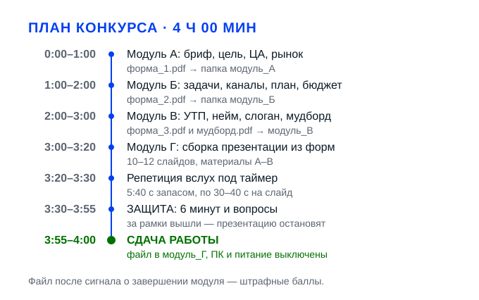
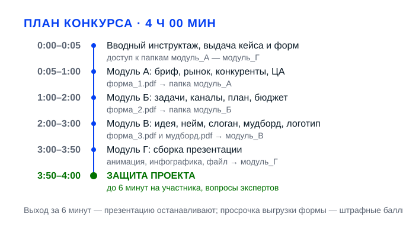
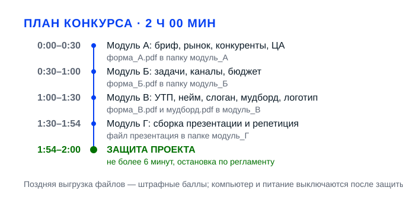

Специалист по рекламе (Р)
Задания ниже — официальные файлы «Абилимпикс» (источник: abilympics-russia.ru), разложенные по категориям. Решения написаны по тексту задания, регламенту и критериям оценки; в них указано, что именно проверяет эксперт.
Школьник
14–16 лет, базовый уровень заданияВыдержка из официального конкурсного задания: страницы, относящиеся к категории «Школьник» (стр. 7–8, 11–13 источника).
Пошаговое решение
Задание категории «Школьники» — рекламная кампания для заказчика из кейса, четыре модуля строго по порядку. Модуль А за час даёт 23 балла за бриф и аналитику рынка, Модуль Б за час — 30 баллов за план и эффективность, Модуль В за час — 24 балла за УТП, нейм, слоган и мудборд, Модуль Г — 23 балла за презентацию и публичную защиту не длиннее шести минут; всего 100 баллов. Результат каждого модуля — заполненная форма в сетевой папке: форма_1.pdf в модуль_А, форма_2.pdf в модуль_Б, форма_3.pdf и мудборд.pdf в модуль_В, презентация в модуль_Г. Время выгрузки эксперты фиксируют, а несвоевременная выгрузка наказывается штрафными баллами, поэтому решение построено не вокруг «сделать красиво», а вокруг «успеть сдать». Модули нельзя делать в обратном порядке: цель из Модуля А определяет задачи и бюджет Модуля Б, а бриф и анализ конкурентов дают материал для УТП, нейма и слогана.

Задача 1. Модуль А: разговор с заказчиком, бриф и аналитика рынкаМодуль А · 23 балла
Первый час конкурса уходит на то, чтобы понять заказчика и записать понимание в форму_1. По критериям этот модуль даёт 23 балла за «составление брифа» и «качество аналитики рынка», то есть оценивают не красоту текста, а наличие в брифе компании и продукта, цели кампании, целевой аудитории, характеристик рынка и конкурентных преимуществ. Всё, что вы напишете здесь, дальше работает как фундамент: из цели вырастут задачи Модуля Б, из портрета аудитории — каналы, из анализа конкурентов — УТП и слоган. Поэтому модуль нельзя проскочить наскоро: сэкономленные здесь десять минут стоят дороже, чем кажется, потому что переделывать придётся уже три модуля.
Действие 1.1. Разобрать кейс заказчика и выписать факты
Шаг 1.1.1
Открываем файл кейса и читаем его дважды. Первый раз целиком, чтобы понять, кто заказчик и что он продаёт; второй раз с выделением, выписывая в отдельный документ факты по шести блокам: компания (название, чем занимается, сколько лет на рынке), продукт (что именно рекламируем, цена, характеристики), география, срок кампании, бюджет и его разбивка по каналам, особые требования заказчика. На каждый факт — цифра или цитата из кейса, а не пересказ вроде «бюджет небольшой».
В перечне ожидаемых результатов Модуля А отдельными строками стоят «наличие в брифе информации о компании, продвигаемом товаре/услуге» и «наличие в брифе описания целей РК»: эксперт идёт по чек-листу и ищет эти сведения глазами. Выписанные факты экономят время: в следующих модулях вы переносите готовые строки вместо повторного чтения кейса. Блок «составление брифа» вместе с «качеством аналитики рынка» — это все 23 балла модуля.
Проверьте список: не меньше десяти пунктов, в каждом конкретика из кейса — название, сумма, дата, адрес. Если по какому-то блоку фактов нет, отметьте это отдельно: значит, вопрос придётся задать на консультации независимого эксперта, которую по КЗ организуют во время выполнения задания.
Самая частая ошибка — писать бриф по памяти после одного прочтения: в графе бюджета появляется выдуманная сумма, в графе продукта не тот ассортимент. Эксперт сверяет бриф с кейсом, и расхождение читается как невнимательность: баллы уходят и за бриф, и за аналитику, а следующие модули строятся на неверных цифрах.
Эксперт кладёт ваш форма_1 рядом с кейсом и сверяет суммы, сроки и название продукта, отдельно отмечая, есть ли в брифе строка про конкурентные преимущества заказчика.
Шаг 1.1.2
Отдельным блоком выписываем ограничения: что заказчик запрещает и что обязательно. Смотрим на тон (допустимо ли обращение на «ты», разрешён ли юмор), на язык, на юридические рамки (нельзя обещать гарантированный результат, называть конкурентов, брать чужие фото), на брендбук (цвета, логотип, шрифт), на бюджет, который превышать нельзя, и на срок кампании. Каждое ограничение — отдельная строка с пометкой «нельзя» или «обязательно» и ссылкой на пункт кейса.
Ограничения напрямую влияют на оценку «качества и оригинальности разработок» в Модуле В и на «полноту контента» в Модуле Г: идея, которая нарушает брендбук или обещает невозможное, обходится дороже, чем скучная, но законная. Кроме того, часть ограничений — прямые условия кейса, и если там написано «бюджет 150 000 рублей на 30 дней», а в плане появляется телевизионный ролик, эксперт сразу видит, что задание не прочитано.
Список ограничений занимает не меньше пяти строк, и в каждой указан источник: «пункт 3 кейса», «брендбук, с. 2». Проверьте себя вопросом: если бы я придумал шутливую идею про школу, я бы знал, разрешено это или нет? Если ответа в списке нет, вернитесь к кейсу.
Типичный промах — не заметить строку про бюджет и запланировать «всё сразу»: в Модуле Б такой план не сойдётся по сумме, а переделывать его уже некогда. Второй — пропустить запрет на скидки и построить всё УТП вокруг низкой цены.
Эксперт проверяет бриф на соответствие кейсу в конце модуля, когда файл уже выгружен: несоответствие по бюджету или продукту он отмечает отдельным пунктом.
Шаг 1.1.3
Сразу создаём рабочий файл под форму_1: таблица на две колонки и восемь-десять строк, слева вопрос брифа («Заказчик», «Продукт или услуга», «Цель РК», «Целевая аудитория», «Рынок», «Конкуренты», «Конкурентные преимущества», «Бюджет и срок»), справа ответ. Имя файла — форма_1, на выходе PDF, папка — модуль_А. Каркас делаем до заполнения: так видно, каких данных не хватает, и не приходится переверстывать таблицу в последние десять минут.
Критерий сформулирован буквально: «наличие в папке модуль_А файла форма_1.pdf». Значит, балл зависит не только от содержания, но и от имени файла, формата и места. Пустая таблица-каркас ещё и дисциплинирует: вы заполняете её по ходу модуля, а не собираете всё в конце, когда время уже ушло.
Проверьте три вещи: файл лежит именно в папке модуль_А, а не в корне сетевой папки; имя ровно форма_1, без «копия» и «итог»; файл открывается двойным щелчком. Пустых ячеек в каркасе быть не должно: если данных нет, пишите «уточнить у заказчика».
Ошибка, которая стоит баллов на пустом месте: сохранить файл как «бриф_финал_v2.docx» и положить в корень. Эксперт ищет конкретное имя в конкретной папке, не находит, и модуль считается несданным, даже если внутри отличная работа.
Перед оценкой эксперт открывает сетевую папку и сверяет список файлов с перечнем ожидаемых результатов: сначала наличие и имя, потом содержание. Отдельно он смотрит, не лежит ли бриф в корне папки: файл не на месте приравнивается к отсутствующему.
Действие 1.2. Сформулировать цель рекламной кампании
Шаг 1.2.1
Определяем, на каком этапе воронки находится заказчик, и выбираем тип цели. Если о компании никто не знает, цель на осведомлённость — охват и узнаваемость. Если знают, но не покупают, цель на интерес и вовлечение. Если покупают, но мало, цель на конверсию: заявки, звонки, чеки. Для школьной категории безопаснее осведомлённость плюс первая конверсия: кампания на тридцать дней при небольшом бюджете физически не успевает пройти весь путь.
Цель — первая строка брифа, и от неё зависит всё остальное: задачи Модуля Б, набор каналов, распределение бюджета. Если написать «повысить продажи» без указания этапа воронки, дальше невозможно доказать, что выбранные каналы ведут именно к этой цели, а «эффективность рекламной кампании» — отдельная половина 30 баллов Модуля Б.
Проверьте формулировку вопросом: по ней понятно, что именно должно измениться — знание, интерес или число обращений? Если в цели стоят два этапа одновременно, например узнаваемость и продажи, выберите главный, а второй запишите как задачу.
Классика — цель «привлечь как можно больше клиентов». Она неизмерима: под неё нельзя посчитать бюджет, нельзя проверить результат и нельзя защитить план перед экспертом. Вторая ошибка — поставить цель, которую невозможно достичь за срок кампании из кейса.
Эксперт читает цель в брифе и держит её в голове до защиты: на Модуле Г он спрашивает, как ваши каналы ведут к этой цели, и ответ должен звучать теми же словами.
Шаг 1.2.2
Записываем цель одной фразой с числом, сроком и географией: например, «за 30 дней поднять знание бренда среди родителей 30–45 лет в Уфе с 8 до 20 процентов» или «получить 150 заявок на пробное занятие при бюджете 150 000 рублей». Цифру берём из кейса либо считаем: охват канала умножаем на реалистичный процент отклика (для соцсетей 0,5–2 процента, для листовок у школы 1–3 процента). Срок — тот, что указан в кейсе.
Измеримая цель — это и есть «качество аналитики рынка»: она показывает, что участник понимает связь между деньгами и результатом. Цифра нужна вам и в Модуле Г: слайд с целью и прогнозом выглядит убедительно, а «мы хотели стать известнее» не выглядит никак.
В формулировке должны быть четыре элемента: что меняется, на сколько, среди кого и за какой срок. Проверьте арифметику: бюджет, делённый на целевое число заявок, даёт стоимость заявки; если она выше среднего чека, цель нереалистична и число надо уменьшить.
Ошибка — придумать красивую цифру «рост продаж на 50 процентов» без расчёта: на защите первый же вопрос «из чего следует 50» ломает всю презентацию. Вторая — поставить срок больше, чем длится кампания в кейсе.
Эксперт сверяет цифру цели со сроком и бюджетом из кейса: арифметика проверяется быстро, и явно завышенная цель читается как непонимание основ планирования.
Шаг 1.2.3
Проверяем цель на прочность: считаем, сколько стоит один контакт и одна заявка в выбранных каналах, и умножаем на целевое число. Если выходит больше бюджета, уменьшаем цель, а не увеличиваем бюджет. Рядом с целью в брифе записываем два-три показателя, по которым её будут мерить: охват, число переходов, число заявок, стоимость заявки. Расчёт делаем отдельным блоком под целью, в той же таблице: так видно, из чего взялось число.
Критерий «эффективность рекламной кампании» в Модуле Б оценивает именно связку «цель — показатели — бюджет». Показатели, записанные заранее, превращаются в раздел формы_2 о способах оценки и в слайд с инфографикой на защите: одна работа закрывает два модуля.
Возьмите бюджет из кейса, разделите на целевую цифру и сравните с рыночной стоимостью заявки в этой сфере. Если расчёт сходится в пределах 20–30 процентов, цель реалистична; если расходится в разы, правьте цифру. Пересчитайте один раз в калькуляторе: арифметические ошибки в этом блоке встречаются чаще содержательных.
Самая дорогая ошибка модуля: цель и бюджет живут отдельно, в брифе одна цифра, в плане другая. Эксперт видит несостыковку сразу, а исправлять её придётся в Модуле Б, где на счету каждая минута. Третья ошибка — считать стоимость заявки по всему бюджету, включая производство материалов: показатель завышается, и цель выглядит недостижимой без причины.
На защите эксперты почти всегда спрашивают, откуда взялась цифра цели: заготовьте одну фразу с расчётом, этого достаточно. Он также смотрит, есть ли рядом с целью хотя бы один показатель измерения: цель без метрики считается описанной формально.
Действие 1.3. Описать целевую аудиторию
Шаг 1.3.1
Делим аудиторию по признакам, которые влияют на покупку: кто платит, кто пользуется, кто влияет. Для детского продукта это три разных человека — родитель, ребёнок и, например, бабушка, которая водит на занятия. Выбираем один-два приоритетных сегмента и обосновываем выбор одной фразой: «берём родителей 30–45 лет, потому что они принимают решение о платеже и их проще достать в соцсетях».
В перечне результатов Модуля А отдельная строка — «наличие в брифе информации о ЦА». Оценивают не перечисление «все жители города», а способность сузить: чем точнее сегмент, тем убедительнее выглядят каналы в Модуле Б и тем легче придумать УТП в Модуле В.
Проверьте сегмент тремя вопросами: где этого человека можно найти, назовите конкретную площадку; что у него болит, назовите конкретную проблему; чем он платит, своими деньгами или бюджетом учреждения. Если хотя бы на один вопрос нет ответа, сегмент описан слишком общо.
Типичная ошибка школьной категории — написать «ЦА: все, кто интересуется» или «молодёжь от 14 до 35». Такой сегмент нельзя ни посчитать, ни достать рекламой, и эксперт снимает балл за качество описания.
Эксперт ищет в брифе не слово «ЦА», а признаки сегмента: возраст, доход, географию, мотив. Отсутствие конкретики — минус по критерию брифа. Если сегмент назван, но не привязан к площадке, это тоже отмечается как слабое описание аудитории.
Шаг 1.3.2
Описываем портрет сегмента связным абзацем: возраст, состав семьи, доход, район, работа, что читает и смотрит, где проводит время в интернете и сколько раз в неделю, какой суммой готова рискнуть на первую покупку. Добавляем три барьера — «дорого», «нет времени», «не верю, что поможет», и три триггера — «бесплатное пробное», «отзывы таких же родителей», «рядом с домом».
Портрет — рабочий инструмент, а не украшение брифа: из барьеров рождается УТП в Модуле В, из мест обитания каналы в Модуле Б, из триггеров тексты объявлений. Один хорошо описанный портрет экономит по двадцать минут в каждом следующем модуле. Поэтому он пишется не для отчёта, а для себя: в Модуле Б вы будете сверять с ним каждый канал.
Прочитайте портрет и попробуйте назвать конкретного человека, который под него подходит. Если такого человека нет, портрет выдуман. Второй тест: по портрету понятно, в какой соцсети и в какое время его искать.
Ошибка — переписать портрет из учебника: «женщина 25–45, любит семью и экономию». Эксперт отличает шаблон от наблюдения моментально, а вопрос «почему вы решили, что она читает именно этот канал» ставит в тупик.
На защите эксперты проверяют связку «портрет — канал — сообщение»: если канал не совпадает с портретом, это заметно и оценивается как слабая проработка.
Шаг 1.3.3
Вытаскиваем из портрета один главный мотив и формулируем его словами аудитории, а не компании: не «качественное обучение», а «хочу быть уверена, что ребёнок не бросит через месяц». Записываем мотив в бриф отдельной строкой и рядом возражение, которое он снимает. Формулируйте от первого лица — «я хочу», «мне важно»: так мотив потом легче перенести в слоган. Эта строка станет основой инсайта и УТП в Модуле В.
Критерий «качество аналитики рынка» проверяет, умеет ли участник переводить данные в вывод. Мотив, записанный словами клиента, и есть вывод; он же закрывает требование «определить и описать ЦА», потому что показывает не только кто, но и почему. Если мотив написан от лица компании, он не работает ни в УТП, ни в объявлении.
Проверьте формулировку: она звучит как фраза живого человека в разговоре, а не как слоган? Если да, мотив найден. Если получилось «клиенты ценят качество», вернитесь к барьерам и перепишите. Второй тест — подставьте мотив во фразу «клиент выбирает нас, потому что…»: она должна звучать естественно.
Частая ошибка — оставить мотив на уровне «хочет хорошо и недорого». Это не мотив, а общее место: из него нельзя сделать ни УТП, ни слоган, и Модуль В начнётся с пустого листа. Третья — записать вместо мотива выгоду вроде «экономия времени»: выгода следует из мотива, но не заменяет его.
Эксперт по маркетингу смотрит на строку с мотивом и на то, повторяется ли она в УТП и слогане: повторение признак связной работы, расхождение — признак того, что модули делались отдельно.
Действие 1.4. Показать рынок и конкурентов
Шаг 1.4.1
Описываем рынок четырьмя-пятью характеристиками с цифрами: объём и динамика, география, сезонность (например, пик в августе и сентябре), средний чек, насыщенность — сколько игроков на тысячу жителей. Источники открытые: Росстат и Башкортостанстат, 2ГИС и Яндекс.Карты для подсчёта конкурентов в радиусе, Яндекс Wordstat для частоты запросов, обзоры рынка. Каждую цифру подписываем источником и годом.
«Качество аналитики рынка» — вторая половина 23 баллов Модуля А. Оценивают не объём текста, а наличие конкретных характеристик: эксперт ищет цифры, а не прилагательные. Одна цифра с источником убеждает сильнее, чем абзац рассуждений о перспективах, а сами цифры потом идут в первый слайд презентации и в обоснование бюджета.
В описании рынка должно быть не меньше четырёх цифр, у каждой источник. Проверьте, что данные не старше двух-трёх лет: ссылка на исследование 2015 года в 2026-м выглядит как отписка. Отдельно проверьте сезонность: если её нет в описании, а кампания в кейсе на месяц, непонятно, почему выбран именно этот месяц.
Ошибка — написать «рынок растёт большими темпами» без числа. Второй промах — взять цифры из головы: эксперт может спросить источник, и на защите это первый провал. Третий — смешать городской рынок с республиканским: цифры по Башкортостану и по Уфе отличаются в разы, и подмена видна.
Эксперт просматривает блок рынка на конкретику и источники: наличие ссылок и года данных — прямой плюс по критерию аналитики. Отсутствие источников он отмечает как «аналитика не подтверждена», даже если цифры верны.
Шаг 1.4.2
Собираем таблицу трёх прямых конкурентов: название, позиционирование одной фразой, цена, какие каналы использует, что говорят отзывы, в чём слабое место. Данные берём с их сайтов, из соцсетей, карточек в 2ГИС и отзывов на картах. Слабые места формулируем конкретно: «нет онлайн-записи», «отвечают в соцсетях раз в неделю», «не показывают цены». Таблица на пять колонок и три строки: этого достаточно, чтобы увидеть закономерность.
В перечне результатов прямо стоит «представлены конкуренты», а в брифе — «информация о конкурентных преимуществах заказчика». Преимущество нельзя придумать в вакууме: оно существует только относительно конкурента, и таблица доказывает, что вы смотрели рынок, а не фантазировали.
Проверьте: конкурентов ровно три, а не «много»; у каждого заполнены все колонки; хотя бы у двух указан источник данных. Если все три конкурента описаны одинаково, вы смотрели один агрегатор, а не сами компании. Ещё один тест — по таблице должно быть видно, чем заказчик может отличиться.
Частая ошибка — взять в конкуренты крупные федеральные бренды, с которыми заказчик никогда не пересечётся. Сравнение с ними ничего не даёт, вывод о преимуществе получается ложным, и это видно на защите. Третья ошибка — описывать конкурентов по их же рекламе: слабые места видны в отзывах и в том, чего у них нет.
Эксперт проверяет, реальны ли конкуренты: названия должны существовать, а характеристики совпадать с тем, что видно в открытых источниках. Если названия выдуманы, это выясняется за минуту поиска, и вся аналитика рынка теряет вес.
Шаг 1.4.3
Делаем из таблицы один вывод — где на рынке свободное место. Формулируем так: «все три конкурента продают через соцсети, но никто не показывает расписание и цену сразу; займём эту нишу прозрачностью и онлайн-записью». Вывод записываем в бриф строкой «конкурентные преимущества заказчика» и держим в голове до Модуля В. Проверьте, что он помещается в одну строку таблицы и не требует объяснений.
Требование «наличие в брифе информации о конкурентных преимуществах заказчика» закрывается именно этим выводом. Кроме того, он становится фундаментом УТП: в Модуле В останется превратить преимущество в фразу для клиента, а не искать его заново. Вывод в одну строку ещё и удобно цитировать на защите, когда спросят, чем заказчик отличается от соседей по рынку.
Проверьте: вывод опирается на конкретные строки таблицы и его можно проверить снаружи. Хороший тест — вставить его во фразу «в отличие от конкурентов, заказчик…»: она должна читаться без натяжки. Если вывод звучит как «мы лучше», он не работает: нужен проверяемый признак.
Ошибка — написать преимущество, которое есть у всех: «индивидуальный подход», «опытные педагоги». Такое не отличает заказчика ни от кого и разваливается первым вопросом «а у конкурентов разве не так». Третья — сделать вывод про цену, не проверив цены конкурентов.
Эксперт сопоставляет преимущество из брифа с таблицей конкурентов: если оно не следует из таблицы, балл за аналитику снижается. Хороший вывод он отличает от пересказа: пересказ описывает конкурентов, вывод говорит, что делать.
Действие 1.5. Свести бриф и выгрузить форму_1
Шаг 1.5.1
Переносим всё в каркас формы_1: восемь строк, в правой колонке связные ответы по два-три предложения с цифрами из кейса. Заголовок таблицы — название заказчика и продукта, ниже дата и фамилия участника. Не оставляем пустых ячеек и не пишем «см. выше»: эксперт читает файл построчно, и каждая строка должна отвечать сама за себя. Шрифт не мельче 10 пунктов, чтобы читалось и на экране, и в распечатке.
Ожидаемый результат сформулирован как «наличие в форме_1 брифа в табличном виде», то есть оценивают именно табличную форму, а не эссе. Заполненные строки закрывают сразу пять критериев модуля: компания и продукт, цель, ЦА, характеристики рынка, преимущества.
Пройдите по чек-листу из КЗ сверху вниз: компания и товар есть, цель есть, ЦА есть, характеристики рынка есть, преимущества есть, конкуренты есть. Если напротив любого пункта пусто, дописывайте сразу. Отдельно проверьте строку про бюджет: сумма должна совпадать с кейсом до рубля.
Ошибка — оставить бриф списком тезисов без таблицы: содержание есть, но критерий требует табличную форму, и балл снимается. Вторая — заполнить половину строк и уйти в следующий модуль. Третья — вписать в графу цели три разных цели: эксперт выбирает одну, остальные считаются лишними.
Эксперт оценивает бриф по строкам, а не по общему впечатлению: пустая строка — минус конкретного пункта чек-листа. Он также смотрит, нет ли общих фраз без цифр: «широкий ассортимент» без перечня считается пустой строкой.
Шаг 1.5.2
Сохраняем файл в PDF через «Сохранить как» с выбором формата, а не через печать с обрезанными полями, и проверяем, что таблица не разъехалась и кириллица читается. Кладём в папку модуль_А под именем форма_1.pdf. Затем открываем файл уже из сетевой папки: так видно, что он скопировался целиком и открывается на другом компьютере. Если PDF собрался с пустой второй страницей, удалите её и сохраните заново.
Два критерия модуля относятся к файлу, а не к тексту: «наличие в папке модуль_А файла форма_1.pdf». Несвоевременная выгрузка в КЗ отдельно оговорена как повод для штрафных баллов, а время выгрузки эксперты фиксируют. Проверка «открыть из папки» закрывает самый обидный риск — битую копию.
Файл в папке модуль_А, имя ровно форма_1.pdf, вес не нулевой, открывается и показывает все восемь строк. Убедитесь, что рядом не лежит рабочая версия с другим именем: лишние файлы путают эксперта. Если вес меньше 20 килобайт, скорее всего сохранилась пустая страница.
Самая обидная потеря баллов — сохранить DOCX и уйти, решив, что эксперт откроет. Или выгрузить файл за минуту до конца модуля и не проверить копию: при обрыве связи остаётся пустой файл. Третья ошибка — переименовывать файл уже в сетевой папке: при этом часто теряется расширение.
Эксперт фиксирует время появления файла в папке: если он появился после сигнала о завершении модуля, работа оценивается со штрафом. Он же проверяет, что в папке нет второго файла с похожим именем: двойные версии он не угадывает, а берёт названный по регламенту.
Задача 2. Модуль Б: задачи, каналы, план и бюджетМодуль Б · 30 баллов
Второй час — самый дорогой по баллам: 30 из 100. Здесь цель из брифа превращается в рабочий план: задачи с числами, перечень каналов с обоснованием, план-график по неделям и бюджет с распределением статей. Оценивают две вещи — «план рекламной кампании» и «эффективность рекламной кампании», поэтому в форме_2 должны быть не только суммы, но и метрики, по которым видно, сработало или нет. Главное правило модуля: любая цифра в плане выводится из кейса или из расчёта, а не берётся «на глаз», потому что эксперт складывает бюджет и сверяет его с заданием.
Действие 2.1. Превратить цель в задачи
Шаг 2.1.1
Берём цель из брифа и разбиваем её на три-четыре задачи, каждая из которых шаг к цели: показать продукт 60 000 жителей Уфы за 30 дней, собрать 500 переходов на страницу записи, получить 150 заявок, довести 40 человек до первого занятия. Формулируем глаголами в инфинитиве и с числом, чтобы каждую можно было проверить. Записываем задачи в форму_2 отдельным блоком, первым по порядку.
Критерий модуля звучит как «наличие в форме_2 конкретных задач рекламной кампании»: оценивают именно конкретность. Задачи — мост между целью и каналами: без них бюджет распределяется наугад, а эффективность кампании доказать нечем, и вторая половина 30 баллов остаётся незакрытой.
Проверьте: задач три-четыре, у каждой есть число и срок, и все вместе они складываются в цель. Если сумма задач даёт охват меньше целевого, добавьте канал или увеличьте срок, но не правьте цель задним числом.
Ошибка — переписать задачи словами цели: «повысить узнаваемость». Такая задача не отличается от цели и не подсказывает канал; эксперт отмечает её как неконкретную, и балл за план снижается. Третья — поставить задачу без срока: без даты её нельзя проверить ни в плане, ни на защите.
Эксперт сверяет задачи с целью и с календарным планом: если задача не отражена ни в одном канале, это разрыв логики, и он виден без дополнительных вопросов.
Шаг 2.1.2
Выстраиваем задачи в порядке воронки: сначала контакт и охват, затем интерес и переходы, затем действие и заявка, затем удержание и первое занятие. Каждой задаче присваиваем свой показатель и целевое значение. Такой порядок сразу подсказывает, какие каналы нужны на каждом шаге, и не даёт смешать всё в один список. Задачи записываем в таблицу, по строке на этап, чтобы в форме_2 воронка читалась сверху вниз.
Последовательность задач и есть план кампании, который в Модуле Б оценивают отдельным критерием. Кроме того, воронка даёт естественную структуру слайда с инфографикой в Модуле Г: эксперту видно, что участник понимает путь клиента, а не просто перечисляет площадки.
Нарисуйте четыре прямоугольника и подпишите: контакт, интерес, заявка, первое занятие. Под каждым показатель и цифра. Если хотя бы один прямоугольник пуст, воронка не выстроена и план придётся дополнить.
Частая ошибка — начать сразу с конверсии: «получить заявки», забыв, что человека сначала надо увидеть. Тогда в плане остаются только горячие каналы, охват не набирается, и цель по заявкам не выполняется даже в расчёте.
Эксперт смотрит, есть ли в задачах этап знакомства с продуктом: кампания без верхней части воронки для нового бренда считается спланированной неверно.
Шаг 2.1.3
Для каждой задачи записываем метрику и способ измерения: охват из статистики площадки, переходы по UTM-меткам и счётчику, заявки по форме и звонкам, стоимость заявки делением бюджета на число обращений. Рядом ставим целевое и минимально приемлемое значение: 150 заявок как цель и 90 как порог, ниже которого кампанию надо менять. Таблицу метрик делаем сразу в форме_2, отдельным блоком под задачами, чтобы цифры не пришлось переносить дважды.
Требование «эффективность рекламной кампании» — вторая половина 30 баллов Модуля Б, и оно закрывается именно метриками. Показатель с порогом показывает, что участник умеет не только планировать, но и управлять: понимает, в какой момент план надо править.
В таблице метрик у каждой задачи своя строка, у каждой метрики источник данных и целевое число. Проверьте, что метрики не дублируют друг друга: охват и число просмотров — разные вещи, и путать их нельзя.
Ошибка — ограничиться лайками и подписчиками: это не связано с целью кампании и не считается эффективностью. Эксперт видит подмену и снижает балл по критерию эффективности. Третья ошибка — мерить всё одной метрикой «число обращений»: она не показывает, на каком этапе кампания сломалась.
На защите эксперты просят назвать метрику, по которой участник понял бы, что кампания провалилась: заготовленный ответ с числом производит сильное впечатление.
Действие 2.2. Выбрать каналы и способы продвижения
Шаг 2.2.1
Под каждый сегмент подбираем каналы, где он реально находится: родителям 30–45 лет — ВКонтакте и Телеграм-каналы района, объявления в домовых чатах, площадки у школ; подросткам — короткие вертикальные видео и мессенджеры. На каждый канал пишем одну строку: кому адресован, какой формат, сколько стоит контакт. Отбрасываем каналы, где аудитории нет, даже если они модные.
Критерий «наличие в форме_2 перечня способов и каналов продвижения» оценивает не длину списка, а обоснованность выбора. Канал, не связанный с портретом ЦА из Модуля А, читается как случайный и снижает доверие ко всему плану. Отдельно эксперт смотрит, нет ли в перечне канала, который заказчик не может себе позволить при своём бюджете.
Для каждого канала проверьте три вещи: там есть ваш сегмент, формат подходит продукту, стоимость контакта известна. Каналов должно быть четыре-шесть: меньше — не наберёте охват, больше — не хватит бюджета на заметную частоту.
Ошибка — включить всё, что знаете: телевидение, радио, билборды, листовки, соцсети. При бюджете из кейса такая россыпь даёт по чуть-чуть и нигде не работает; эксперт сразу видит, что бюджет не считался.
Эксперт проверяет связку «канал — сегмент»: каждый канал должен быть привязан к конкретной группе ЦА, а не ко «всем», иначе перечень считается формальным.
Шаг 2.2.2
Для каждого канала выбираем формат и одно сообщение: пост с фото и ценой, короткое видео на 15 секунд, объявление в домовом чате на три строки, листовка А5 с QR-кодом, карточка в геосервисе. Сообщение строим вокруг мотива из Модуля А: сначала боль или желание, потом решение, потом действие. Один призыв на объявление, без двух призывов в одном тексте.
Формат и сообщение — то, что в задании называется способом продвижения; без них перечень каналов остаётся списком слов. Здесь же проверяется преемственность: сообщение должно опираться на бриф, иначе на защите прозвучит вопрос, при чём тут ваша целевая аудитория.
Прочитайте сообщение глазами человека из портрета: понятно ли за три секунды, что предлагают и что делать? Есть ли один призыв? Если призывов два — «звоните и заходите на сайт», — оставьте один и уберите второй.
Частая ошибка — писать сообщение о компании: «мы работаем с 2010 года». Вторая — делать один и тот же текст для всех каналов: в домовом чате и в коротком видео он работает по-разному и в одном из них проваливается.
Эксперт оценивает формулировки по критерию качества и оригинальности разработок, который продолжается в Модуле В: шаблонные фразы запоминаются и потом всплывают на защите.
Шаг 2.2.3
Считаем, какой охват даёт каждый канал при вашем бюджете: берём стоимость тысячи контактов или стоимость размещения из открытых прайсов и делим бюджет статьи. Складываем охваты с поправкой на пересечение аудиторий, обычно минус 20–30 процентов, и сравниваем с задачей по охвату. Если не сходится, добавляем канал или пересматриваем частоту. Расчёт ведём в таблице: канал, стоимость контакта, бюджет статьи, охват, охват с поправкой.
Это проверка плана на реальность: без арифметики охвата бюджет распределяется по вкусу. Именно здесь становится видно, выполнима ли цель из брифа, и появляется материал для слайда с инфографикой в Модуле Г. Если суммарный охват сильно больше задачи, это тоже ошибка: вы платите за людей, которые не ваша аудитория.
Суммарный охват с поправкой на пересечение должен быть не меньше задачи из блока 2.1. Стоимость контакта по каналам отличается в разы — проверьте, что самый дорогой канал даёт что-то, чего не дают остальные.
Ошибка — сложить охваты каналов без поправки на пересечение: получается цифра больше населения города, и на защите это замечают сразу. Вторая — не учитывать, что один человек в соцсети и в домовом чате считается дважды.
Эксперт быстро прикидывает порядок цифр: охват больше численности целевой группы в городе — явный признак ошибки в расчёте, и он проверяет его первым.
Действие 2.3. Собрать план-график кампании
Шаг 2.3.1
Раскладываем кампанию по неделям: первая — запуск и тест двух сообщений, вторая — усиление того, что сработало, третья — пик с максимальной частотой, четвёртая — добор заявок и напоминания. В таблице по строкам каналы, по столбцам недели, в клетках что именно выходит и сколько стоит. Учитываем сезонность из блока рынка: если пик спроса в августе, запуск ставим за две недели до него.
План рекламной кампании — отдельный критерий Модуля Б: оценивают наличие плана в табличной форме, а не рассказ о нём. Календарь показывает, что участник думает о последовательности, а не только о списке каналов, и снимает вопрос, когда всё это выйдет.
В календаре нет пустых недель, у каждого выхода есть дата и стоимость, сумма по столбцам совпадает с бюджетом статьи. Проверьте, что тест сообщений стоит раньше основного размещения: иначе вы платите за непроверенный текст.
Ошибка — поставить всё в первую неделю: деньги кончаются, а кампания ещё идёт. Вторая — забыть про сезонность и запустить акцию после пика спроса, когда аудитория уже выбрала конкурента. Третья ошибка — не оставить времени на согласование макетов: неделя уходит на правки, и старт сдвигается.
Эксперт смотрит на календарь в связке с бюджетом: расхождение сумм по неделям и по статьям — заметная ошибка планирования, её он фиксирует отдельно. Отдельно он отмечает, есть ли в календаре тестовый запуск: без него кампания начинается с платного риска.
Шаг 2.3.2
Проверяем, что деньги распределены по воронке, а не свалены в один этап: примерно 40 процентов на охват и знакомство, 30 на интерес и переходы, 20 на заявки, 10 на удержание и напоминания. Если продукт новый, долю верхней части увеличиваем; если спрос уже есть, усиливаем нижнюю. Отклонение от пропорции записываем с обоснованием, потому что эксперту важна причина, а не шаблон.
Обоснованное распределение — признак того, что участник понимает механику кампании, а не копирует чужой медиаплан. Это напрямую влияет на критерий эффективности: план, где 90 процентов бюджета ушло в один канал, почти всегда не даёт заявок. Пропорция не догма, но она показывает, что участник думает о пути клиента, а не только о закупке показов.
Сложите проценты — должно быть ровно 100, и каждый этап воронки из блока 2.1 должен быть обеспечен деньгами. Если на удержание ноль, а задача про первое занятие есть, план противоречит сам себе. Проверьте также, что на самый дорогой этап не уходит больше половины бюджета.
Ошибка — отдать весь бюджет на продающие объявления, забыв про знакомство: людей, готовых купить сразу, мало, и заявок не будет. Обратная крайность — потратить всё на охват и не получить ни одного обращения.
Эксперт сверяет доли бюджета с задачами: если задача про заявки не обеспечена деньгами, критерий эффективности считается не закрытым. Он смотрит, названы ли доли в процентах: без них распределение приходится считать самому, и это минус.
Шаг 2.3.3
Закладываем резерв 10 процентов бюджета на правки: если через неделю стоимость заявки выше плановой, резерв уходит на усиление работающего канала. Заранее записываем два правила: при какой цифре меняем сообщение и при какой переключаем канал. Это делает план управляемым и показывает, что участник готов к расхождению расчёта с реальностью. Правила пишем в форме_2 отдельной строкой, чтобы они не остались только в голове.
Способы оценки эффективности и реакции на результат — то, что отличает план от списка покупок. В Модуле Б за это дают часть 30 баллов, а на защите вопрос «что вы сделаете, если не сработает» звучит почти всегда, и готовый ответ с числом выглядит убедительно.
В форме_2 есть строка «резерв» с суммой и два правила с числами. Проверьте, что резерв не больше 15 процентов: слишком большой запас выглядит как нерешительность, слишком маленький — как отсутствие плана Б.
Ошибка — распределить бюджет до копейки и не оставить резерва: первая же неудачная неделя ставит кампанию в тупик. Вторая — держать резерв, но не описать, по какому признаку его тратить. Третья — не указать, кто и по каким данным смотрит цифры: без ответственного правки не случаются вовремя.
Эксперт отмечает наличие резерва и правил реакции как признак профессионального подхода: это редкий элемент в школьных работах, и он заметно выделяет участника.
Действие 2.4. Спланировать бюджет
Шаг 2.4.1
Раскладываем бюджет кейса на статьи: производство материалов (съёмка, дизайн, печать листовок), размещение (таргетированная реклама, посты у сообществ, геосервисы), продвижение у лидеров мнений, промо-механика (пробное занятие, скидка на первый месяц), резерв. Для каждой статьи сумма в рублях и доля в процентах, чтобы итог точно совпадал с бюджетом из кейса.
Критерий «наличие в форме_2 рекламного бюджета с распределением рекламных статей» проверяется буквально: эксперт складывает цифры. Бюджет с распределением показывает, что участник понимает: производство контента тоже стоит денег, и его нельзя взять из воздуха.
Сложите все статьи — сумма должна совпасть с бюджетом кейса до рубля. Проверьте, что производство материалов не превышает 25–30 процентов: если больше, на размещение почти ничего не останется и план не выполнится.
Самая частая ошибка — весь бюджет отдать на размещение и нарисовать дизайн бесплатно. Эксперт видит, что план нереализуем, и снижает балл за бюджет. Вторая — округлить суммы так, что итог не сходится.
Эксперт проверяет арифметику бюджета первым делом: несовпадение итога с суммой кейса — грубая ошибка, заметная сразу, и она тянет за собой оценку всего модуля.
Шаг 2.4.2
Считаем два ключевых показателя: стоимость тысячи контактов по каждому каналу и стоимость одной заявки по кампании в целом, то есть бюджет, делённый на целевое число заявок. Сравниваем с рыночными ориентирами и, если стоимость заявки выше разумной, меняем пропорции между каналами, а не увеличиваем бюджет. Расчёт делаем по каждому каналу отдельно, а потом сводим в общую таблицу с итоговой строкой.
Эти два числа — язык, на котором разговаривают с заказчиком, и одновременно доказательство эффективности. В Модуле Г слайд с этими расчётами закрывает критерий использования графиков и инфографики и делает защиту убедительной. Заказчику эти два числа понятнее, чем охваты и показы: они переводят рекламу в деньги.
Оба показателя посчитаны и записаны в форму_2, рядом указан источник цен. Проверьте, что стоимость заявки меньше прибыли с одной продажи: иначе кампания убыточна, и это надо честно отметить в плане. Сравните стоимость заявки с ценой пробного занятия: если заявка дороже, механика требует пересборки.
Ошибка — посчитать бюджет, но не посчитать отдачу: тогда на защите нечем ответить на вопрос, сколько стоит один клиент. Вторая — взять цены на глаз, без источника, и получить цифру, которую невозможно защитить.
Эксперт по маркетингу почти всегда спрашивает стоимость заявки: готовый ответ с расчётом — сильный аргумент в пользу участника. Он смотрит также, есть ли рядом источник цен: цифра без источника считается придуманной.
Шаг 2.4.3
Делаем два сценария: базовый на сумму из кейса и урезанный на 70 процентов, на случай если заказчик сократит бюджет. В урезанном оставляем только каналы с лучшей стоимостью контакта и убираем производство в пользу готовых форматов. Такой ход показывает, что план живой и не рассыпается от изменения вводных. Разницу между сценариями описываем одной строкой: что именно теряет кампания при урезании.
Гибкость плана — часть критерия эффективности: кампания, которая работает только при полном бюджете, уязвима. Кроме того, второй сценарий даёт материал для ответов на вопросы экспертов, которые любят проверять устойчивость решения. Второй сценарий ещё и страхует на защите: вопрос о сокращении бюджета перестаёт быть неудобным.
В форме_2 два столбца с суммами, и в урезанном варианте цель по заявкам скорректирована вниз, а не оставлена прежней. Проверьте, что оба сценария укладываются в срок кампании из кейса. Убедитесь, что в урезанном сценарии осталось не меньше трёх каналов: два канала не дают охвата.
Ошибка — сделать второй сценарий простым делением всех сумм на два: при этом остаются каналы, которые при малом бюджете не дают эффекта. Вторая — забыть скорректировать цель, и план становится заведомо невыполнимым.
Эксперт оценивает второй сценарий как признак зрелости: важно, что при сокращении бюджета меняется не только сумма, но и состав каналов. Он проверяет, сохранилась ли при урезании логика воронки: если верхняя часть исчезла, сценарий неверен.
Действие 2.5. Собрать форму_2 и выгрузить её
Шаг 2.5.1
Переносим в форму_2 четыре блока в том порядке, в котором их ищет эксперт: задачи, перечень способов и каналов, план-график, бюджет с распределением статей. Каждый блок отдельная таблица с заголовком, без склеивания в один массив текста. В шапке название заказчика, продукта и период кампании. Нумерацию блоков ставим по порядку, чтобы эксперт шёл по форме сверху вниз без поиска.
Ожидаемые результаты модуля перечислены по пунктам, и каждый должен находиться в файле отдельно: конкретные задачи, перечень способов и каналов, рекламный бюджет с распределением статей. Когда блоки разделены, эксперт находит их за секунды и не теряет балл из-за оформления.
Пройдите по чек-листу Модуля Б: задачи есть, каналы есть, бюджет с распределением есть, план есть. Все таблицы читаемы, шрифт не мельче 10 пунктов, суммы с разделителями разрядов. Отдельно проверьте, что в таблице каналов есть стоимость контакта: без неё перечень выглядит необоснованным.
Ошибка — свалить всё в один абзац: содержание может быть верным, но критерий требует наличия разделов, и эксперт просто не найдёт нужное. Вторая — оставить бюджет без процентной колонки, тогда распределение не видно.
Эксперт читает форму_2 по разделам, сверяя с перечнем ожидаемых результатов: отсутствие раздела — минус конкретного пункта, а не общее впечатление от работы.
Шаг 2.5.2
Сохраняем форму_2 в PDF, кладём в папку модуль_Б под именем форма_2.pdf, открываем уже из сетевой папки и проверяем, что таблицы не поехали. Заодно сверяем суммы: бюджет в форме должен совпадать с кейсом, а цель с брифом из Модуля А. Если что-то не сходится, правим сразу, пока модуль не закрыт. После сохранения закройте файл и откройте заново: так видно, что он не повреждён.
Критерий снова про файл: наличие в папке файла форма_2.pdf. В одном месте КЗ папка названа модуль_2, в другом модуль_Б, поэтому проверяйте оба адреса. Сверка сумм закрывает риск, что в спешке в форму попали цифры из черновика. Проверка обоих адресов занимает полминуты, а стоит целого пункта оценки.
Файл на месте, имя точное, вес не нулевой, открывается. Итог бюджета равен сумме из кейса, целевое число заявок совпадает с брифом. Если обнаружили расхождение, исправляйте немедленно. Сверьте также число каналов в плане и в бюджете: расхождение означает, что одна таблица осталась старой.
Ошибка — выгрузить форму до финальной сверки: потом выясняется, что в бюджете остался черновой вариант, а модуль уже сдан и время вышло. Вторая ошибка — сохранить файл в личную папку вместо сетевой: работа физически есть, но её никто не увидит.
Эксперт сравнивает цифры в форме_2 с брифом: расхождение по цели или бюджету читается как небрежность и снижает оценку сразу по двум модулям. Он также фиксирует время выгрузки: файл, появившийся после сигнала, оценивается со штрафом.
Задача 3. Модуль В: УТП, нейм, слоган и мудбордМодуль В · 24 балла
Третий час — про содержание рекламы: 24 балла за «ключевые элементы рекламной кампании» и «качество и оригинальность разработок». Задание требует определить УТП организации, разработать нейм, разработать слоган и выполнить первичную визуализацию идеи мудбордом, причём в ожидаемых результатах отдельными строками стоят скриншоты, подтверждающие оригинальность нейма и слогана. Это значит, что оценивают не только придуманное слово, но и доказательство, что оно не украдено у чужого бренда. Работа идёт строго по цепочке: сначала инсайт из брифа, из него УТП, из УТП слоган, и только потом картинки — иначе мудборд получается красивым, но ни о чём.
Действие 3.1. Найти инсайт и сформулировать УТП
Шаг 3.1.1
В КЗ сказано «выделение инсайта/УТП/оффера (по выбору)», поэтому выбираем один инструмент и прямо пишем в форму_3, что именно выбрано. Для школьной категории проще всего УТП: оно опирается на преимущество из брифа и не требует длинной аргументации. Если рынок перегрет и отличий не осталось, берём инсайт — фразу, которая описывает чувство клиента точнее, чем конкуренты. Выбор обосновываем одной строкой, чтобы эксперту было видно, что это решение, а не случайность.
Ожидаемый результат модуля сформулирован как «наличие в форме_3 инсайта/УТП/оффера (по выбору)»: эксперт ищет именно этот блок и именно с пометкой, что выбрано. Обоснование выбора входит в критерий качества и оригинальности разработок, потому что показывает ход мысли, а не только результат.
Проверьте: в форме_3 написано, какой инструмент выбран, и есть одна фраза-обоснование. Если блок пуст или в нём лежат все три инструмента сразу, эксперт не понимает, что оценивать, и балл снижается. Если инструмент выбран, но не объяснён, эксперт всё равно поймёт, что оценивать, а вот балл за обоснование потеряется.
Типичная ошибка — написать все три инструмента подряд «на всякий случай»: получается каша, в которой УТП спорит с инсайтом, а оффер дублирует слоган. Вторая — не связать выбор с брифом, и тогда блок висит в воздухе.
Эксперт смотрит на первый раздел формы_3 и проверяет, что выбранный инструмент действительно один и что он опирается на материал Модуля А. Если в разделе лежат все три инструмента, он выбирает один и оценивает только его, а остальные считает лишними.
Шаг 3.1.2
Собираем УТП по рабочей формуле: для кого — что — чем отличается — доказательство. Пример: для родителей, которые боятся, что ребёнок бросит кружок, — первое занятие с педагогом без оплаты, чтобы решение принималось после пробы, а не по фото на сайте. В УТП одно отличие, а не пять: если отличий много, выбираем то, которое труднее скопировать конкурентам за неделю.
УТП — ядро всей кампании: из него выйдет слоган, им будут проверяться сообщения в каналах и он же станет главным слайдом защиты. Критерий качества и оригинальности разработок оценивает именно способность сформулировать отличие коротко и проверяемо, а не перечислить достоинства.
Проверьте формулу по частям: назван сегмент, названо предложение, названо отличие, есть доказательство, которое можно проверить. Если хотя бы одной части нет, УТП получилось рекламным лозунгом, а не предложением.
Ошибка — написать «мы лучшие в городе по качеству и цене»: это не УТП, а набор слов, который нельзя проверить. Вторая — взять отличие, которое легко скопировать, например скидку: конкурент повторит её за день.
Эксперт читает УТП и мысленно подставляет на место конкурента: если фраза подходит и ему, отличие считается несостоявшимся, и балл по критерию оригинальности снижается.
Шаг 3.1.3
Прогоняем УТП двумя тестами. Первый — «и что?»: после каждой фразы спрашиваем, что это даёт клиенту, пока не дойдём до выгоды. Второй — «а конкурент может так сказать?»: если да, отличие не работает и его надо усилить. Результат проверки записываем в форму_3 одной строкой — это доказательство осознанной работы, а не подгонки под красивую фразу. Тесты делаем письменно, а не в уме: на бумаге видно, где фраза рассыпается, а где держится.
Два теста занимают пять минут, но снимают главную претензию экспертов к школьным работам: УТП, которое звучит красиво и ничего не обещает. Кроме того, записанный результат проверки закрывает требование о наличии УТП в форме_3 содержательно, а не формально.
После тестов УТП стало короче и конкретнее, в нём осталась одна выгода. Если после проверки фраза стала длиннее и обросла уточнениями, значит, вы пытались спасти слабое отличие, а не усилить сильное. Если после тестов вы не смогли назвать выгоду одной фразой, вернитесь к мотиву из Модуля А.
Ошибка — пропустить тесты и сразу перенести первую придуманную фразу в форму: на защите вопрос «чем это отличается от конкурента» обычно вскрывает пустоту. Вторая — оставить в УТП два отличия, и тогда ни одно не запоминается.
Эксперт проверяет УТП на защите устно: просит повторить его своими словами, и если участник путается, значит, фраза не своя. Он же проверяет, не подменено ли УТП перечислением услуг: список услуг УТП не является.
Действие 3.2. Разработать нейм и доказать его оригинальность
Шаг 3.2.1
Пишем 8–10 вариантов нейма и не отбрасываем «глупые» на ходу: работаем по трём направлениям — описательные, которые говорят, что делают; ассоциативные, которые дают образ и настроение; неологизмы, то есть новое слово. Для каждого варианта сразу помечаем: легко ли произнести по телефону, понятно ли на слух, нет ли двойного смысла, короткое ли — до трёх слогов.
Количество вариантов здесь важнее качества первых: нейм почти никогда не приходит с первого раза, а десять черновиков дают материал для сравнения. Критерий оригинальности разработок оценивает именно работу с вариантами, а не озарение, и это видно по форме_3.
В списке не меньше восьми строк, у каждой есть пометка по трём признакам: произношение, смысл, длина. Если все варианты однотипные, добавьте неологизмы: они реже совпадают с чужими брендами. Помечайте варианты знаками плюс и минус, а не словами «нравится»: так решение опирается на признаки.
Ошибка — придумать один вариант и сразу влюбиться в него: потом оказывается, что он занят или плохо звучит по телефону. Вторая — брать длинные составные названия из трёх слов: их не запоминают и не воспроизводят.
Эксперт смотрит на список вариантов в форме_3: наличие черновиков показывает процесс, а один готовый нейм без истории выглядит как случайная находка. Он также смотрит, нет ли среди вариантов названия с намёком на инвалидность или на возраст: такие формулировки недопустимы.
Шаг 3.2.2
Из десяти оставляем три по критериям: до трёх слогов, произносится с первого раза, не совпадает с известным брендом. Проверяем каждое: поиск в Яндексе по точной фразе в кавычках, проверка домена в зоне ru, поиск в соцсетях и в открытой базе товарных знаков Роспатента. Скриншоты результатов сохраняем сразу, потому что потом искать их заново некогда.
В ожидаемых результатах модуля отдельной строкой стоит «наличие в форме_3 скриншотов, подтверждающих оригинальность нейма»: без них балл не дают, даже если нейм действительно новый. Проверка ещё и защищает от неприятного разговора на защите, когда эксперт узнаёт знакомое название.
На каждое из трёх названий есть скриншот поиска с видимой датой и запросом. Если по запросу находится крупный бренд в этой же сфере, вариант отбрасываем, а не «немного меняем одну букву». Отдельно проверьте, что название не совпадает с доменом крупного маркетплейса или соцсети.
Ошибка — проверить только поиск и забыть про домен: на защите могут спросить, есть ли сайт, и окажется, что адрес занят. Вторая — сделать скриншот без запроса в строке, такой файл ничего не доказывает.
Эксперт просматривает скриншоты и проверяет, что на них видно сам запрос: снимок без строки поиска он не засчитывает как доказательство. Он также смотрит дату на скриншоте: проверка, сделанная заранее и не относящаяся к этому кейсу, его не убеждает.
Шаг 3.2.3
Вставляем в форму_3 скриншоты поиска и рядом короткий вывод: по запросу такому-то в выдаче нет брендов этой сферы, домен свободен. Один нейм выбираем как финальный и подписываем, по какому критерию он выиграл у двух других. Такой подписью вы показываете, что выбор сделан, а не случился. Скриншоты вставляем в один размер, чтобы они не разъезжались по странице, и подписываем запрос словами, а не только картинкой.
Требование о скриншотах закрывается именно здесь, и здесь же набирается вторая половина критерия оригинальности: оценивают обоснованность выбора. Эксперт за минуту видит, что участник сравнивал варианты и понимает, почему остановился на этом. Кроме того, подпись экономит время на защите: вы не тратите минуту на объяснение того, что видно на экране.
В форме_3 три скриншота, подпись с выводом по каждому и отдельная строка «финальный нейм: …», рядом причина выбора в одно предложение. Все надписи читаемы без увеличения. Проверьте, что подпись и картинка относятся к одному варианту, а не к соседнему: это самая частая механическая ошибка.
Ошибка — вставить скриншоты без подписи: эксперту приходится догадываться, что на них. Вторая — выбрать нейм, который не проходил проверку, и оставить скриншоты от другого варианта: несоответствие видно сразу.
Эксперт сверяет финальный нейм с проверенными вариантами: если финальное название не совпадает ни с одним скриншотом, доказательство считается недействительным.
Действие 3.3. Разработать слоган и проверить его оригинальность
Шаг 3.3.1
Слоган пишем не с нуля, а из УТП: берём главную выгоду и сжимаем её до трёх-шести слов, чтобы фраза произносилась на одном выдохе. Проверяем три обязательных свойства: коротко, конкретно, без штампов вроде «новый уровень» и «широкий выбор». Делаем 6–8 черновиков и оставляем три, которые прошли проверку на слух. Каждый черновик проверяем на слух: произносим вслух и смотрим, не сбивается ли ритм.
Слоган — то, что останется от кампании после её окончания, и то, что эксперт запомнит на защите. Критерий оригинальности разработок оценивает связку «УТП — слоган»: если слоган живёт отдельно от УТП, работа распадается на две несвязанные части. Слоган короче УТП и потому уязвимее: любая общая фраза в нём слышна сразу.
В каждом из трёх вариантов не больше шести слов, нет слов «качество», «уровень», «инновации». Прочитайте вслух: если сбиваетесь на середине, фраза не годится для рекламы. Если в варианте есть слово, которое нельзя произнести с первого раза, он не годится для видео.
Ошибка — взять готовый рекламный штамп: «мы делаем жизнь лучше» подходит любому бизнесу, и это видно. Вторая — сделать слоган длиннее восьми слов: в коротком видео и на листовке он не поместится целиком.
Эксперт читает слоган вместе с УТП и проверяет, что он передаёт ту же выгоду: расхождение он отмечает как слабую проработку концепции. Он оценивает слоган отдельной строкой чек-листа и сверяет его с текстом УТП.
Шаг 3.3.2
Каждый из трёх слоганов проверяем поиском по точной фразе в кавычках и смотрим, не является ли он чужим рекламным слоганом. Отдельно проверяем на слух: не превращается ли фраза в двусмысленность при быстром произнесении. Скриншоты поиска сохраняем так же, как для нейма, с видимым запросом и датой. Проверку делаем по каждому варианту, а не только по финальному: иначе на защите выяснится, что похожая фраза была у конкурента.
В ожидаемых результатах отдельной строкой стоят скриншоты, подтверждающие оригинальность слогана: это самостоятельный пункт оценки, и без файлов он не закрывается. Проверка на слух нужна потому, что слоган живёт в видео и на радио, где его слышат, а не читают.
На каждый из трёх слоганов есть скриншот поиска, и ни по одному не находится известная рекламная кампания. Проговорите фразу быстро три раза: если смысл меняется, вариант отбрасываем. Если поиск выдаёт десятки одинаковых слоганов из чужих кампаний, вариант слишком общий, даже если формально не совпал.
Ошибка — проверять слоган без кавычек: поиск разбивает фразу на слова и выдаёт случайные страницы, из которых ничего не следует. Вторая — оставить вариант с двусмысленностью, который на слух читается как неприличный.
Эксперт смотрит на скриншоты и на то, совпадает ли проверенная фраза с финальным слоганом в форме: подмена варианта после проверки — частая уловка, и она заметна.
Шаг 3.3.3
Собираем связку «нейм плюс слоган» и читаем её вслух так, как она прозвучит в рекламе: название, точка, слоган. Проверяем, что вместе они не длиннее 10–12 слов и что слоган объясняет, зачем клиенту этот продукт. Если связка рассыпается, меняем слоган, а не нейм: нейм уже проверен и обоснован. Проверяем связку и на слух, и на глаз: в объявлении она стоит двумя строками, и перенос не должен ломать смысл.
Связка — это то, что увидит аудитория в первом же объявлении, и то, что эксперт оценивает как целостность разработки. Кроме того, готовая связка нужна в Модуле Г: на слайде с ключевыми элементами она должна читаться как единая фраза. Связка нужна и в форме_3, и в презентации, поэтому её стоит довести до вида, который не стыдно показать крупно.
Прочитайте связку человеку, который не знает задания: он должен понять, что предлагают и кому. Если приходится объяснять, связка не работает и требует правки. Если связка помещается в одну строку листовки А5 крупным шрифтом, длина правильная.
Ошибка — подобрать слоган, который дублирует название по смыслу: «Школа танцев. Учим танцевать» — это не реклама, а повтор. Вторая — сделать связку длинной и потерять ритм при чтении вслух. Третья — оставить связку только в голове и не записать в форму_3: эксперту нечего оценивать.
На защите эксперт просит произнести связку по памяти: если участник читает с листа, значит, фраза ещё не стала своей, и это влияет на оценку презентации.
Действие 3.4. Собрать мудборд
Шаг 3.4.1
Собираем мудборд из 9–12 изображений на одном листе: три-четыре референса настроения, три-четыре цветовых решения с кодами, два-три примера типографики, один-два примера рекламных носителей. Каждую картинку подписываем одной строкой, что именно из неё берём: цвет, композицию, тон. Готовый мудборд сохраняем отдельным файлом мудборд.pdf. Изображения подбираем по одному признаку на картинку, чтобы подпись была честной, а не натянутой.
В задании прямо сказано: «первичная визуализация идеи посредством мудборда», и в ожидаемых результатах есть отдельный файл мудборд.pdf в папке модуль_В. То есть оценивают и наличие мудборда в форме_3, и отдельный файл: две строки чек-листа закрываются одной работой.
На листе 9–12 картинок, у каждой подпись, палитра с кодами вроде 0540F2, файл сохранён под именем мудборд.pdf. Соберите всё на одном листе: мудборд из пяти отдельных страниц не читается как единое решение.
Ошибка — набрать красивых картинок без подписей: получается подборка настроений, а не визуализация идеи, и эксперт не видит связи с УТП. Вторая — взять изображения с водяными знаками: это сразу снижает оценку.
Эксперт смотрит на мудборд в связке с УТП и слоганом: если настроение картинок спорит с текстом, разработка считается несогласованной. Он также смотрит, есть ли в мудборде носители: листовка, пост, вывеска, потому что визуализация идеи без носителей неполна.
Шаг 3.4.2
Проверяем мудборд на цельность: все картинки должны выглядеть как одна кампания, а не как подборка красивых фото. Убираем всё, что спорит по цвету или настроению с УТП: если продукт про спокойствие и надёжность, кричащие цвета в подборке лишние. В форму_3 вставляем превью мудборда, чтобы эксперт видел его, не открывая отдельный файл. Смотрим на лист с расстояния вытянутой руки: если взгляд спотыкается, значит, композиция не выстроена.
Требование «наличие мудборда в форме_3» закрывается превью, а требование про отдельный файл — самим PDF. Двойная подача экономит эксперту время и снимает риск, что он не откроет вложение, а значит, и не поставит балл за визуализацию. Мудборд защищает идею на презентации: на него смотрят несколько секунд, и за это время должно быть понятно настроение кампании.
Проверьте: уменьшите мудборд до размера иконки. Если и тогда понятно, что это одна кампания, цельность есть. Если получилась пёстрая мозаика, уберите два-три самых контрастных изображения. Уберите всё, что не попадает в палитру из трёх-четырёх цветов: остаться должно ощущение одного бренда.
Ошибка — оставить в мудборде картинку, которая нравится лично вам, но не связана с идеей: одна такая рушит впечатление от всего листа. Вторая — не вставить превью в форму_3 и потерять пункт чек-листа.
Эксперт оценивает мудборд быстро, по первому впечатлению от листа: пестрота и случайные картинки читаются раньше подписей. Если подписи к картинкам написаны разными словами об одном и том же, он отмечает это как небрежность.
Действие 3.5. Собрать форму_3 и закрыть модуль
Шаг 3.5.1
Собираем форму_3 по пунктам ожидаемых результатов: УТП или инсайт либо оффер, нейм, слоган, мудборд, скриншоты оригинальности нейма, скриншоты оригинальности слогана. Каждый пункт отдельный раздел с заголовком, скриншоты не мельче читаемого размера, чтобы эксперт видел запрос и дату без увеличения. Сохраняем в PDF под именем форма_3.pdf. Заголовки разделов называем так же, как в перечне ожидаемых результатов: одинаковые слова помогают проверяющему.
Перечень ожидаемых результатов модуля В — это буквально чек-лист из девяти строк, и каждая должна найтись в файле. Когда разделы названы так же, как в задании, эксперт отмечает пункты механически, и ни один не теряется из-за оформления. Формулировки из задания — не канцелярит, а язык проверки: совпадение слов снимает вопросы о том, что вы имели в виду.
Пройдите по чек-листу: УТП есть, нейм есть, слоган есть, мудборд есть, скриншоты нейма есть, скриншоты слогана есть. Все разделы подписаны, ни один скриншот не обрезан так, что пропал запрос. Проверьте, что каждый раздел начинается с новой страницы или хотя бы с заметного отступа.
Ошибка — сложить всё в один раздел «Разработки»: содержание может быть полным, но проверяющий ищет пункты по отдельности и часть не находит. Вторая — уменьшить скриншоты до нечитаемого размера. Третья — забыть скриншоты и оставить только текстовые утверждения о том, что название оригинально.
Эксперт открывает форму_3 и идёт по списку ожидаемых результатов сверху вниз: отсутствие подписанного раздела он отмечает как невыполненный пункт. Он также смотрит, что все скриншоты читаемы на экране ноутбука без увеличения.
Шаг 3.5.2
Кладём форма_3.pdf и мудборд.pdf в папку модуль_В, открываем оба файла уже из сетевой папки и проверяем, что картинки на месте, а таблицы не расползлись. После этого по требованию КЗ выключаем компьютер и питание рабочего места: сетевой фильтр или блок розеток. Порядок именно такой: сначала файлы, потом питание, иначе можно потерять несохранённое. Перед выключением проверьте, что в папке нет файла с похожим именем от предыдущей попытки.
В ожидаемых результатах модуля отдельными строками стоят «компьютер по окончании работ выключен» и «электропитание на рабочем месте выключено»: это баллы, которые теряют просто по забывчивости. Кроме того, в папке должно лежать два файла, а не один, иначе часть чек-листа не закрывается.
Оба файла в папке модуль_В, открываются, картинки видны. Компьютер завершил работу, индикатор на сетевом фильтре погас. Если работаете на ноутбуке, дополнительно проверьте, что он не ушёл в сон с открытой сессией.
Ошибка — выключить питание до сохранения файлов: в спешке теряется последняя версия, и в папке остаётся черновик. Вторая — закрыть крышку ноутбука вместо завершения работы: формально компьютер не выключен, и пункт не засчитывают.
Эксперт обходит рабочие места после сигнала о завершении модуля и смотрит на экран и на сетевой фильтр: выключенная техника — отдельный пункт его чек-листа.
Задача 4. Модуль Г: презентация и публичная защитаМодуль Г · 23 балла
Последний модуль — 23 балла за «полноту контента», «организацию и проведение презентации», «раскрытие темы» и «коммуникацию с аудиторией». По КЗ представление занимает не более 6 минут, и если участник выходит за рамки, презентацию останавливают: регламент здесь не пожелание, а условие оценки. В презентации должны быть материалы всех трёх модулей, элементы анимации или видео, графики и инфографика, а по окончании работы компьютер и питание рабочего места выключены. Здесь уже нечего придумывать заново: выигрывает тот, кто заранее собрал слайды из готовых форм и отрепетировал речь под таймер.
Действие 4.1. Собрать структуру презентации
Шаг 4.1.1
Собираем структуру из 10–12 слайдов, повторяющую логику модулей: заказчик и продукт, цель и аудитория, рынок и конкуренты, задачи, каналы и план, бюджет, УТП, нейм и слоган, мудборд, итог с показателями. Каждый слайд — один смысл и заголовок-вывод, а не «Слайд 3». Сначала пишем заголовки на бумаге: если из одних заголовков читается история кампании, структура верная.
Полнота контента — первый критерий модуля, и он проверяется по наличию материалов всех модулей: брифа, плана, ключевых элементов. Структура, повторяющая порядок работы, гарантирует, что ни один модуль не выпадет, а эксперт увидит логику, а не набор картинок.
Выпишите заголовки в столбик: их 10–12, и по ним без пояснений понятна последовательность. Если заголовок звучит как «Бюджет», добавьте вывод: «Бюджет 150 000 рублей, 40 процентов на охват». В заголовках должны быть цифры: цель, бюджет, срок — иначе они звучат как оглавление.
Ошибка — начать презентацию с себя и с процесса: «мы долго работали и старались». Эксперт ждёт заказчика и задачу, а не отчёт о стараниях, и первые полминуты регламента уходят впустую. Третья — сделать 18 слайдов: при шести минутах это по двадцать секунд на слайд, и рассказ превращается в перелистывание.
Эксперт смотрит на первые два слайда: если из них не понятно, кто заказчик и какая цель, дальше он слушает уже с поправкой на слабый старт. Он также отмечает, есть ли слайд с итогом: презентация без вывода считается незавершённой.
Шаг 4.1.2
Переносим в презентацию реальные материалы: таблицу конкурентов из формы_1, план-график и бюджет из формы_2, мудборд и скриншоты из формы_3. Не пересказываем их словами, а показываем: критерий требует использования материалов всех трёх модулей. Скриншоты обрезаем по границам таблиц, чтобы цифры читались с экрана без увеличения. Под каждой вставкой ставим подпись, из какой формы взят фрагмент, чтобы эксперт видел связь с модулями.
Требование «использование материалов из модулей 1, 2, 3» — отдельная строка ожидаемых результатов: пересказ вместо скриншота её не закрывает. Кроме того, готовые таблицы экономят время: перенос занимает минуты, а рисование заново — полчаса, которых в модуле нет.
На слайдах видны фрагменты всех трёх форм: таблица конкурентов, план по неделям, мудборд. Проверьте читаемость с двух метров: если цифры не разобрать, обрежьте таблицу до трёх строк. Проверьте, что в таблице конкурентов видны названия компаний, а в бюджете — суммы, а не только проценты.
Ошибка — вставить скриншот целой страницы формы: на слайде это серая мелочь, из которой ничего не видно. Вторая — заменить таблицу фразой «план представлен в форме_2»: эксперт не открывает формы во время защиты.
Эксперт сверяет слайды с формами: если на слайдах цифры отличаются от тех, что в файлах, он задаёт вопрос о расхождении. Если на слайде таблица, но в ней нет цифр из формы, он считает материал неиспользованным.
Действие 4.2. Сделать слайды с инфографикой и анимацией
Шаг 4.2.1
На слайдах с рынком, бюджетом и воронкой ставим графики вместо абзацев: круговую диаграмму бюджета по статьям, столбцы по каналам, воронку из четырёх блоков. Значения подписываем прямо на графике, чтобы эксперт читал цифры без пояснений. Один график — один вывод в заголовке слайда. Диаграммы строим в той же программе, где делаем презентацию, и не вставляем картинкой из чужого отчёта: цвета должны совпадать с палитрой кампании.
«Использование в презентации графиков и инфографики» — отдельный пункт ожидаемых результатов, и он же закрывает критерий раскрытия темы: цифры вместо слов показывают, что работа аналитическая. Диаграмма бюджета ещё и защищает от вопроса, куда ушли деньги.
На каждом графике подписаны значения и единицы, легенда не мельче 14 пунктов. Проверьте, что сумма на круговой диаграмме равна бюджету из кейса: расхождение эксперт замечает мгновенно. Сравните подписи на графике с цифрами в форме_2: они должны совпадать до последней цифры.
Ошибка — поставить объёмную диаграмму с тенями: она выглядит эффектно и искажает пропорции, из-за чего доли читаются неверно. Вторая — график без подписей, где значения приходится угадывать. Третья — использовать график ради галочки, без связи с текстом слайда: он занимает место и не объясняет ничего.
Эксперт оценивает инфографику по читаемости: если для понимания графика нужны пояснения, пункт считается выполненным формально. Он проверяет, есть ли на слайде вывод, а не только картинка: график без вывода считается иллюстрацией.
Шаг 4.2.2
Добавляем элемент анимации или короткое видео: появление воронки по шагам, гиф с мудбордом, десятисекундный ролик-тизер с неймом и слоганом. Анимация должна объяснять, а не развлекать: если она не несёт смысла, лучше заменить её статичным слайдом с цифрой. Видеофайл кладём рядом с презентацией и проверяем, что он запускается без вашего компьютера. Для гиф хватает трёх-четырёх кадров: мудборд, нейм, слоган, призыв — этого достаточно, чтобы пункт был закрыт и не съел время.
Ожидаемый результат сформулирован буквально: «использование в презентации элементов анимации или видео, например GIF». Это отдельный пункт чек-листа, и его отсутствие снижает оценку независимо от качества остальных слайдов. Кроме того, анимация помогает удержать внимание на ключевом слайде, где вы показываете связку нейма и слогана.
Анимация запускается на том же слайде, где нужна, и не задерживает показ дольше пяти секунд. Проверьте, что видео встроено или лежит рядом и открывается двойным щелчком. Запустите презентацию в режиме показа и проверьте, что анимация стартует сама, без щелчка в неудачный момент.
Ошибка — вставить анимацию на каждый слайд: защита превращается в карусель, а время уходит. Вторая — оставить видео ссылкой на файл, которого нет в папке модуль_Г. Третья — сделать гиф весом в сотню мегабайт: презентация на чужом компьютере начнёт тормозить.
Эксперт отмечает наличие анимации или видео отдельной строкой и смотрит, связана ли она с содержанием: декоративная заставка балла не добавляет. Он смотрит, воспроизводится ли видео на площадке: файл, который не открылся, не засчитывают.
Шаг 4.2.3
Приводим оформление к единому виду: один шрифт, кегль не мельче 20 пунктов для текста, контрастный фон, не больше двух цветов плюс акцент. Проверяем слайды с расстояния двух метров — так их увидит эксперт на экране. Номер слайда и название кампании ставим на каждой странице. Палитру берём из мудборда: два основных цвета и один акцент, фон однотонный. Заголовки одного размера на всех слайдах, подписи к графикам одного цвета.
Читаемость — часть критерия организации презентации: если эксперт не может прочитать слайд, содержание не работает. Единый стиль ещё и создаёт впечатление цельной работы, что влияет на оценку раскрытия темы. Единое оформление читается как одна работа, а разноцветные слайды выглядят собранными из разных источников, что снижает оценку организации.
Отойдите от экрана на два метра: все заголовки и подписи читаются, цвета не сливаются, на слайде не больше шести строк текста. Проверьте, что палитра совпадает с мудбордом. Пролистайте презентацию в режиме сетки слайдов: все страницы должны выглядеть как части одного документа.
Ошибка — набрать текст кеглем 12 пунктов и прочитать его вслух: это уже не презентация, а документ. Вторая — использовать четыре-пять цветов, от которых рябит в глазах. Третья — вставить слайд с чужим шаблоном из интернета: другой шрифт и фон сразу выдают сборку.
Эксперт смотрит презентацию на проекторе: мелкий шрифт и низкий контраст он отмечает как недостаток оформления. Он оценивает оформление вместе с содержанием: пёстрый или блёклый слайд мешает восприятию цифр.
Действие 4.3. Отрепетировать защиту
Шаг 4.3.1
Прогоняем выступление с таймером: шесть минут — это примерно 550–650 слов, то есть по 30–40 секунд на слайд при 10–12 слайдах. Репетируем вслух, а не про себя: только вслух видно, где фраза длинная и где вы сбиваетесь. Если не укладываетесь, режем аргументы, а не слайды. Читаем вслух с секундомером дважды: первый прогон показывает реальную длину, второй — где сбиваетесь. Отмечаем на распечатке слайдов, на каком слове должен быть переход.
Регламент в КЗ жёсткий: представление не более шести минут, и презентацию останавливают при выходе за рамки. Остановленная защита означает, что часть материалов эксперты просто не увидят, а критерий соблюдения регламента не закрыт. Два прогона дают точность: после первого вы убираете лишнее, после второго запоминаете ритм и перестаёте искать слова.
Хронометраж укладывается в 5 минут 40 секунд с запасом 20 секунд. Проверьте, что финальная фраза про результаты звучит целиком, а не обрывается на полуслове. Второй прогон укладывается в 5:40 без подглядывания в текст. Если время выросло, значит, вы добавляли по ходу.
Ошибка — репетировать молча, перелистывая слайды: на защите речь оказывается длиннее плана в полтора раза. Вторая — рассчитывать на «я быстро скажу», не проверяя время. Третья — репетировать один раз и решить, что хватит: на защите волнение добавляет к темпу 10–15 процентов времени.
Эксперт следит за таймером открыто: он предупреждает о последней минуте, и участник должен быть готов сократить, а не ускоряться. Он засекает время с первой фразы: участник, который начал с «сейчас я быстро», обычно не укладывается.
Шаг 4.3.2
Готовим короткие ответы на пять вероятных вопросов: откуда цифра цели, почему такой бюджет, чем УТП отличается от конкурентов, что делать при провале канала, как мерить результат. На каждый — один-два факта из своих форм, без «ну, я думаю». Ответы держим в заметках, а не заучиваем наизусть. Записываем ответы в заметки на телефоне или на карточке, чтобы перед защитой просмотреть их за минуту.
Коммуникация с аудиторией — отдельный критерий модуля, и вопросы экспертов — его главная проверка. Готовые ответы с цифрами показывают, что участник понимает свою работу, а не пересказывает чужие слайды. Пять заготовленных ответов закрывают почти все вопросы, которые задают на школьной категории, и снимают растерянность.
На каждый из пяти вопросов есть ответ длиной два-три предложения с конкретной цифрой или ссылкой на форму. Проговорите их вслух: если ответ занимает больше тридцати секунд, он слишком длинный. Проговорите ответы вслух и засеките: каждый должен укладываться в двадцать-тридцать секунд.
Ошибка — отвечать общими словами: «мы постарались учесть все факторы». Эксперт ждёт числа или решения, и расплывчатый ответ читается как отсутствие понимания. Третья — заучить ответы наизусть: заученный текст рассыпается от первого уточняющего вопроса.
Эксперт задаёт вопросы по критерию раскрытия темы: ему важно увидеть, что участник может обосновать любое решение из своей презентации. Он оценивает, отвечает ли участник по существу: заготовка, произнесённая не к месту, читается как непонимание вопроса.
Действие 4.4. Провести защиту и закрыть модуль
Шаг 4.4.1
Выходим на защиту по сигналу эксперта, презентацию открываем заранее, до того как вас назовут, в полноэкранном режиме. Первые двадцать секунд: назвать себя, заказчика и одной фразой суть кампании. Дальше идём по структуре, не зачитывая текст со слайдов: слайд — опора, а не шпаргалка. Держим папку с файлами открытой на рабочем столе, а презентацию — в списке последних документов: так запуск занимает секунды.
Критерий «выход на защиту» и «все элементы презентации продемонстрированы» закрываются только фактическим показом: файл, который никто не открыл, не оценивают. Первые секунды задают тон, и уверенный старт заметно влияет на оценку коммуникации. Организация показа входит в критерий проведения презентации, а каждая лишняя минута поиска отнимает время у содержания.
Презентация открыта в полноэкранном режиме, первый слайд на экране, вы стоите так, чтобы не загораживать экран. Проверьте, что пульт или клавиши работают до начала выступления. Проверьте за минуту до выхода: файл открывается, шрифты не подменились, картинки на месте.
Ошибка — искать файл в папке, когда вас уже назвали: две минуты регламента уходят на возню с компьютером. Вторая — читать текст со слайда, повернувшись спиной к экспертам. Третья — открыть презентацию на чужом компьютере без проверки шрифтов: текст разъезжается, и слайды выглядят сломанными.
Эксперт оценивает и организацию: готовность техники, положение у экрана, зрительный контакт — всё это входит в критерий проведения презентации. Он смотрит на первые двадцать секунд: если участник представился и назвал заказчика, дальше он слушает с доверием.
Шаг 4.4.2
Следим за таймером: держимся в пределах шести минут и оставляем 15–20 секунд запаса, чтобы финальная фраза прозвучала целиком. Если видите, что не успеваете, переходите к выводу, пропустив детали, а не ускоряя речь. Ускоренная речь воспринимается хуже, чем сокращённый рассказ. Таймер ставим на 5:40, а не на 6:00: запас нужен на случай, если эксперт задаст уточняющий вопрос по ходу.
Соблюдение регламента — отдельная строка ожидаемых результатов: за выход за рамки презентацию останавливают. Спокойное завершение в срок оставляет у экспертов впечатление управляемой работы, а спешка — обратное. Запас в двадцать секунд — это страховка от остановки: регламент в КЗ жёсткий, а финальный вывод весит больше пропущенной детали.
На отметке 4 минуты вы должны быть на слайде с бюджетом, на 5-й — на ключевых элементах, к 5:40 — на выводе. Сверяйте по часам на экране или по таймеру на телефоне, положенном на стол. Сверьтесь с часами на слайде с бюджетом: если там больше четырёх с половиной минут, сокращайте разговор о рынке.
Ошибка — тянуть до последней секунды и обрывать вывод: незаконченная мысль стоит дороже, чем пропущенный слайд. Вторая — игнорировать предупреждение эксперта о последней минуте. Третья — ускорить речь в конце: эксперт перестаёт понимать, и последние слайды проходят впустую.
Эксперт фиксирует время окончания выступления: превышение регламента он отмечает в протоколе, и это напрямую влияет на балл. Он предупреждает о последней минуте: реакция участника на предупреждение видна и учитывается в оценке организации.
Шаг 4.4.3
На вопросы отвечаем коротко и по факту: сначала прямой ответ, потом одно доказательство из своих материалов. Если ответа нет, честно говорим, что этот параметр не проверяли, и добавляем, как проверили бы. Спорить с экспертом и оправдываться нельзя: оценивается аргументация, а не победа в дискуссии. Держим в голове структуру ответа: цифра, откуда она, что из неё следует. Такой ответ звучит уверенно и занимает двадцать секунд.
Коммуникация с аудиторией — четверть баллов модуля, и вопросы — самая честная её проверка. Умение признать пробел и предложить способ проверки ценится выше, чем попытка защитить слабое место любой ценой. Структура ответа важнее его длины: эксперт оценивает способность приводить обоснованные аргументы, а не скорость речи.
Ответы занимают не больше тридцати секунд каждый, в них есть цифра или ссылка на слайд. Проверьте, что вы не повторяете вопрос целиком перед ответом: это съедает время. После ответа спросите себя, прозвучала ли цифра. Если нет, ответ был общим.
Ошибка — начать оправдываться и рассказывать, как трудно было: эксперт воспринимает это как уход от темы. Вторая — отвечать вопросом на вопрос. Третья — отвечать на вопрос, который не задавали: это сбивает и отнимает время у оставшихся вопросов.
Эксперт оценивает по критерию коммуникации: смотрит на структуру ответа, на опору на свои данные и на то, не теряется ли участник при неудобном вопросе. Он отмечает, ссылается ли участник на свои формы: ссылка на собственные данные — сильный аргумент.
Шаг 4.4.4
После защиты сохраняем презентацию в папку модуль_Г до выступления, а не после: файл — это результат модуля. Если в презентации есть видео, кладём его отдельным файлом рядом и проверяем, что ссылка работает без вашего компьютера. Затем штатно завершаем работу компьютера и обесточиваем рабочее место. Проверяем порядок: сначала файл в папке модуль_Г, потом выключение техники. Так вы не останетесь без сохранённой презентации.
Ожидаемые результаты модуля перечисляют и файл презентации, и выключенный компьютер, и выключенное электропитание: три отдельные строки чек-листа. Файл, выгруженный после защиты, рискует не попасть в оценку, если эксперты уже закрыли модуль. Три строки ожидаемых результатов закрываются в этом порядке, и любая перестановка грозит потерей файла.
Файл в папке модуль_Г, открывается, все слайды на месте, видео найдено. Компьютер выключен, индикатор сетевого фильтра погас. Проверьте, что рядом не осталось черновой версии с похожим именем. Убедитесь, что в папке один файл презентации и одно видео, а не по три версии каждого.
Ошибка — оставить компьютер включённым, решив, что «это мелочь»: это отдельный пункт ожидаемых результатов, и балл за него теряется. Вторая — сохранить презентацию в личную папку и не выгрузить в сетевую.
Эксперт обходит площадку после защит: выключенная техника и наличие файла в папке модуль_Г фиксируются в его чек-листе. Он фиксирует наличие файла до конца работы площадки: файл, появившийся позже, может не попасть в протокол.
Студент
учащиеся колледжей и техникумовВыдержка из официального конкурсного задания: страницы, относящиеся к категории «Студент» (стр. 7–8, 13–15 источника).
Пошаговое решение
Решение разобрано по официальному конкурсному заданию регионального чемпионата «Абилимпикс» 2026 для категории «Студенты» по компетенции «Специалист по рекламе». Задание называется «Разработка рекламной кампании» и состоит из четырёх модулей по одному часу, всего 4 часа и 100 баллов: модуль А — коммуникация с заказчиком и бриф, 23 балла; модуль Б — планирование кампании, 27 баллов; модуль В — ключевые элементы кампании, 22 балла; модуль Г — презентация и защита, 28 баллов. Модули идут строго по порядку от А до Г, в каждом есть форма (в модуле Г формы нет), которую заполняют результатами работы и загружают в сетевую папку до конца модуля: просрочка наказывается штрафными баллами. Защита длится не более шести минут, и презентацию останавливают, если участник выходит за рамки. Внутри каждого модуля работа идёт по одной схеме: сначала анализ, потом решение, потом проверка и выгрузка файла.

Задача 1. Собрать бриф по кейсу заказчикаМодуль А · 23 балла · 1 час
Первый час посвящён тому, чтобы понять заказчика и превратить его просьбу в рабочий документ. В кейсе уже лежат все вводные: кто заказчик, что продвигаем, какой бюджет назван и на какой срок рассчитана кампания. Задача модуля — не придумать рекламу, а доказать, что вы понимаете рынок, конкурентов и покупателя, и собрать это в форму_1 таблицей. Оценивается бриф целиком: и наличие всех блоков, и качество аналитики, потому что дальше вся кампания растёт из этих строк.
Действие 1.1. Разобрать кейс и выписать вводные
Шаг 1.1.1
Кейс читаем целиком, от первой строки до последней, и только потом открываем форму_1: пока форма пустая, внимание не цепляется за поля, и задача видна как история заказчика. По ходу чтения выписываем на черновик шесть вещей: кто заказчик и чем он занимается, что именно продвигаем (товар, услуга, торговая марка), с какой просьбой он пришёл, какой бюджет назван, на какой срок рассчитана кампания и в каком городе или районе она идёт. Каждый пункт записываем словами из кейса, а не своим пересказом: «кофейня на 24 посадочных места у остановки» точнее, чем «общепит».
Модуль А стоит 23 балла из 100 и целиком строится на вводных кейса. Если в брифе появится заказчик, которого в кейсе нет, или бюджет, отличающийся от названного, эксперт увидит выдумку и снимет баллы за качество аналитики. Кроме того, эти шесть строк — фундамент всех следующих модулей: цель, каналы и распределение бюджета в модуле Б растут именно отсюда, и ошибка на этом шаге размножается по всей работе.
На черновике шесть подписанных строк, в каждой — конкретика из текста, и ни одной пометки «уточнить». Перечитайте кейс вторым проходом, ведя пальцем по строкам: на втором чтении почти всегда находится цифра, пропущенная в первый раз, — чаще всего срок кампании или география. Если бюджет в кейсе разбит по каналам, перенесите разбивку отдельной строкой.
Самая частая ошибка — читать кейс по диагонали и сразу открывать форму, подставляя привычную схему «магазин одежды, молодёжь, соцсети». Если продукт в кейсе другой, весь бриф разваливается, а переделывать его в конце часа уже нечем. Вторая ошибка — пересказывать кейс своими словами и потерять сумму бюджета: «примерно миллион» вместо точных цифр даёт расхождение, которое эксперт фиксирует в распределении бюджета.
Эксперт сверяет бриф с кейсом построчно и первым делом смотрит, тот ли заказчик и тот ли продукт описаны. Отдельно он отмечает, перенесены ли в бриф цифры из кейса или участник подставил свои.
Шаг 1.1.2
Проходим по шести строкам и отмечаем, чего не хватает для работы: обычно в кейсе нет данных о прошлых кампаниях, о среднем чеке, о сезонности или о том, что заказчик уже пробовал. Пробелы не заполняем догадками, а выписываем отдельным списком вопросов и задаём их заказчику — на площадке его роль играет эксперт — коротко и по одному: «какой средний чек», «что уже пробовали и с каким результатом», «есть ли ограничения по площадкам». Ответы сразу дописываем в черновик, помечая дату и источник.
В задании прямо предусмотрена коммуникация с заказчиком, и умение задать точный вопрос входит в оценку брифа: 23 балла модуля включают и качество аналитики, а аналитика на догадках рассыпается на первом же вопросе эксперта. Кроме того, вопрос, заданный вовремя, экономит минуты: выяснить средний чек за две минуты дешевле, чем переделывать расчёт окупаемости в конце модуля Б.
Список вопросов закрыт: напротив каждого стоит ответ или честная пометка «данных нет, принимаю допущение». Допущения записаны отдельной строкой, чтобы потом можно было показать эксперту, откуда взялась цифра. Если ответ меняет цель или бюджет, черновик правим сразу, а не держим в голове.
Типичная ошибка — стесняться спрашивать и придумать средний чек «на глаз»: в расчётах он потянет за собой неверную стоимость привлечения, и на защите это первый вопрос, на который нечего ответить. Вторая ошибка — задавать пять вопросов одной длинной фразой: в ответ получите половину, а остальное придётся додумывать.
Эксперт в роли заказчика оценивает, как участник формулирует вопрос: коротко, по делу, с понятной целью. Момент — первые минуты модуля, пока он ещё рядом.
Действие 1.2. Сформулировать цель рекламной кампании
Шаг 1.2.1
Разделяем на черновике две вещи, которые постоянно путают: бизнес-цель заказчика и коммуникационную цель кампании. Бизнес-цель звучит деньгами и объёмом — «выйти на выручку столько-то в месяц», «поднять средний чек», «заполнить зал в будни». Коммуникационная отвечает, что должно измениться в голове покупателя, чтобы это случилось: знание, отношение, намерение. Записываем обе строки рядом, а под ними — какой шаг воронки мы реально двигаем: от незнания к знанию, от знания к пробе.
Цель — первый пункт ожидаемых результатов модуля А, её наличие проверяют отдельно. Но важнее другое: из коммуникационной цели вырастают задачи модуля Б и метрики оценки. Если записать только «повысить узнаваемость», в следующем модуле нечего будет считать, а бюджет распределится наугад.
Проверьте себя вопросом: если кампания пройдёт идеально, что именно изменится и как мы это увидим в цифрах? Если ответа нет — цель записана слишком общо. В черновике должно быть две строки: бизнес-результат заказчика и изменение в восприятии, и вторая строка должна объяснять первую.
Классическая ошибка — сразу писать «привлечь больше клиентов»: такая цель не отвечает, кого именно и откуда, и под неё нельзя подобрать каналы. Вторая — уйти в творчество и сформулировать цель как идею ролика. Тогда модуль Б останется без измеримой опоры, а эксперт отметит, что цель не связана с кейсом.
Эксперт читает блок цели в форме_1 и смотрит на связку «просьба заказчика — цель кампании». Разрыв между ними он отмечает как слабую аналитику, а цель без срока и цифры — как отсутствие измеримости. Смотрит он это в готовом файле, но помнит, что цель должна была появиться в первом часу.
Шаг 1.2.2
Переписываем цель по SMART, подставляя цифры из кейса: конкретно (что и для кого), измеримо (в каких единицах считаем), достижимо (сверяем с бюджетом и сроком), значимо (зачем заказчику) и с датой. Рабочая формулировка выглядит так: «за 3 месяца кампании поднять знание марки в районе с 12 до 25 процентов среди женщин 25–45 лет при бюджете столько-то рублей». Цифры берём из кейса, а если их там нет — ставим своё допущение и подписываем его.
Измеримая цель — то, за что дают баллы и за что потом спрашивают на защите. Она же защищает от вопроса «почему вы выбрали именно эти каналы»: ответ всегда один — потому что они двигают вот эту цифру к вот этому сроку. Без цифры цель становится лозунгом, и модуль Б теряет логику, за которую в нём стоит часть из 27 баллов.
В формулировке есть срок, аудитория, метрика, стартовое и целевое значение. Прочитайте её вслух: если звучит как лозунг на плакате — переписывайте. Отдельно проверьте, хватает ли названного бюджета: цель, которая требует втрое больше денег, эксперт сочтёт нереалистичной.
Ошибка — оставить в цели только качественные слова: «стать узнаваемее и привлекательнее». Такая цель не даёт ни одной метрики, и в модуле Б придётся выдумывать KPI на ходу. Вторая ошибка — взять красивую цифру с потолка, не сверив её с бюджетом: на защите вопрос «откуда 40 процентов за месяц» ставит в тупик.
Эксперт проверяет, есть ли в цели числа и срок, и совпадают ли они с вводными кейса. Смотрит он это в готовом файле, но помнит, что цифра должна была появиться в первом часе.
Шаг 1.2.3
Сверяем цель с реальностью: прикидываем на калькуляторе, сколько контактов даёт бюджет при средней цене контакта в вашем городе, и сколько из них превратится в покупателей при типичной конверсии. Если для цели нужно в десять раз больше показов, чем buying, цель ужимаем до правдоподобной и записываем рядом обоснование в одну строку: «при бюджете N и цене контакта M охват составит примерно K человек».
Оценка реалистичности — часть критерия качества аналитики. Эксперт видит разницу между участником, который посчитал, и тем, кто написал «увеличить продажи в два раза» на любой бюджет. Кроме того, этот пересчёт сразу подсказывает, какие каналы вообще способны дать нужный объём, и облегчает следующий модуль.
На черновике есть строка с расчётом: бюджет, цена контакта, ожидаемый охват, ожидаемое число обращений. Числа согласованы между собой — при делении одного на другое не получается абсурд. Цель после сверки не изменилась или изменилась осознанно, и это видно по пометке.
Ошибка — считать «в уме» и не записывать: через двадцать минут цифры разойдутся, и в брифе окажутся два разных охвата. Вторая — подгонять расчёт под красивую цель, умножая конверсию: эксперт складывает бюджет и охват на калькуляторе быстрее, чем кажется.
Эксперт пролистывает расчёт и проверяет арифметику выборочно — одну-две строки, чаще всего деление бюджета на охват. Именно там и находится нестыковка, а сам расчёт он относит к критерию качества аналитики и смотрит его до чтения выводов.
Действие 1.3. Провести анализ рынка
Шаг 1.3.1
Собираем по рынку четыре цифры: объём в деньгах, динамику за последние годы, среднюю цену товара или услуги в вашем городе и число игроков. Источники берём открытые и называем их: данные отраслевых ассоциаций и исследований, статистика по региону, карты и справочники вроде 2ГИС для подсчёта конкурентов в радиусе, сервисы подбора слов для оценки спроса. Каждую цифру записываем вместе с источником и годом, иначе она превращается в мнение.
Анализ рынка — отдельный ожидаемый результат модуля А, за него даётся часть из 23 баллов. Цифры нужны не для красоты: объём рынка показывает, стоит ли вообще бороться за долю, а число игроков в радиусе подсказывает, насколько тесно в этой нише. Без этих данных бюджет в модуле Б распределяется интуитивно.
В черновике четыре строки с числами, у каждой — источник и год. Проверьте, что цифры относятся к вашей географии: общероссийский объём в брифе про районный бизнес выглядит нелепо. Если по нише данных нет, честно пишите «оценка по числу игроков и среднему чеку» и показываете, как считали.
Ошибка — вставить первую цифру из поиска без проверки года и географии: часто подставляют данные пятилетней давности или по всей стране. Вторая — написать «рынок растёт» без числа: это не анализ, а фраза, и балл за качество аналитики не ставится.
Эксперт смотрит, есть ли в блоке рынка числа и указаны ли источники. Отсутствие источника он отмечает как слабое место, даже если цифра похожа на правду.
Шаг 1.3.2
К цифрам добавляем то, что определяет поведение покупателя: сезонность, каналы, через которые в этой нише обычно покупают, и барьеры. Сезонность описываем месяцами и процентами — «в январе спрос падает примерно на треть, пик в мае и декабре». Барьеры формулируем бытовым языком: дорого, страшно, непонятно, далеко, нет времени. Заканчиваем тремя выводами по одной строке, каждый начинается со слова «значит».
Задание требует анализа рынка, а не переписывания статистики. Выводы — то, что связывает рынок с решениями: сезонность подскажет даты старта, барьеры станут основой оффера в модуле В. Эксперт по выводам видит, умеет ли участник думать, а не только искать.
Три вывода написаны, и каждый опирается на цифру из предыдущего шага. Прочитайте их подряд: получается короткая логичная история про рынок, а не три несвязанных факта. Если вывод повторяет цифру слово в слово, добавьте следствие для кампании.
Ошибка — ограничиться констатацией: «рынок конкурентный, спрос сезонный». Такие фразы подходят к любой нише и потому не стоят ничего. Вторая — выдумать сезонность без источника: эксперт, знающий местный рынок, заметит это сразу.
Эксперт ищет в блоке слово «значит» и то, что за ним: наличие следствия для кампании он считает признаком настоящего анализа. Если вывод повторяет цифру, он отмечает это как пересказ источника, а не как работу с рынком.
Шаг 1.3.3
Переносим анализ рынка в форму_1, соблюдая её структуру: если в форме есть готовые строки под рынок, заполняем их, если нет — делаем компактную таблицу из трёх колонок «показатель — значение — источник» и под ней абзац выводов. Шрифт оставляем тот, что в форме, кегль не уменьшаем ниже читаемого: эксперт смотрит документ на экране. Длинные абзацы режем на строки по смыслу.
Оценивается файл формы_1, а не черновик, поэтому аккуратность переноса — часть баллов. Таблица с источником читается за десять секунд, сплошной текст — за минуту, и разница уходит в оценку качества аналитики. Кроме того, форма может иметь фиксированные поля, и вставка текста мимо них ломает вёрстку документа.
Откройте форму в режиме просмотра и пролистайте: таблица не разъехалась, текст не выходит за поля, цифры не перенеслись вразнобой. Каждая строка таблицы имеет значение и источник. Проверьте, что в документе нет пустых ячеек с пометкой «позже».
Ошибка — копировать в форму куски текста с чужим форматированием: кегль прыгает, таблица рассыпается, и документ выглядит небрежно. Вторая — оставить в форме пустые поля: эксперт отмечает отсутствие блока, даже если на черновике он был.
Эксперт листает форму целиком и отмечает полноту блоков, а не красоту оформления. Разъехавшаяся таблица и мелкий кегль затрудняют чтение, и он переносит это в оценку качества аналитики: содержание в нечитаемом виде не считается сданным.
Действие 1.4. Проанализировать конкурентную среду
Шаг 1.4.1
Отбираем конкурентов по трём признакам: та же категория товара или услуги, та же география (радиус 15–20 минут пешком или 10 минут на машине), сопоставимый уровень цен. Сначала собираем длинный список из восьми-десяти названий по картам и поиску, потом оставляем четыре: двух прямых — кто борется за того же покупателя, и двух косвенных — кто закрывает ту же потребность другим способом. У каждого записываем адрес, средний чек и то, чем он берёт клиента.
Анализ конкурентной среды — отдельный ожидаемый результат модуля А. Именно на этом шаге появляется материал для идеи кампании в модуле В: идея почти всегда рождается в разрыве между тем, что обещают конкуренты, и тем, чего хочет покупатель. Случайно взятые конкуренты дают случайные выводы, и эксперт это видит по невнятному блоку.
В черновике четыре строки, у каждой — название, адрес, цена и одна фраза о том, чем привлекает. Проверьте географию по карте: если один конкурент в соседнем городе, он не влияет на выбор покупателя и в сравнение не годится. Убедитесь, что все четверо реально работают, а не закрылись.
Ошибка — брать в сравнение федеральные сети и крупные маркетплейсы, с которыми районный бизнес не конкурирует напрямую: таблица получится красивой, а выводы бесполезными. Вторая — взять только тех, кто рядом, и забыть про косвенных конкурентов: покупатель сравнивает вашу кофейню не только с кофейней, но и с булочной.
Эксперт проверяет обоснованность выбора: почему именно эти конкуренты и по какому признаку отсеяны остальные. Отсутствие критерия отбора он отмечает в блоке конкурентной среды, а четырёх конкурентов считает нормой для районного рынка.
Шаг 1.4.2
Строим таблицу сравнения: строки — конкуренты и заказчик, колонки — шесть параметров. Берём те, что важны покупателю в этой нише: цена, ассортимент или набор услуг, расположение и доступность, скорость, сервис, активность в рекламе и соцсетях. Заполняем по фактам: цену смотрим на сайте или в меню, активность — по датам последних публикаций, сервис — по отзывам за последние месяцы. В каждой ячейке короткая формулировка, а не «плюс» и «минус».
Таблица сравнения — доказательство, что анализ сделан, а не описан. Она же даёт заказчику картину, где он проигрывает: чаще всего выясняется, что по цене он в рынке, а по видимости в канале, где сидит его покупатель, отсутствует. Эти разрывы потом становятся задачами модуля Б и аргументами на защите.
Таблица заполнена целиком, без пустых ячеек: если данных нет, пишите «нет данных» и помечайте, как проверяли. По каждой колонке видно, кто лидер и с каким отрывом. Прочитайте строку заказчика и строку ближайшего конкурента рядом: разница должна быть видна глазами, без объяснений.
Ошибка — заполнять таблицу оценочными словами: «хороший сервис», «высокие цены». Такая таблица не отвечает на вопрос, что делать. Вторая — подогнать данные под заказчика, чтобы он везде выглядел лучше: эксперт, знающий город, проверит пару строк и увидит расхождение с реальностью.
Эксперт выборочно сверяет две-три ячейки с открытыми данными — чаще всего цену и часы работы. Точность важнее количества конкурентов в таблице, и одна неверная цифра стоит дороже, чем скромный список из четырёх строк.
Шаг 1.4.3
Из таблицы делаем карту позиционирования: по горизонтали — цена, по вертикали — уровень сервиса или широта предложения, точками наносим конкурентов и заказчика. Смотрим, где скучно — то есть точки сбились в кучу, — и где пусто. Формулируем вывод одной фразой: «в сегменте недорого и быстро все стоят на одном месте, свободна зона быстрого сервиса с понятным качеством». Этот вывод и станет заготовкой идеи.
Карта превращает таблицу в решение. Именно она показывает, есть ли у заказчика шанс занять свободное место, или ему придётся отбирать клиента у соседа ценой. В модуле В идея кампании должна опираться на анализ конкурентной среды — карта и есть эта опора, без неё идея выглядит придуманной.
На карте пять точек, подписаны, оси подписаны, масштаб понятен. Вывод сформулирован так, что из него следует действие: куда двигаться и за счёт чего. Если вывод звучит как «конкуренция высокая», карта нарисована зря.
Ошибка — рисовать карту на осях, которые ничего не значат для покупателя, например «креативность» и «современность»: точки расставить можно, а решение не вытекает. Вторая — оставить карту без вывода, тогда она остаётся картинкой.
Эксперт смотрит на карту и на вывод под ней: связка между ними — то, что отличает аналитику от иллюстрации. Если точки нанесены, а свободная зона не названа, он считает карту декоративной и балл за вывод не ставит.
Действие 1.5. Описать целевую аудиторию, преимущества и сдать бриф
Шаг 1.5.1
Описываем целевую аудиторию по трём слоям. Первый — сегменты: кто покупает, разбитые по одному-двум признакам, например «сотрудники офисов рядом, обед 12:00–14:00» и «мамы с детьми, выходной утром». Второй — портрет основного сегмента: возраст, занятость, доход, район, привычный маршрут. Третий — что человек думает и чего боится: «не хочу стоять в очереди», «боюсь, что дорого». Каждую мысль пишем его словами.
Целевая аудитория — обязательный блок брифа, и в критериях студенческой категории качество аналитики оценивается вместе с описанием ЦА. Кроме того, портрет задаёт тон и язык всей кампании: без него слоган в модуле В получается ни для кого. Ошибка в ЦА тянет за собой неверные каналы и слитый бюджет.
Портрет такой, что по нему можно узнать человека на улице: есть возраст, место, время и занятие. В блоке мыслей — цитаты, а не перечень выгод. Проверьте, что основной сегмент один: если сегментов пять и все основные, кампания расползётся.
Ошибка — писать «все жители города от 18 до 60»: такая аудитория не помогает выбрать ни канал, ни сообщение. Вторая — описывать ЦА терминами из учебника: «средний класс с потребительским поведением». Эксперт ищет в этом блоке живого человека и не находит.
Эксперт оценивает конкретность: назван ли сегмент, есть ли география, время и мотив. Общие слова про «широкую аудиторию» он считает отсутствием описания, а цитаты из лексикона покупателя — признаком настоящей проработки.
Шаг 1.5.2
Выписываем конкурентные преимущества заказчика и прогоняем каждое через вопрос «и что с того». «Своя обжарка» — и что? «Кофе свежее, чем у соседей, которые берут готовый». «Работаем с 7 утра» — и что? «Успеваете выпить до начала смены». Оставляем три преимущества, которые проходят проверку, и у каждого записываем доказательство: цифру, факт, срок, фотографию.
Конкурентные преимущества — обязательный пункт брифа и прямой задел для УТП в модуле В. Преимущество без доказательства на защите превращается в рекламное обещание, а обещания эксперт не засчитывает. Кроме того, именно здесь отсеиваются свойства, которые есть у всех: «качественно» и «индивидуальный подход» не отличают заказчика ни от кого.
Три преимущества, у каждого — доказательство в одну строку и проверка на уникальность: есть ли это же у конкурента из таблицы. Если есть у всех — вычёркиваем, даже если звучит хорошо. Оставшиеся должны быть понятны покупателю без объяснений.
Ошибка — перечислять свойства вместо выгод: «итальянское оборудование» покупателю ничего не говорит. Вторая — оставить преимущества без доказательств: на защите первый же вопрос «чем подтвердите» обнуляет блок, а вместе с ним и часть баллов за аналитику.
Эксперт проверяет, отличаются ли преимущества от конкурентов из таблицы. Совпадение с соседом он отмечает как слабую проработку, а преимущество с доказательством в цифре — как сильную сторону брифа.
Шаг 1.5.3
Собираем бриф в форму_1 целиком, по её полям: компания и продукт, цель кампании, анализ рынка, конкурентная среда, целевая аудитория, конкурентные преимущества. Заполняем последовательно, сверху вниз, чтобы не потерять блок. Сохраняем файл под именем форма_1.pdf, кладём его в папку модуль_А и проверяем, что он читается: открываем готовый PDF и листаем до последней страницы.
Ожидаемый результат модуля — наличие в папке модуль_А файла форма_1.pdf с брифом в табличном виде и всеми обязательными блоками. Проверяют именно файл: работа, оставшаяся в черновике или в неверной папке, не существует для эксперта. Просрочка выгрузки наказывается штрафными баллами, поэтому сдаём с запасом.
В брифе заполнены все шесть блоков, в каждом — таблица или структурированный список. Файл лежит в папке модуль_А, имя ровно форма_1.pdf, размер не нулевой. Откройте PDF на другом устройстве или в другом просмотрщике: шрифты не поехали, таблицы читаются.
Ошибка — сохранить в PDF документ, который на самом деле открывается как картинка: текст не выделяется, эксперт не может прочитать мелкие ячейки. Вторая — положить файл в корень сетевой папки, а не в модуль_А: формально работа сдана, фактически её не найдут.
Эксперт открывает форму сразу после сигнала о сдаче и фиксирует время выгрузки. Отсутствие файла в нужной папке он отмечает как невыполненный модуль, а имя, отличающееся от форма_1.pdf, — как риск, что файл не найдут.
Задача 2. Спланировать рекламную кампаниюМодуль Б · 27 баллов · 1 час
Второй час — самый дорогой по баллам: 27 из 100. Здесь бриф превращается в план: задачи кампании, перечень способов и каналов продвижения, план-график в табличной форме и распределение бюджета с перечнем способов оценки эффективности. Оценивают связность: каждая задача вытекает из цели, каждый канал закрывает задачу, каждая статья бюджета объяснена. План, в котором каналы не связаны с задачами, теряет баллы даже при красивой таблице.
Действие 2.1. Поставить задачи кампании
Шаг 2.1.1
Разбиваем путь покупателя на три отрезка — узнать, заинтересоваться, прийти — и на каждый ставим задачу словами и цифрой. Узнать: «показать сообщение 60 тысячам человек в радиусе двух километров три раза за месяц». Заинтересоваться: «получить 400 переходов на страницу и 120 сохранений акции». Прийти: «привести 90 гостей по промокоду». Задачи нумеруем, чтобы в плане и бюджете можно было ссылаться на номер.
Конкретные задачи кампании — первый ожидаемый результат модуля Б. Через них проверяется вся логика: если задача сформулирована как «повысить лояльность», под неё нельзя выбрать канал и нельзя посчитать бюджет. Нумерация задач ещё и защищает план-график: в каждой строке видно, какую задачу она решает.
Три задачи, у каждой — глагол, объект и число со сроком. Проверьте, что задачи не дублируют друг друга и вместе закрывают цель из брифа. Если цель была про знание, а задач про знание нет — план не сходится с первым модулем.
Ошибка — переписать цель три раза разными словами: «повысить узнаваемость», «улучшить знание бренда», «сделать марку известной». Это одна задача, и баллы за конкретность не ставятся. Вторая — поставить задачу, которую нельзя измерить за срок кампании.
Эксперт сверяет задачи с целью из формы_1 и смотрит, разложена ли цель на этапы воронки. Расхождение между модулями он отмечает как отсутствие логики планирования, а задачу без числа — как неконкретную.
Шаг 2.1.2
К каждой задаче подписываем метрику и способ её получения: показы и охват — из кабинета площадки, переходы — из систем аналитики, промокоды — из учёта на кассе, звонки — по номеру с меткой. Рядом ставим плановое значение и дату, к которой его смотрим. Если метрику нельзя получить бесплатно, заранее решаем, чем её заменяем: например, вместо точного охвата считаем число новых подписчиков.
Задание требует указать потенциальные способы оценки эффективности, и это отдельный блок формы_2. Метрика, которую нечем измерить, на защите превращается в обещание. Кроме того, привязка метрики к задаче сразу показывает, какие каналы дают цифру, а какие только «присутствие».
У каждой задачи есть метрика, источник данных и плановое значение. Проверьте реалистичность: 400 переходов при бюджете на таргет в несколько тысяч рублей — это нормально, 40 тысяч переходов — уже нет. Все метрики должны быть доступны заказчику без покупки дорогих исследований.
Ошибка — ставить метрикой «узнаваемость» без исследования: измерить её нечем, и блок оценки эффективности провисает. Вторая — придумать метрику, которой не существует в кабинетах площадок, например «число лояльных клиентов».
Эксперт смотрит на связку «задача — метрика — источник» и проверяет, доступен ли источник заказчику. Метрику без источника он считает нерабочей, а десять показателей на одну задачу — попыткой закрыть непонимание объёмом.
Шаг 2.1.3
Проверяем задачи на выполнимость в срок кампании из кейса: если кампания идёт месяц, задача «удвоить базу клиентов» нереалистична, а «собрать 150 новых контактов» — вполне. Убираем задачи, которые не решаются рекламой: например, «поднять качество обслуживания» — это операционная работа, а не кампания. Оставшиеся три-четыре задачи переписываем начисто в форму_2.
Реалистичность плана — часть оценки, и эксперт проверяет её по срокам из кейса. Лишние задачи размывают бюджет: деньги делятся на пять направлений и не хватает ни на одно. Три задачи, обеспеченные деньгами, выглядят сильнее, чем шесть заявленных и не выполненных.
Задач не больше четырёх, каждая выполнима за срок кампании и решается рекламными инструментами. Прочитайте список и представьте, как вы отчитываетесь по каждой через месяц: если отчёт непонятен, задача сформулирована плохо.
Ошибка — оставить в плане всё, что придумали, «чтобы выглядело масштабно»: бюджет размазывается, и ни одна задача не получает достаточно денег. Вторая — включить задачу, которую нельзя решить рекламой, и получить на защите вопрос, зачем она здесь.
Эксперт оценивает соразмерность: число задач против бюджета и срока из кейса. Перегруз плана он отмечает как неумение приоритизировать, а четыре задачи с деньгами на каждую — как зрелое решение.
Действие 2.2. Выбрать способы и каналы продвижения
Шаг 2.2.1
Выписываем длинный список всего, чем в этой нише можно дотянуться до покупателя: геосервисы и карты, таргет в соцсетях и мессенджерах, поисковая реклама, наружные носители рядом с точкой, листовки и визитки, партнёрства с соседями, местные сообщества и паблики, отзывы и работа с рейтингом, программа лояльности для повторных визитов. Напротив каждого канала пишем, где именно сидит наша аудитория и в какой момент она туда заходит.
Перечень способов и каналов — обязательный блок формы_2. Длинный список нужен, чтобы выбор был осознанным: если в списке три канала, непонятно, отобрали вы лучшие или просто не знали других. Эксперт по длине списка видит широту профессионального кругозора.
В списке не меньше восьми каналов, у каждого — пометка, для какого сегмента ЦА он подходит. Проверьте, что каналы из списка действительно существуют в вашем городе: местный паблик, районная газета, площадка у остановки.
Ошибка — ограничиться «соцсети и листовки», потому что это первое, что приходит в голову: список из двух каналов не даёт выбора и показывает узкий кругозор. Вторая — включить канал, где вашей аудитории нет, например профессиональную соцсеть для кофейни у дома.
Эксперт смотрит на перечень каналов и отмечает, есть ли в нём каналы под каждый сегмент ЦА из брифа. Список из восьми-десяти позиций он считает нормой, а три канала без объяснения отсева — узким кругозором.
Шаг 2.2.2
Отбираем каналы по четырём фильтрам и записываем результат по каждому: охват аудитории в нашем радиусе, цена контакта, скорость запуска, трудозатраты на производство материалов. Канал, который требует съёмок за неделю, не годится для кампании на две недели. Оставляем три-четыре канала, и в форме_2 у каждого указываем роль: основной, поддерживающий, точечный.
Выбор каналов — это и есть профессиональное решение, за которое дают баллы модуля Б. Обоснование по фильтрам показывает, что канал выбран расчётом, а не привычкой. Роль канала нужна для бюджета: основной забирает большую часть денег, точечный — небольшую, и это видно в распределении.
По каждому оставленному каналу есть четыре оценки и одна строка обоснования. Проверьте, что каналы не дублируют друг друга по функции: два инструмента, которые делают одно и то же, делят бюджет без пользы.
Ошибка — выбрать каналы «как у конкурента», не проверив цену контакта: у соседа может быть бюджет в пять раз больше. Вторая — оставить канал, который не успевает запуститься в срок, и в плане появится строка с невыполнимым дедлайном.
Эксперт проверяет, связано ли обоснование с ЦА и бюджетом, и различаются ли роли каналов. Канал без обоснования он считает случайным, а два канала с одинаковой ролью — распылением бюджета.
Шаг 2.2.3
Для каждого выбранного канала описываем формат: что именно показываем — пост с фотографией и оффером, баннер 1080 на 1080, карточку в геосервисе с обновлёнными фотографиями и часами работы, короткое видео 15 секунд, листовку А6 с промокодом. Указываем размер, длину текста и место, куда ведём: страница, карта, мессенджер. Формат пишем так, чтобы дизайнер или вы сами могли сделать макет без переспросов.
Форматы — мост между планом и производством материалов. В задании требуется план кампании в табличной форме, и строка без формата превращается в общее пожелание. Кроме того, форматы определяют стоимость: производство видео и статичного баннера отличаются в разы, а бюджет в модуле Б считается по факту работ.
У каждого канала есть формат с размерами и точкой приземления. Проверьте, что форматы соответствуют площадке: вертикальное видео для коротких лент, квадрат для карточки, горизонтальный баннер для сайта. Убедитесь, что все точки приземления существуют и открываются.
Ошибка — писать «пост в соцсетях» без формата и без ссылки: при производстве выяснится, что не хватает фотографий и текста, а времени нет. Вторая — вести на страницу, которой нет или которая не адаптирована под телефон.
Эксперт смотрит, насколько план пригоден к исполнению: форматы, размеры, точки приземления. Это он относит к качеству планирования, а строку «пост в соцсетях» без формата — к недоделанной работе.
Действие 2.3. Собрать план-график кампании
Шаг 2.3.1
Строим таблицу плана: колонки «этап и даты», «канал», «формат», «задача, которую решаем», «что нужно подготовить», «кто отвечает». Разбиваем срок кампании на отрезки по неделям или по фазам — подготовка, запуск, поддержка, финал. В каждой строке один канал и один формат, чтобы строку можно было поручить и проверить. Первой строкой ставим дату начала кампании из кейса, последней — дату окончания, чтобы границы плана были видны сразу.
План рекламной кампании в табличной форме — прямой ожидаемый результат модуля Б. Колонка с номером задачи связывает план с целями, колонка с подготовкой показывает, что вы понимаете производственный цикл. Именно по этой таблице эксперт проверяет, умеет ли участник планировать, а не только перечислять.
Каждая строка имеет дату начала и окончания, канал, формат и номер задачи. Ни одна задача из блока 2.1 не осталась без строк. Проверьте, что даты не пересекаются абсурдно: подготовка макета не может идти после запуска.
Ошибка — сделать таблицу из одного столбца «что делаем» без дат и ответственных: это список дел, а не план. Вторая — забыть строку подготовки материалов, и тогда по плану реклама запускается в день, когда макетов ещё нет.
Эксперт ищет в таблице даты, каналы и привязку к задачам. Отсутствие любого из трёх элементов он отмечает как неполный план, а строки без даты окончания — как недописанный график.
Шаг 2.3.2
Добавляем в план производственный блок: сколько времени нужно на съёмку, на согласование текста с заказчиком, на сборку макетов, на модерацию объявлений на площадке. Модерация — отдельная строка, потому что объявление может уйти на проверку на сутки. Все работы ставим до даты запуска, с запасом в два-три дня на возвраты и правки. Если производство не влезает, сокращаем объём материалов, а не сроки.
Сроки производства — то, из-за чего кампании срываются в реальности и из-за чего теряются баллы на защите. В задании срок кампании задан кейсом, и если он короткий, производство надо ужимать осознанно: например, отказаться от съёмки в пользу фотографий заказчика. Это и есть планирование, которое оценивают.
В таблице есть строки подготовки, и они заканчиваются раньше строк запуска. Проверьте критический путь: самая длинная цепочка работ укладывается в срок до первого показа. Если не укладывается — сокращайте объём, а не сроки.
Ошибка — планировать запуск на первый день кампании, забыв про макеты: реклама выходит на неделю позже, и половина бюджета не отрабатывает. Вторая — не заложить время на модерацию и правки, из-за чего старт сдвигается на два-три дня.
Эксперт сверяет даты подготовки и запуска. Перевёрнутая последовательность для него — явный признак того, что участник не представлял процесс, а запас в два-три дня на правки — признак опыта.
Шаг 2.3.3
Выстраиваем драматургию кампании: сначала прогрев и знакомство — карточка в геосервисе, обновление фотографий, первые посты; затем основной удар — таргет с оффером и промокодом; в конце — удержание и повторный визит, напоминание для тех, кто уже приходил. На каждом этапе своё сообщение: на прогреве — кто мы, на ударе — что предлагаем сейчас, на удержании — почему вернуться.
Последовательность сообщений — признак того, что участник понимает воронку, а не просто покупает показы. Один и тот же оффер три недели подряд выгорает и раздражает аудиторию, а смена сообщений по этапам даёт рост отклика при том же бюджете. На защите это один из сильных аргументов.
У каждого этапа есть своё сообщение и свой канал, и они не повторяют друг друга дословно. Проверьте, что этапы идут по времени, а не одновременно: если всё запускается в один день, драматургии нет. В таблице должно быть видно, чем сообщения отличаются, иначе этапы неразличимы.
Ошибка — поставить все каналы на первый день и держать один текст до конца: аудитория устаёт, отклик падает, а деньги расходуются ровно. Вторая — забыть этап удержания, хотя повторный визит в этой нише дешевле нового клиента.
Эксперт смотрит на этапность: разные сообщения на разных отрезках и разная нагрузка по времени. Одновременный запуск всех каналов он относит к слабому плану, а связку «прогрев — удар — удержание» — к сильной стороне.
Действие 2.4. Распределить бюджет и описать оценку эффективности
Шаг 2.4.1
Берём сумму из кейса и раскладываем по статьям: производство материалов, медийный бюджет по каналам, работа с отзывами и рейтингом, резерв. Считаем в рублях и в процентах, чтобы сумма сходилась до рубля. Основной канал забирает примерно половину медийной части, поддерживающие — по 15–20 процентов, резерв — около 10 процентов на тесты и перерасход. Итоговую строку «всего» ставим внизу и сверяем с суммой из кейса.
Рекламный бюджет с распределением статей — обязательный блок формы_2, и он проверяется на арифметику. Именно здесь видно, понимает ли участник, что реклама стоит не только показов: производство макетов, съёмка и работа с отзывами тоже деньги. Бюджет без производства выглядит неопытным.
Сумма по статьям равна бюджету из кейса, проверено на калькуляторе, проценты складываются в 100. Ни одна статья не равна нулю без объяснения. Проверьте, что денег на основной канал хватает хотя бы на минимальный бюджет площадки.
Ошибка — распределить весь бюджет на показы и забыть производство: макеты делать не на что, план невыполним. Вторая — не свести сумму: разница в пару тысяч рублей в таблице сразу видна и снимает баллы за бюджет.
Эксперт складывает статьи и сверяет с суммой кейса. Расхождение он фиксирует как ошибку расчёта, а отсутствие статьи на производство — как непонимание, из чего складывается бюджет кампании.
Шаг 2.4.2
Проверяем бюджет на достаточность: делим медийные деньги на плановое число показов и сравниваем с реальной ценой в кабинете площадки, делим на плановые переходы и получаем цену клика. Сравниваем с прайсом площадки за прошлый месяц, а не с ожиданиями. Если расчётная цена клика втрое ниже рыночной, план нереалистичен — урезаем охват или перекладываем деньги.
Соразмерность бюджета и целей — то, что отличает план от фантазии, и эксперт проверяет это первым делом. Кроме того, этот пересчёт даёт вам цифры для защиты: на вопрос «почему столько на таргет» есть ответ в рублях и контактах. Если расчёт не сходится, правим не цифру, а план.
Под таблицей есть две-три строки расчёта: цена контакта, ожидаемый охват, ожидаемое число действий. Числа согласуются с планом из блока 2.1. Если цель и бюджет разошлись, в плане стоит пометка, что именно ужали.
Ошибка — не проверять бюджет и оставить цель, которая требует втрое больше денег: эксперт считает это неумением планировать. Вторая — подгонять цену контакта под красивый охват, не глядя в реальные ставки площадок.
Эксперт пролистывает расчёт и проверяет одну-две цифры, чаще всего цену контакта. Именно здесь обнаруживается нереалистичный план, а строка с ожидаемым охватом для него — доказательство, что бюджет считали, а не делили на глаз.
Шаг 2.4.3
Описываем способы оценки эффективности по каждому каналу и по кампании целиком: для показов — CPM и охват, для переходов — CPC и CTR, для заявок — стоимость обращения, для продаж — ROMI как отношение дохода к затратам. Для каждого показателя указываем, откуда берём данные и с какой периодичностью смотрим: раз в неделю в кабинете, раз в месяц сводка по промокодам.
Указание потенциальных способов оценки эффективности — отдельный ожидаемый результат модуля Б. Без этого блока кампания выглядит непроверяемой: заказчик платит и не знает, сработало ли. Метрики с источниками показывают, что участник работал с реальными кабинетами, а не с учебником.
Для каждого канала есть минимум один показатель и источник данных. Показатели не противоречат задачам: если задача про визиты, в оценке есть визиты, а не только показы. Проверьте, что все источники доступны заказчику бесплатно или уже подключены.
Ошибка — написать «оценим по отзывам и лайкам»: это не метрики эффективности, и блок не засчитывается. Вторая — перечислить десять показателей без указания, кто и когда их смотрит: такой список невозможно использовать.
Эксперт ищет в блоке оценки конкретные показатели и источники данных. Общие слова про эффективность он не засчитывает, а показатель, который нельзя получить из кабинета или учёта, считает нерабочим.
Шаг 2.4.4
Собираем форму_2 целиком: задачи, перечень каналов с обоснованием, план-график таблицей, бюджет с распределением статей, способы оценки. Проверяем, что блоки не противоречат друг другу: каналы в плане совпадают с каналами в бюджете, задачи в плане имеют номера из первого блока. Сохраняем как форма_2.pdf, кладём в папку модуль_Б и открываем файл для проверки.
Ожидаемый результат модуля — файл форма_2.pdf в папке модуль_Б с конкретными задачами, планом, перечнем каналов, бюджетом и способами оценки. Проверяют именно файл и именно полноту блоков. Просроченная выгрузка наказывается штрафными баллами, поэтому сдаём до конца часа, а не в последнюю минуту.
Все пять блоков на месте, суммы сходятся, номера задач совпадают. Файл лежит в модуль_Б, имя форма_2.pdf, PDF открывается и текст в нём выделяется. Пролистайте до конца: последняя страница не обрезана.
Ошибка — сдать форму с недописанным блоком оценки, рассчитывая вернуться к нему позже: времени на возврат не будет, а модуль оценивают один раз. Вторая — оставить в таблице бюджета канал, которого нет в плане: нестыковка видна при первом же чтении.
Эксперт открывает форму и идёт по блокам сверху вниз. Неполный блок он отмечает сразу, не читая остальное, а совпадение каналов в плане и бюджете — как признак аккуратной сборки.
Задача 3. Разработать ключевые элементы кампанииМодуль В · 22 балла · 1 час
Третий час — про содержание рекламы: идея, инсайт или УТП, нейм, слоган, мудборд и логотип. Здесь же требуется доказать оригинальность нейма и слогана скриншотами проверки, а мудборд сдать отдельным файлом. Баллы дают за связь с аналитикой первых двух модулей и за качество разработок, поэтому идея, придуманная «из головы», без опоры на разрыв из брифа, выглядит слабее простой, но точно бьющей в найденную нишу.
Действие 3.1. Найти идею кампании и инсайт
Шаг 3.1.1
Кладём перед собой два листа из модуля А: карту позиционирования с выводом о свободной зоне и портрет ЦА с её мыслями. Придумываем три идеи, и каждую записываем одной фразой в формате «делаем что-то, чтобы человек почувствовал что-то». Идея должна попадать в свободную зону и говорить словами покупателя. Три варианта нужны, чтобы выбрать, а не хвататься за первый.
Идея рекламной кампании на основе анализа конкурентной среды и ЦА — первый ожидаемый результат модуля В. Эксперт проверяет именно связь: если идея не опирается на разрыв из брифа, она годится для любой категории и баллов не даёт. Три варианта страхуют от того, что первая мысль окажется банальной.
Три идеи, у каждой — ссылка на вывод из модуля А: какая свободная зона, какая мысль покупателя. Проверьте на подмену: если ту же идею можно применить к аптеке и к шиномонтажу без изменений, она слишком общая.
Ошибка — придумывать слоган раньше идеи: получаются красивые слова без опоры, и в форме_3 блок идеи остаётся пустым по смыслу. Вторая — взять идею конкурента и переставить слова: эксперт узнаёт её по карте позиционирования.
Эксперт читает идею и сверяет с брифом: есть ли в ней след анализа и названа ли свободная зона. Идею без опоры он считает случайной находкой, а идею, повторяющую конкурента, — отсутствием разработки.
Шаг 3.1.2
Выбираем одну идею и превращаем её в инсайт, УТП или оффер — задание разрешает любой из трёх, и выбрать надо осознанно. Инсайт — про чувство: «утром хочется не очереди, а тишины». УТП — про отличие с доказательством: «варим сами, зерно обжаривают в среду, поэтому вкус ровный». Оффер — про выгоду сейчас: «до конца месяца второй кофе в подарок». Записываем выбранный вариант и одну фразу объяснения, почему именно он.
Инсайт, УТП или оффер — обязательный элемент формы_3, и без него вся визуальная часть повисает. Выбор инструмента связан со стадией воронки из модуля Б: если задача — познакомить, работает инсайт; если отличить от соседа — УТП; если дожать до визита — оффер. Объяснение выбора показывает эксперту ход мысли.
Выбран один инструмент, сформулирован одной-двумя фразами, и к нему есть обоснование через задачу кампании. Проверьте на понятность: человек с улицы поймёт смысл с первого прочтения. Если нужно объяснять — переписывайте.
Ошибка — смешать всё в одном тексте: инсайт, УТП и скидку сразу. Читатель не понимает, что ему предлагают, и блок выглядит набором слов. Вторая — написать УТП без доказательства: «лучший кофе в городе» проверить нельзя.
Эксперт оценивает ясность и связь с задачей кампании. Смешение инструментов он отмечает как непонимание разницы между инсайтом, УТП и оффером, а обоснование выбора считает обязательным элементом блока.
Шаг 3.1.3
Прогоняем формулировку через три вопроса и правим по результатам: понятно ли, кому это адресовано; есть ли в ней выгода для человека, а не свойство продукта; можно ли это проверить или показать. Затем укорачиваем до одной строки, которую можно произнести на выдохе. Готовую формулировку записываем в черновик формы_3 дословно, потому что из неё будут расти слоган и логотип.
Одна точная формулировка экономит весь остаток часа: слоган, мудборд и логотип делаются под неё. Если она расплывчатая, каждый следующий элемент приходится придумывать заново, и связность, за которую дают баллы, теряется. На защите именно эту строку вы будете объяснять экспертам.
Формулировка влезает в одну строку, читается вслух без запинки, и в ней есть выгода и адресат. Проверьте, что она не повторяет слоган конкурента из таблицы модуля А. Если после правок смысл поменялся, пересмотрите выбор инструмента.
Ошибка — оставить длинную формулировку на три строки: её невозможно перенести ни в слоган, ни в макет. Вторая — убрать конкретику ради красоты и получить фразу, которая ничего не обещает. Третья — оставить в формулировке два смысла сразу, и тогда на защите придётся объяснять, какой из них главный.
Эксперт читает формулировку в форме_3 и проверяет, совпадает ли она по смыслу со слоганом и логотипом. Расхождение он отмечает, а формулировку длиннее двух строк считает непригодной для переноса в макет.
Действие 3.2. Разработать нейм и проверить его на оригинальность
Шаг 3.2.1
Формулируем требования к нейму заранее, до придумывания: два-три слога, легко произносится вслух, не вызывает двусмысленностей, связан с идеей, имеет свободный домен в зоне своего города или бизнеса, не совпадает с существующими марками в этой категории. Требования записываем списком из пяти пунктов — по ним потом отбираем варианты, а не «нравится-не нравится».
Нейм — обязательный элемент модуля В, и его оригинальность требуется доказать. Критерии, написанные заранее, защищают от субъективного выбора и дают обоснование на защите. Кроме того, нейм связан с идеей: имя, которое никак не отражает позиционирование, приходится объяснять, а объяснять на защите нечего.
Пять критериев записаны, каждый проверяем: число слогов, наличие домена, результат поиска. Уберите критерии, которые нельзя проверить, например «звучность» — вместо него пишите «произносится без запинки за один раз».
Ошибка — начать придумывать имена до критериев: получается список из тридцати слов, из которого невозможно выбрать. Вторая — включить критерий «должно нравиться заказчику»: на чемпионате заказчик не голосует.
Эксперт смотрит, есть ли в форме_3 критерии отбора нейма и проверяемы ли они. Их отсутствие он считает признаком случайного выбора, а пять проверяемых пунктов — признаком профессионального подхода.
Шаг 3.2.2
Придумываем 12–15 вариантов за десять минут, не оценивая: слова из лексикона аудитории, составные из двух корней, короткие имена-неологизмы, отсылки к местности. Потом прогоняем весь список по критериям и оставляем три. Каждый из трёх проверяем на слух: произносим вслух и представляем, как человек диктует его по телефону. Победителя выбираем по числу пройденных критериев, а не по вкусу.
Разработка нейма — прямое требование задания. Большое число вариантов нужно не для красоты: первые пять имён почти всегда повторяют то, что уже есть на рынке, а интересное находится в конце списка. Проверка на слух отсеивает имена, которые невозможно произнести, и такие провалы видны на защите.
В черновике 12–15 вариантов, три финалиста с оценкой по каждому критерию, у победителя — максимум пройденных пунктов. Произнесите имя вслух три раза подряд: если на третий раз язык заплетается, вариант не годится.
Ошибка — придумать пять вариантов и остановиться на первом: обычно это описательное словосочетание вроде «Кофейня у дома». Вторая — выбрать имя из двух слов, которое при диктовке превращается в бессмыслицу.
Эксперт оценивает качество разработки: количество вариантов и наличие отбора по критериям. Список из трёх имён он считает недостаточной проработкой, а финалиста с оценкой по каждому пункту — сильной стороной.
Шаг 3.2.3
Проверяем финалиста на оригинальность и сохраняем доказательства. Ищем имя в поиске в кавычках, смотрим первые две страницы выдачи; проверяем по открытым реестрам товарных знаков, есть ли совпадения в вашей категории; проверяем свободные домены и страницы в соцсетях. Каждый результат фотографируем экраном так, чтобы был виден запрос, дата и вывод, и вставляем скриншоты в форму_3 под именем.
Задание прямо требует скриншотов, подтверждающих оригинальность нейма: без них блок не засчитывается, даже если имя действительно новое. Проверка нужна и по существу: имя, совпадающее с существующей маркой, нельзя использовать, и на защите это первый вопрос эксперта. Скриншоты превращают утверждение в доказательство.
В форме_3 не меньше двух-трёх скриншотов: поиск, реестр, домены. На каждом видна строка запроса и дата, разрешение позволяет прочитать вывод. Если совпадение нашлось в другой категории, это допустимо, но напишите об этом строкой ниже.
Ошибка — написать «проверено, имя уникально» без скриншотов: эксперт не засчитывает блок. Вторая — сделать снимок так, что видно только логотип поисковика: по такому изображению нельзя понять, что искали.
Эксперт открывает скриншоты и проверяет, что запрос соответствует имени и видна дата. Снимок без запроса он считает формальностью, а три разных источника проверки — доказательством настоящей работы.
Действие 3.3. Разработать слоган и проверить его на оригинальность
Шаг 3.3.1
Пишем слоган от инсайта или оффера, а не от названия: сначала смысл, потом ритм. Работаем по простым формулам — «делай так — получишь то», «без этого не так», «мы делаем Х, чтобы вы делали Y». Пишем десять вариантов по три-семь слов, читаем вслух и отмечаем те, что звучат как живая речь, а не как объявление. Каждый вариант сразу проверяем на длину: больше семи слов в макет не влезет.
Слоган кампании — обязательный элемент формы_3 с отдельной проверкой оригинальности. Он должен продолжать идею, а не жить отдельно: расхождение между слоганом и инсайтом эксперт замечает сразу. Короткая фраза нужна технически: она должна влезть в макет, в шапку профиля и в листовку.
Десять вариантов, у каждого — не больше семи слов. Прочитайте вслух: фраза произносится на одном дыхании и не спотыкается на согласных. Проверьте, что в ней нет канцелярита вроде «осуществляем» и «предлагаем».
Ошибка — написать слоган из готовых рекламных штампов: «качество, проверенное временем» не говорит ничего. Вторая — сделать фразу на двенадцать слов, которая в макете превращается в нечитаемый блок. Третья — оставить в слогане два смысла, и тогда на защите нечего объяснять одним предложением.
Эксперт читает слоган и сверяет с идеей: продолжает или спорит. Штампованную фразу он отмечает как слабую разработку, а фразу, которую можно применить к любой категории, — как отсутствие связи с брифом.
Шаг 3.3.2
Отбираем три варианта и проверяем каждый на связку с неймом: произносим имя и слоган подряд, как в рекламе. Смотрим, не возникает ли двусмысленности при быстром чтении, не получается ли случайной рифмы, читается ли фраза с телефона на ходу. Победителя проверяем ещё и на слух по телефону: человек должен понять фразу с первого раза. Выбор записываем в форму_3 вместе с одной строкой объяснения.
Связка «нейм плюс слоган» — то, что человек увидит в макете, и проверять её надо вместе. Двусмысленность, незаметная на бумаге, в паре с именем становится очевидной и превращает рекламу в курьёз. Объяснение выбора нужно для защиты: эксперт спрашивает, почему именно эта фраза.
Три пары «нейм плюс слоган» произнесены вслух, победитель выбран и записан. Прочитайте пару глазами с расстояния вытянутой руки: если смысл теряется, фраза слишком длинная. Убедитесь, что слоган не повторяет название дословно.
Ошибка — оценивать слоган отдельно от имени и получить пару, где слова дублируются: «Кофе Хаус — кофе для вас». Вторая — оставить вариант с двусмысленным чтением, который на защите вызовет смех в зале.
Эксперт смотрит на пару «нейм плюс слоган» целиком и на обоснование выбора. Дублирование смысла он считает слабостью, а пару, где имя и фраза дополняют друг друга, — сильной стороной блока.
Шаг 3.3.3
Проверяем слоган на оригинальность так же, как нейм: ищем фразу в кавычках в поиске, смотрим, не является ли она чужой рекламной находкой, проверяем по реестрам, если фраза похожа на зарегистрированный знак. Делаем скриншоты с видимым запросом и датой и вставляем в форму_3 рядом со слоганом. Если находится похожая фраза, меняем два-три слова и проверяем заново.
Скриншоты оригинальности слогана — отдельный ожидаемый результат модуля В, и без них блок не оценивается. Кроме того, чужая фраза — это риск претензии по авторским правам, а компетенция прямо связана с законодательством в области интеллектуальной собственности. Проверка занимает пять минут и закрывает вопрос.
В форме_3 есть скриншоты по слогану: минимум один поисковый и один по реестрам. На снимках читается запрос целиком, включая кавычки. Если совпадение есть, в форме написано, чем ваш вариант отличается.
Ошибка — проверить только часть фразы, например первые два слова: совпадение находится именно в хвосте. Вторая — вставить скриншот без запроса, и эксперт не может убедиться, что искали именно этот слоган.
Эксперт проверяет скриншоты слогана отдельно от нейма. Отсутствие одного из двух блоков он отмечает как неполную сдачу модуля, а снимок с обрезанным запросом — как формальность.
Действие 3.4. Собрать мудборд, создать логотип и сдать форму
Шаг 3.4.1
Собираем мудборд на одном листе или слайде: 10–15 изображений, сгруппированных по смыслу — настроение, цвет, типографика, фактуры, примеры подачи. Отбираем не «красивое вообще», а то, что поддерживает инсайт: если идея про тишину утром, в подборке будут спокойные кадры, мягкий свет, приглушённые цвета. Рядом выносим палитру из трёх-четырёх цветов с кодами и два шрифта с названиями.
Первичная визуализация идеи посредством мудборда — обязательный элемент модуля В, и мудборд сдают ещё и отдельным файлом. Он нужен как договор о визуальном языке: по нему делается логотип и макеты. Мудборд без палитры и шрифтов остаётся подборкой картинок, и баллы за качество разработок снижаются.
На листе 10–15 изображений, единых по настроению, есть палитра с кодами и два шрифта. Посмотрите на мудборд и на слоган вместе: они про одно и то же? Если картинки можно переставить в любую другую кампанию, подборка не работает.
Ошибка — набрать случайных красивых картинок из подборок: они не связаны ни с идеей, ни друг с другом. Вторая — забыть палитру и шрифты, и тогда логотип делается «на глаз», а на защите нечего показать как систему.
Эксперт оценивает целостность мудборда и его связь с идеей. Разнородную подборку он считает формальным выполнением, а наличие палитры с кодами и двух шрифтов — признаком системы.
Шаг 3.4.2
Сохраняем мудборд отдельным файлом мудборд.pdf: собираем лист в размер А3 или А4 горизонтально, проверяем, что все картинки в разрешении не ниже экрана и не расплываются, подписываем палитру и шрифты. Кладём файл в папку модуль_В, а уменьшенную копию вставляем в форму_3. Имя файла пишем ровно как требует задание. Проверяем файл на другом компьютере: он должен открыться без ваших шрифтов.
Наличие файла мудборд.pdf в папке модуль_В — отдельный ожидаемый результат. Файл с другим именем или в другой папке формально не существует, и балл за визуализацию не ставится. Кроме того, отдельный файл нужен для защиты: его показывают на экране целиком, а не листают форму.
Файл мудборд.pdf лежит в модуль_В, открывается, все изображения чёткие, подписи читаются. Размер файла разумный: если он весит десятки мегабайт, картинки вставлены без сжатия и PDF может не открыться на площадке.
Ошибка — вставить в PDF скриншоты низкого разрешения: на проекторе они расплываются, и работа выглядит небрежной. Вторая — назвать файл «мудборд_финал_2.pdf»: эксперт ищет точное имя из задания. Третья — оставить в PDF ссылки на картинки вместо самих изображений: на чужой машине они не подгрузятся.
Эксперт проверяет наличие файла с точным именем в нужной папке. Качество изображений он оценивает при просмотре, а мудборд, вставленный только в форму, считает отсутствующим файлом.
Шаг 3.4.3
Делаем логотип под идею и мудборд: три эскиза на бумаге или в редакторе, из них один в работу. Собираем в векторном редакторе из простых форм, используя палитру из двух-трёх цветов и один шрифт. Проверяем знак в малом размере — на иконке профиля и на визитке, — и в одноцветном варианте. Экспортируем PNG с прозрачным фоном и исходник, вставляем в форму_3.
Логотип — последний обязательный элемент модуля В, и он проверяется на связь с идеей и на работоспособность. Знак, который читается только на большом экране, в реальной рекламе не работает: он превращается в пятно в аватарке и на листовке. Векторный исходник нужен, чтобы знак можно было увеличить без потери качества.
Логотип читается на ширине 32 пикселя, работает в одном цвете, не содержит мелких деталей и градиентов. Проверьте его рядом с неймом: шрифт надписи совпадает с мудбордом. Убедитесь, что в форме_3 есть и сам знак, и подпись о версиях.
Ошибка — собрать логотип из готового шаблона онлайн-генератора: он узнаваем и не связан с идеей. Вторая — сделать знак с тонкими линиями и текстом внутри, который исчезает при уменьшении. Третья — использовать шрифт, которого нет на площадке: при открытии он заменится и знак развалится.
Эксперт смотрит логотип на большом экране и в уменьшении до иконки. Мелкие нечитаемые детали он отмечает как ошибку разработки, а отсутствие исходника — как невозможность использовать знак в макетах.
Шаг 3.4.4
Собираем форму_3: идея, инсайт или УТП, нейм с обоснованием, слоган, скриншоты оригинальности, мудборд, логотип. Проверяем, что все элементы ссылаются друг на друга по смыслу: слоган продолжает идею, знак собран в палитре мудборда. Сохраняем как форма_3.pdf, кладём в папку модуль_В рядом с мудборд.pdf. Последним действием проверяем, что обе папки открываются и файлы в них читаются.
Ожидаемый результат модуля — форма_3.pdf в папке модуль_В со всеми элементами и скриншотами. Проверяют наличие каждого блока по отдельности, поэтому один забытый элемент стоит баллов, хотя работа сделана. Сдаём до конца часа: просрочка наказывается штрафными баллами.
В форме семь блоков: идея, инсайт или УТП, нейм, слоган, скриншоты нейма, скриншоты слогана, мудборд и логотип. Файлы форма_3.pdf и мудборд.pdf лежат в модуль_В. Пролистайте PDF до конца: ни один блок не обрезан.
Ошибка — вставить скриншоты в отдельный документ и не перенести в форму: эксперт оценивает только форму. Вторая — сдать форму без мудборда, хотя файл сделан: проверяют наличие блока в форме, а не факт работы.
Эксперт идёт по блокам формы сверху вниз и отмечает отсутствующие. Полнота здесь важнее изящества отдельного элемента, а скриншоты без даты он считает недоказанными.
Задача 4. Подготовить презентацию и провести защитуМодуль Г · 28 баллов · 1 час
Последний час даёт больше всего баллов за минуту работы: 28 из 100. Нужно собрать презентацию о ходе разработки кампании с материалами всех трёх модулей, добавить анимацию или видео и инфографику, положить файл в папку модуль_Г и провести публичную защиту не длиннее шести минут. Оценивают полноту контента, организацию выступления, раскрытие темы и коммуникацию с аудиторией, то есть умение держать зал и отвечать на вопросы, а не только качество слайдов.
Действие 4.1. Собрать электронную презентацию
Шаг 4.1.1
Пишем сценарий на десять-двенадцать слайдов, по одному слайду на мысль: заказчик и его задача, рынок в трёх цифрах, конкуренты и свободная зона, портрет ЦА, цель кампании, задачи, каналы и план, бюджет, идея с инсайтом, нейм и слоган, логотип и мудборд, ожидаемый результат. Сначала текст и структура, оформление потом. Каждый слайд подписываем одной строкой-выводом, чтобы эксперт читал смысл, а не разбирался в схеме.
Полнота контента — первый критерий модуля Г, и он проверяется по наличию материалов всех трёх модулей. Сценарий нужен, чтобы уложиться в шесть минут: на двенадцать слайдов приходится по тридцать секунд, и лишний слайд сразу съедает время на ответы. Подпись-вывод на каждом слайде помогает и вам не потерять нить, и эксперту увидеть логику.
Десять-двенадцать слайдов, у каждого есть заголовок-мысль и одна подпись. Проверьте охват: в презентации есть бриф, план, бюджет, идея, нейм, слоган, логотип. Если какого-то модуля нет, добавьте слайд, а не рассказывайте о нём по памяти.
Ошибка — начать с оформления и к концу часа обнаружить, что слайдов двадцать пять и половина не по делу. Вторая — вынести на слайды только картинки без выводов: эксперт видит мудборд, но не понимает, какое решение за ним стоит.
Эксперт смотрит презентацию после защиты и проверяет наличие материалов всех трёх модулей. Пропущенный блок он отмечает как неполный контент, а двадцать пять слайдов — как неумение отбирать главное.
Шаг 4.1.2
Переносим в слайды готовые материалы: таблицу конкурентов и карту позиционирования из формы_1, план-график и бюджет из формы_2, идею, нейм, слоган, логотип и мудборд из формы_3. Таблицы не перепечатываем, а вставляем как изображение или объект, чтобы форматирование не поехало. Крупные таблицы сокращаем до пяти строк и шести колонок: на экране читается только то, что видно без прищуривания.
Использование материалов из модулей А, Б и В — прямое требование к презентации. Кроме того, единые данные во всех документах — доказательство, что работа цельная: если в презентации бюджет отличается от формы_2, эксперт заметит расхождение и снимет баллы за раскрытие темы.
Цифры на слайдах совпадают с формами: сумма бюджета, число каналов, формулировка цели. Таблицы читаются с расстояния трёх метров. Проверьте, что карта позиционирования не размыта и подписи видны. Сверьте сумму бюджета на слайде с формой_2 до рубля.
Ошибка — набрать таблицу заново в презентации и ошибиться в цифрах: расхождение с формой_2 сразу бросается в глаза. Вторая — вставить скриншот таблицы низкого разрешения, который на проекторе превращается в серое пятно.
Эксперт сверяет одну-две цифры на слайде с формой. Совпадение он отмечает как аккуратность, расхождение — как небрежность, а таблицу, которую нельзя прочитать с трёх метров, — как ошибку подачи.
Шаг 4.1.3
Добавляем то, что задание требует отдельно: элементы анимации или видео и инфографику. Проще всего — короткая анимация появления элементов на слайде с идеей, гифка с логотипом или пятисекундный ролик, собранный из трёх кадров. Инфографику делаем на основе своих же цифр: воронка от показа до визита, круговая диаграмма бюджета, шкала охвата. Анимацию настраиваем так, чтобы она работала по щелчку, а не сама.
Наличие анимации или видео и графиков с инфографикой — два отдельных ожидаемых результата модуля Г, их проверяют по факту. Кроме того, инфографика на своих цифрах показывает, что участник умеет переводить расчёт в картинку, а это часть критерия раскрытия темы. Автоматическая анимация опасна: она съедает время и сбивает речь.
На слайдах есть минимум одна анимация или видео и минимум одна диаграмма, построенная по вашим цифрам. Проверьте показ в режиме презентации: анимация запускается по щелчку, видео воспроизводится без интернета. Диаграмма подписана, единицы измерения указаны.
Ошибка — вставить видео со ссылкой на интернет: на площадке сети может не быть, и слайд останется пустым. Вторая — сделать диаграмму в чужом шаблоне с чужими цифрами: это видно сразу и обнуляет смысл инфографики.
Эксперт отмечает наличие анимации и инфографики при просмотре. Диаграмму без подписей он считает украшением, а инфографику на своих цифрах — доказательством того, что расчёт понят.
Действие 4.2. Отрепетировать защиту в регламенте шести минут
Шаг 4.2.1
Раскладываем шесть минут по слайдам: по тридцать секунд на слайд, плюс по пятнадцать секунд на два ключевых — идею и результат. Пишем к каждому слайду две-три фразы разговорным языком, не читая текст с экрана. Первая фраза — что на слайде, вторая — почему так, третья — что это даёт заказчику. Распределение времени записываем рядом с номерами слайдов, чтобы видеть, где перебор.
Регламент защиты — существенное условие: презентацию останавливают, если участник выходит за шесть минут, и нерассказанное просто не оценят. Расписанные фразы нужны, чтобы говорить связно, а не искать слова. Акцент на «почему так» связан с критерием способности приводить обоснованные аргументы.
У каждого слайда есть своя порция времени и две-три фразы. Сумма порций равна шести минутам минус тридцать секунд запаса. Проверьте, что на ключевые слайды времени больше, а на служебные — меньше. На первый слайд должно уходить не больше тридцати секунд.
Ошибка — написать полный текст выступления и читать его с листа: речь становится ровной и неживой, а зрительный контакт пропадает. Вторая — оставить по минуте на слайд и на середине обнаружить, что время вышло.
Эксперт следит за хронометражем и за тем, уложились ли выводы в отведённое время. Остановка презентации фиксируется как нарушение регламента, а выход за шесть минут — как потеря баллов за организацию.
Шаг 4.2.2
Прогоняем выступление вслух с таймером дважды, стоя и без остановок. Первый прогон обычно даёт семь-восемь минут; отмечаем, где именно затянули, и режем: убираем вводные фразы, перечисления каналов и пересказ таблиц. Второй прогон должен уложиться в пять с половиной минут. Секундомер держим на виду, чтобы видеть, на каком слайде время уходит. После второго прогона отмечаем слайды, где сбились, и проговариваем только их.
Два прогона дают точный хронометраж, а не ощущение. Запас в тридцать секунд нужен на волнение, на техническую заминку с переключением слайда и на вдох перед выводом. Ускоренная речь хуже слышна и хуже оценивается по критерию коммуникации с аудиторией.
Второй прогон по таймеру — не больше пяти с половиной минут. Речь не сбивается на скороговорку, слайды переключаются по смыслу, а не по сигналу. Проверьте, что вы не читаете с экрана: взгляд уходит к залу хотя бы на каждом втором слайде.
Ошибка — репетировать один раз и «на месте соберусь»: на защите волнение добавляет минуту, и презентацию останавливают. Вторая — сокращать текст за счёт скорости, превращая выступление в скороговорку.
Эксперт оценивает организацию выступления: темп, структуру, удержание внимания. Сбивчивый темп он относит к слабой организации, а уверенный запас по времени — к подготовленности.
Шаг 4.2.3
Готовим ответы на пять вероятных вопросов: почему выбраны эти каналы, откуда цифры рынка, чем идея отличается от конкурентов, как считали бюджет, что сделаете, если отклик окажется ниже плана. На каждый пишем ответ в две фразы с цифрой. Сохраняем презентацию в папку модуль_Г, проверяем, что файл открывается на площадке и анимация работает без вашего ноутбука.
Эксперты задают вопросы, и оценка презентации строится на способности приводить обоснованные аргументы. Заготовленные ответы с цифрами звучат уверенно, а импровизация на цифрах почти всегда даёт ошибку. Проверка файла на площадке нужна потому, что шрифты и видео на чужом компьютере ведут себя иначе.
Пять вопросов и пять ответов записаны, в каждом ответе есть число. Файл лежит в папке модуль_Г, открывается на площадке, анимация и видео воспроизводятся. Пролистайте презентацию в режиме показа целиком, как будете делать на защите.
Ошибка — не готовить ответы и на первом же вопросе про бюджет начинать вспоминать цифры: пауза и путаница стоят баллов за коммуникацию. Вторая — оставить файл только на своём носителе или в формате, который не открывается на площадке.
Эксперт задаёт вопрос по слайду или по цифре и смотрит на скорость и точность ответа. Уверенный ответ с числом он оценивает выше красивой речи, а паузу с поиском цифры — как неподготовленность.
Действие 4.3. Провести защиту и закрыть рабочее место
Шаг 4.3.1
Выходим к экрану, называем себя и заказчика, одной фразой говорим, что было задачей, и сразу переходим к выводам: рынок, разрыв, ЦА, идея. Держим темп по расписанным порциям, переключаем слайды по смыслу, а не по тексту. На слайде с идеей останавливаемся на две-три секунды дольше: это центр выступления. Заканчиваем фразой о результате, который получит заказчик.
Публичная защита — обязательная часть модуля, без выхода на защиту баллы за модуль Г не ставятся. Первые тридцать секунд задают впечатление: если начать с перечисления слайдов, эксперт потеряет нить. Финал с результатом для заказчика связывает работу с кейсом и закрывает критерий раскрытия темы.
Выступление уложилось в шесть минут, все слайды показаны, финальная фраза произнесена. Проверьте по таймеру или по часам в зале: если время вышло на середине, значит, вступление было длинным. Попросите кого-то из соседей по площадке отметить время по своим часам.
Ошибка — начать с «здравствуйте, сегодня я расскажу о своей презентации» и потратить на это минуту: времени на содержание остаётся меньше. Вторая — перескакивать слайды и оставить непоказанными логотип или бюджет.
Эксперт оценивает раскрытие темы и коммуникацию с аудиторией: смотрит ли участник в зал, держит ли структуру, укладывается ли в регламент. Начало без пересказа слайдов он считает сильной стороной.
Шаг 4.3.2
Отвечаем на вопросы коротко: сначала прямой ответ, потом одно обоснование с цифрой, и всё. Если вопрос выходит за рамки работы, говорим, что в рамках этой кампании не рассматривали, и предлагаем, как проверили бы. Если вопрос непонятен, переспрашиваем одной фразой и отвечаем по существу. Не спорим с экспертом и не оправдываемся. Держим короткую паузу после ответа, чтобы эксперт успел задать следующий вопрос.
Оценка презентации строится на способности приводить доводы и обоснованные аргументы, и вопросы — основная её часть. Короткий ответ с цифрой звучит профессиональнее длинного объяснения. Признание ограничения не снижает оценку, а спор с экспертом снижает.
Ответы не длиннее трёх фраз, в каждом есть число или конкретика. Вы не перебиваете вопрос и не начинаете с «ну, это сложно». Если вопрос повторили, значит, первый ответ был непонятен: переформулируйте короче.
Ошибка — отвечать пять минут и повторять презентацию: время защиты ограничено, и затянутый ответ обрывают. Вторая — защищать решение любой ценой, даже когда вопрос указывает на реальную дыру: эксперт видит это и снижает оценку за аргументацию.
Эксперт задаёт один-два вопроса, чаще всего про бюджет или обоснование канала. По ответу он оценивает глубину понимания, а попытку уйти от вопроса — как слабую аргументацию.
Шаг 4.3.3
После защиты закрываем рабочее место: сохраняем и проверяем файлы в папках всех четырёх модулей, закрываем программы, выключаем компьютер штатно через меню, затем выключаем питание рабочего места — сетевой фильтр или кнопку на блоке розеток. Убираем за собой бумагу и черновики, стул задвигаем. Если что-то осталось незакрытым, говорим об этом эксперту сразу.
Выключенный компьютер и отключённое электропитание — отдельные ожидаемые результаты модуля Г, их проверяют по факту. Это же требование техники безопасности: рабочее место остаётся обесточенным после смены. Порядок на столе эксперт видит, когда подходит к площадке после защиты, и он входит в общее впечатление от работы.
Компьютер выключен, индикатор не горит, питание на рабочем месте отключено. Файлы на месте: форма_1.pdf в модуль_А, форма_2.pdf в модуль_Б, форма_3.pdf и мудборд.pdf в модуль_В, презентация в модуль_Г. Стол пустой.
Ошибка — выключить только монитор или закрыть крышку ноутбука: формально компьютер не выключен, и балл не ставится. Вторая — уйти, оставив питание включённым, что фиксируется как нарушение требований охраны труда.
Эксперт проверяет питание и состояние места после защиты. Это последний пункт чек-листа модуля, и незакрытое питание он отмечает отдельно, даже если защита прошла хорошо.
Специалист
работающие профессионалыВыдержка из официального конкурсного задания: страницы, относящиеся к категории «Специалист» (стр. 7–11, 15–21 источника).
Пошаговое решение
Конкурсное задание категории «Специалисты» — разработка рекламной кампании для заказчика из кейса. Четыре модуля идут строго по порядку, по 30 минут каждый, всего 2 часа: А — коммуникация с заказчиком и бриф, Б — планирование кампании, В — ключевые элементы (идея, УТП, нейм, слоган, мудборд, логотип), Г — презентация и защита не более 6 минут. Максимум 100 баллов распределён так: 28 за бриф и аналитику, 23 за план и бюджет, 27 за креатив, 22 за защиту. Главная особенность категории — жёсткий тайминг: на анализ рынка, конкурентов и ЦА вместе с заполнением формы_А остаётся полчаса, поэтому работать надо не «на красоту», а на скорость принятия решений. Ниже — последовательность, при которой каждый модуль заканчивается сданным файлом, а не красивой идеей в блокноте.

Задача 1. Модуль А: снять бриф с заказчика и собрать техническое заданиеМодуль А · 28 баллов
Первый модуль — самый дорогой по баллам и самый короткий по времени: 30 минут на то, чтобы понять кейс, разобрать рынок и конкурентов, описать целевую аудиторию и сдать форму_А.pdf с брифом в табличном виде. Здесь закладывается всё, что потом защищается в модуле Г, поэтому экономить на анализе нельзя, но и уходить в исследование на два часа нечем. Логика работы простая: сначала факты из кейса, потом данные о рынке, потом люди, потом выводы — и только в конце оформление.
Действие 1.1. Прочитать кейс и вытащить вводные
Шаг 1.1.1
Берём кейс и читаем его дважды: первый раз целиком, не останавливаясь, второй — с маркером в руке. На втором проходе подчёркиваем только то, что нельзя изменить: кто заказчик, что именно продвигаем, какой бюджет назван, на какой срок, в какой географии, что запрещено. На это уходит не больше четырёх минут из тридцати, отведённых на модуль А, и эти четыре минуты экономят потом десять.
Модуль А стоит 28 баллов — больше, чем любой другой в этой категории, и критерий «Составление брифа» проверяет, попали ли в бриф реальные вводные кейса, а не придуманные. Если участник дорисовывает бюджет или аудиторию, весь дальнейший план рассыпается, и эксперт видит это уже на защите.
На полях листа должно быть шесть-семь выписанных фактов, и по каждому понятно, откуда он взят. Если факт вы не можете показать в тексте кейса, он уходит в список допущений и больше не считается данностью.
Типичная ошибка — читать кейс один раз и сразу открывать форму: половина вводных теряется, и в брифе появляется бюджет вдвое меньше названного заказчиком. Такая подмена стоит нескольких баллов по критерию аналитики и ломает распределение бюджета в модуле Б.
Эксперт открывает форму_А и сравнивает её с кейсом построчно, поэтому первое, что он ищет, — совпадение цифр и названий. Он также смотрит, отмечены ли в брифе сроки и бюджет именно в тех единицах, в которых они даны в кейсе, а не пересчитаны участником по памяти.
Шаг 1.1.2
Делим лист на две колонки: слева факты из кейса, справа то, чего в кейсе нет, но без чего бриф не заполнить. По каждой правой строке пишем короткий вопрос заказчику — три-четыре вопроса, не больше, потому что консультация независимых экспертов на площадке ограничена по времени. Вопросы формулируем так, чтобы на них можно было ответить цифрой или да-нет: какой средний чек, есть ли сайт, работаете ли в районах республики.
Бриф — документ согласования, и его ценность именно в том, что он отделяет известное от предполагаемого. Критерий «Качество аналитики рынка» даёт баллы за обоснованность, а не за объём: допущение, помеченное как допущение, эксперт принимает, а то же допущение, выданное за факт, считает ошибкой.
Правая колонка не пустая — это нормально и даже правильно. Плохо, если она пустая при том, что в кейсе нет ни бюджета, ни сроков: значит, вы их придумали и не заметили. Если в правой колонке больше шести вопросов, значит, кейс прочитан невнимательно и часть ответов там уже была.
Самая частая ошибка — молча достроить кейс по здравому смыслу: подставить типовой бюджет и типовую аудиторию. На защите первый же вопрос эксперта «откуда цифра» вскрывает это, и снимаются баллы сразу за бриф и за аналитику.
Эксперт смотрит, разделены ли в форме данные заказчика и ваши предположения, и задаёт один вопрос по правой колонке. Дополнительно он проверяет, не выдан ли придуманный бюджет за согласованный с заказчиком, потому что это самая частая подмена в модуле А.
Шаг 1.1.3
Формулируем цель одной фразой и записываем её в форму_А до всего остального: что измеряем, насколько, к какому сроку. Рабочая конструкция такая: увеличить число заявок с такого-то канала с 40 до 70 в месяц за три месяца кампании при бюджете из кейса. Если заказчик говорит «хотим узнаваемость», переводим в измеримое: охват не менее 200 тысяч контактов и рост запросов по бренду на 30 процентов.
Цель — единственный якорь, к которому привязываются задачи, каналы и показатели эффективности; в ожидаемых результатах модуля А она стоит отдельной строкой. Цель без числа нельзя ни спланировать, ни защитить, и эксперт первым делом спрашивает, как участник поймёт, что кампания удалась.
В формулировке есть три элемента: показатель, число и срок. Проверьте себя вопросом, как через три месяца вы докажете, что цель достигнута; если ответа нет, цель переписываем. Хорошая цель укладывается в одну строку таблицы и не содержит слов вроде улучшить, повысить и оптимизировать без числа.
Ошибка — написать «повысить лояльность и узнаваемость» и считать цель готовой: под неё не считается бюджет, а на защите нечего показать. Вторая ошибка — поставить цель, которую невозможно измерить доступными инструментами.
Эксперт ищет цель в первой строке брифа и оценивает, измерима ли она, а не насколько красиво звучит. Если цель сформулирована размыто, он задаёт вопрос о критерии успеха и по ответу понимает, планировал участник кампанию или описывал намерения.
Действие 1.2. Провести анализ рынка и конкурентной среды
Шаг 1.2.1
Собираем три цифры о рынке и подписываем источник у каждой: объём и динамика в регионе, сезонность, средняя цена в сегменте. Источники — Яндекс.Wordstat по частотности спроса, открытые обзоры рынка, данные Росстата по республике; на это уходит шесть-семь минут, потому что глубже в модуль А времени нет. Каждую цифру записываем с датой обращения, чтобы на защите можно было назвать источник.
Критерий «Качество аналитики рынка» — половина веса модуля А, и он про доказательность: цифра со ссылкой на источник весит больше, чем три абзаца рассуждений. Заказчик платит за решение на данных, а эксперт проверяет, умеет ли участник работать с открытыми источниками, а не с памятью.
В брифе три цифры, у каждой — источник и дата. Если цифру нельзя проверить за минуту, она не годится: уберите или замените на ту, которую можно. Достаточно трёх цифр, но каждая должна быть проверяема за минуту: откройте поиск и убедитесь, что источник находится по названию.
Типичная ошибка — взять объём рынка России и выдать за рынок республики, не разделив на долю. Эксперт видит это по масштабу: миллиарды в брифе кампании с бюджетом 300 тысяч читаются как выдумка. Ещё одна ошибка — указать источник, который не открывается или не содержит этой цифры: на защите такой слайд разваливается за один вопрос.
Эксперт проверяет, есть ли у цифр источники, и может попросить открыть один из них. Отдельно он отмечает, есть ли в аналитике сезонность, потому что от неё зависит выбор дат запуска в модуле Б.
Шаг 1.2.2
Строим таблицу на пять конкурентов и пять столбцов: позиционирование, цена, каналы продвижения, заявленное преимущество, слабое место. Конкурентов берём из выдачи Яндекса по основному запросу и с карт — это те, кого реально увидит потребитель. На заполнение уходит семь-восемь минут, и пишем короткими формулировками, а не абзацами. Если конкурент не показывает цену, пишем диапазон по прайсу или по объявлениям, но не оставляем пустую клетку, иначе сравнение теряет смысл.
Анализ конкурентной среды прямо назван в ожидаемых результатах модуля А, и без него идея кампании в модуле В повисает в воздухе. Слабое место конкурента — это окно, через которое потом войдёт ваша кампания, поэтому таблица работает не на отчёт, а на следующий модуль.
Проверьте, что в каждом столбце есть хотя бы одно конкретное число или формулировка, а не оценка вроде «дорого» или «слабо». Если строки можно поменять местами между конкурентами и ничего не изменится, таблица заполнена формально.
Ошибка — перечислить конкурентов по названиям без анализа или взять федеральные бренды, которые в республике не работают. Вторая — написать «высокие цены» у всех подряд: это ничего не объясняет и не даёт идеи.
Эксперт смотрит на конкретность столбцов и на то, отличается ли анализ от переписанной рекламы конкурентов. Он сравнивает таблицу с реальной выдачей и видит, взяты ли конкуренты из тех каналов, где действительно идёт борьба за клиента.
Шаг 1.2.3
Выбираем две оси, по которым реально различаются игроки, и раскладываем по ним конкурентов точками: например, цена и уровень сервиса или широта ассортимента и скорость. Свободный квадрант обводим — это зона, где вас ещё нет. Если все точки сбились в центр, оси выбраны неудачно, берите другие: срок, гарантия, специализация. Подписываем оси словами, а не абстракциями, чтобы эксперт с первого взгляда понимал, что означает движение вправо и вверх.
Карта — самый быстрый способ показать и заказчику, и эксперту, что анализ конкурентов закончился выводом, а не таблицей. В модуле А это относится к аналитике и к конкурентным преимуществам одновременно, а в модуле В из свободного квадранта вырастает идея кампании.
На карте видно пустую область, и вы можете назвать её одной фразой: дешевле всех при доставке за час или единственные с гарантией на пять лет. Если фразы нет, карта декоративная. Проверьте, что в каждом квадранте есть хотя бы одна точка, кроме свободного: пустая карта без конкурентов выглядит как отписка.
Частая ошибка — нарисовать карту, где заказчик уже стоит в свободном квадранте, хотя он там не стоит. Эксперт сравнивает карту с таблицей конкурентов и видит подгонку. Вторая ошибка — выбрать оси, по которым все конкуренты равны, например качество и сервис: карта получается пустой и ничего не доказывает.
Эксперт смотрит на связку таблица — карта — вывод: если вывод не следует из данных, балл снижается. Если свободный квадрант никак не связан с преимуществами заказчика из брифа, он считает вывод необоснованным и снижает балл за аналитику.
Шаг 1.2.4
Записываем три вывода, по одному предложению каждый: что растёт или падает на рынке, чего не хватает потребителю, где окно для заказчика. Каждый вывод опирается на конкретную строку таблицы или цифру из первой части, а не на общее ощущение. Эти три предложения потом почти дословно переходят в бриф и в презентацию. Формулируем коротко, без вводных слов, чтобы каждое предложение можно было перенести на слайд презентации без переписывания.
Ожидаемый результат модуля А сформулирован как проведённый анализ, а не как собранные данные; разница между ними — ровно эти выводы. На защите эксперты спрашивают именно по выводам, и готовые формулировки экономят время, которого в модуле Г всего шесть минут.
Три вывода, и под каждым вы можете назвать источник — цифру, строку таблицы или квадрант карты. Если вывод не опирается ни на что, он лишний. Проверьте выводы на противоречие: если один говорит о падении спроса, а второй — о росте, значит, один из них неверен.
Ошибка — оставить анализ без выводов, отдав таблицу и карту как есть. Эксперт читает это как неумение интерпретировать данные, и теряются баллы именно за качество аналитики. Ещё одна ошибка — сделать выводы общими словами про рост конкуренции, которые подходят к любому рынку и не проверяются.
Эксперт читает выводы первыми, потому что по ним за две минуты понятно, разобрался ли участник в рынке. Ему важно увидеть, что вывод про окно для заказчика совпадает с конкурентными преимуществами, которые попали в бриф.
Действие 1.3. Описать целевую аудиторию и преимущества заказчика
Шаг 1.3.1
Делим аудиторию на два-три сегмента по признаку, который меняет поведение при покупке, а не по возрасту самому по себе: покупает для себя ежедневно, покупает в подарок раз в год, покупает оптом для организации. Для каждого сегмента пишем примерную долю в спросе и то, что он приносит заказчику — деньги, повторные покупки или рекомендации. Ядром оставляем один сегмент, с которым будет работать кампания.
Без выбора ядра кампания бьёт по всем и не попадает ни в кого, а бюджет в кейсе почти всегда меньше, чем нужно на широкий охват. В ожидаемых результатах модуля А описание ЦА стоит отдельной строкой, и балл снижается за размытое «все жители республики от 18 до 60 лет».
Сегментов два или три, у каждого есть доля и причина покупать, и один из них явно назван ядром. Если ядро — это «все», сегментация не сделана. Проверьте, что сегменты не пересекаются: один человек не должен попадать сразу в два, иначе кампания снова станет общей.
Типичная ошибка — описать ЦА демографией без поведения: возраст, пол, доход. Из такого описания нельзя вывести ни канал, ни сообщение, и в модуле В идея снова окажется общей. Вторая ошибка — выделить сегмент, который заказчику невыгоден, например самый дешёвый, и не объяснить, зачем он нужен.
Эксперт смотрит, названа ли доля ядра в спросе и совпадает ли она с бюджетом, который в модуле Б уйдёт на этот сегмент. Если ядро выделено, а деньги распределены на всех, он снижает балл за описание аудитории.
Шаг 1.3.2
Описываем ядро одним абзацем и одной таблицей: кто этот человек, что у него болит, что он делает перед покупкой, чего боится, где проводит время и кому верит. В таблицу выносим четыре строки — триггер, барьер, критерий выбора, привычный канал. Пишем живым языком, как рассказали бы коллеге: выбирает между двумя салонами, звонит обоим и идёт туда, где ответили быстрее.
Портрет — рабочий инструмент: из строки про привычный канал напрямую выводится медиаплан, из барьера — оффер, из триггера — момент запуска. В модуле А это баллы за описание ЦА, в модуле В — за идею и инсайт, поэтому портрет пишется один раз и используется трижды.
В портрете есть минимум один барьер и один триггер, и оба звучат как поведение, а не как прилагательное. Проверьте, можно ли по этому описанию выбрать три канала: если да, портрет рабочий. Достаточно, чтобы из портрета выводились три канала и один барьер, который снимается оффером в модуле В.
Ошибка — написать «активные люди, которые ценят качество и сервис»: под такой портрет подходит любой бизнес, и он не даёт ни одного решения. Вторая — приписать аудитории то, что хочется заказчику, а не то, что она делает.
Эксперт проверяет, выведены ли из портрета барьеры и каналы, и задаёт вопрос, почему участник так решил. Если в портрете есть цитата или бытовая деталь, он отмечает это как признак реального наблюдения, а не переписанной статистики.
Шаг 1.3.3
Выписываем всё, что заказчик считает своими плюсами, и прогоняем каждый через два вопроса: правда ли это и важно ли это клиенту. Остаются три-четыре пункта, которые проходят оба фильтра, и к каждому дописываем доказательство — цифру, срок, гарантию, отзыв. Формулировки вроде «индивидуальный подход» и «качество» выбрасываем сразу: их пишут все, и они ничего не доказывают.
Критерий «Составление брифа» включает конкурентные преимущества, и в модуле В из них вырастает УТП. Преимущество без доказательства нельзя превратить в оффер, а на защите первый же вопрос «чем это отличается от соседа» обнуляет красивую фразу. Кроме того, каждое преимущество потом превращается в доказательство в презентации, и там его придётся назвать вслух.
Три-четыре преимущества, у каждого есть доказательство, которое можно проверить. Если доказательство звучит как «клиенты довольны», это не доказательство, а мнение. Проверьте каждое преимущество вопросом «и что»: если выгода для клиента не называется, формулировка не годится.
Самая частая ошибка — перенести в бриф весь список заказчика, включая «более 20 лет на рынке». Возраст компании — не выгода для клиента, и эксперт это отмечает. Вторая ошибка — оставить преимущества без доказательств, тогда в модуле В УТП собирается из воздуха и не выдерживает вопроса эксперта.
Эксперт смотрит, отсеяны ли пустые преимущества, и проверяет, есть ли у оставшихся подтверждение. Он обращает внимание, есть ли среди преимуществ хотя бы одно, которого нет у конкурентов из вашей же таблицы.
Действие 1.4. Собрать бриф в табличной форме и сдать модуль
Шаг 1.4.1
Собираем бриф в таблицу из семи-девяти строк: компания и товар, цель кампании, целевая аудитория с ядром, характеристики рынка, конкуренты и свободная ниша, конкурентные преимущества, бюджет и срок, тон коммуникации, ограничения. Левая колонка — вопрос, правая — ответ из уже написанного, ничего заново не придумываем. Каждая строка — одна-две фразы, длинные абзацы в таблицу не помещаются и на защите не читаются.
Ожидаемый результат модуля А прямо требует брифа в табличной форме, и это отдельный пункт проверки: эксперт ищет в форме_А именно таблицу, а не сплошной текст. Таблица ещё и держит в рамках тридцати минут: видно, что заполнено, а что пусто. Ещё и потому, что на защите бриф читает не заказчик, а эксперт, и ему нужно находить ответ на свой вопрос за пять секунд.
Все строки заполнены, ни одна не оставлена с прочерком. Пройдите по строкам сверху вниз и спросите, можно ли по ответу принять решение; если нет, ответ надо переписать. Проверьте, что в брифе нет строк, заполненных словами «см.
Ошибка — сделать бриф текстом с подзаголовками, потому что так быстрее. Содержание есть, но пункт про табличную форму не выполнен, и баллы снимаются. Вторая ошибка — перегрузить правый столбец абзацами на десять строк: такую таблицу не читают, а просматривают по диагонали.
Эксперт открывает файл и проверяет наличие таблицы и полноту строк, а не литературность формулировок. Если в брифе есть все семь строк и каждая отвечает на свой вопрос, он фиксирует полное соответствие ожидаемым результатам модуля.
Шаг 1.4.2
Приводим документ к виду, который не стыдно отдать заказчику: шрифт 12-14 пунктов, поля по два сантиметра, шапка с названием компетенции, вашим именем и категорией, единый стиль заголовков. Таблицу выравниваем по ширине страницы, чтобы правый столбец не уезжал за край. Затем экспортируем в PDF через печать с сохранением в PDF и проверяем, что кириллица не поехала.
Файл формы — единственное, что остаётся у эксперта после модуля, и читаемость напрямую влияет на оценку: нечитаемую таблицу проверяют формально. Кроме того, в ожидаемых результатах назван именно PDF, а документ, открывшийся с другими шрифтами, могут не принять.
Откройте PDF и пролистайте: таблица целиком на странице, ничего не обрезано, шрифт читается без увеличения. Проверьте, что в шапке ваши данные, а не данные шаблона. Проверьте PDF на другом масштабе: при увеличении до 150 процентов таблица не должна рассыпаться на две страницы.
Частая ошибка — экспортировать в последнюю минуту и получить разъехавшуюся таблицу или пустые квадраты вместо букв. Пересохранить уже нечем: модуль закрыт. Вторая ошибка — оставить в шапке название шаблона вместо своих данных: эксперт помечает файл как обезличенный и теряет время на поиск автора.
Эксперт оценивает оформление в первые секунды открытия файла, до чтения содержания. Он открывает файл при полном списке работ и сразу видит, аккуратно ли оформлен документ и совпадает ли имя файла с ожидаемым.
Шаг 1.4.3
Сохраняем файл под именем форма_А.pdf в сетевую папку модуль_А, ровно так, как названо в задании, без добавления фамилий и версий. После сохранения открываем файл из сетевой папки, а не с рабочего стола, и убеждаемся, что он читается. Целимся закончить к 0:27, потому что время выгрузки фиксируется экспертами, а несвоевременная выгрузка наказывается штрафными баллами.
Модуль длится 30 минут, и время выгрузки фиксируется: файл, появившийся после отсечки, оценивают со штрафом или не оценивают вовсе. Имя файла тоже проверяется, потому что эксперт ищет результат по списку ожидаемых объектов, а не по вашей памяти о том, куда вы его положили.
Файл лежит в папке модуль_А, называется форма_А.pdf, открывается и содержит таблицу. Убедитесь, что это не ярлык и не нулевой файл, который иногда создаётся при сбое сохранения. После сохранения проверьте дату и размер файла в списке папки: у нулевого файла размер будет нулевым, и это видно сразу.
Ошибка — сохранить в свою папку или под именем вида форма_А_итог.pdf: файл не найдут по списку, и модуль будет оценён как несданный. Вторая — выгружать в последние секунды, когда сеть подвисает. Ещё одна ошибка — сохранить в формате docx, потому что так удобнее редактировать: ожидаемый объект назван в PDF, и файл могут не принять.
Эксперт сверяет список файлов в папке с ожидаемыми результатами и отмечает время выгрузки. Он фиксирует время появления файла и сравнивает его с регламентом модуля, а затем открывает документ для оценки содержания.
Задача 2. Модуль Б: спланировать кампанию, каналы и бюджетМодуль Б · 23 балла
Второй модуль переводит бриф в план: 30 минут на задачи кампании, календарь, перечень каналов и распределение бюджета с оценкой эффективности. Оцениваются два критерия — сам план и его эффективность, то есть эксперту важно не просто увидеть список каналов, а понять, почему выбран именно этот набор и как вы собираетесь мерить результат. Сдаётся форма_Б.pdf в папке модуль_Б, и, как в модуле А, время выгрузки фиксируется.
Действие 2.1. Сформулировать задачи рекламной кампании
Шаг 2.1.1
Раскладываем цель из брифа на три-четыре задачи по воронке: сначала охват и знакомство, потом интерес и вовлечение, потом действие и заявка, отдельной строкой — повторное обращение. Каждую задачу начинаем с глагола и привязываем к своему участку пути клиента, чтобы задачи не дублировали друг друга. На это уходит пять-шесть минут, и пишем сразу в форму_Б, а не в черновик.
Критерий «План рекламной кампании» проверяет, что задачи выведены из цели, а не придуманы отдельно: именно здесь чаще всего рассыпается логика. Если задача звучит как «разместить рекламу в соцсетях», это средство, а не задача, и эксперт снижает балл за планирование.
Три-четыре задачи, и каждая отвечает на вопрос, что должно измениться в поведении аудитории. Проверьте, что задачи не повторяют друг друга словами «узнать» и «проинформировать» в двух вариантах. Проверьте, что задачи идут в порядке воронки: если задача про повторную покупку стоит первой, план собран неверно.
Типичная ошибка — переписать задачи из типового шаблона, не глядя на цель: получается кампания «на всё сразу». Эксперт сравнивает задачи с целью и видит, что связь не прослеживается. Вторая ошибка — записать задачами сами инструменты: «запустить таргет» это средство, а не задача, и балл за планирование снижается.
Эксперт читает задачи вторыми после цели и проверяет, выводится ли каждая из предыдущей строки брифа. Он проверяет, что задачи не повторяют цель слово в слово, а разлагают её на последовательные шаги.
Шаг 2.1.2
К каждой задаче дописываем измеримый показатель и срок: охват в контактах, число переходов, число заявок, стоимость заявки. Показатели берём реалистичные для бюджета из кейса: если бюджет 300 тысяч рублей, охват в миллион контактов при частоте три плюс недостижим, и лучше честные 250 тысяч. Сроки привязываем к длине кампании, указанной заказчиком. Например, для задачи охвата это не менее 200 тысяч контактов и частота не ниже трёх, для задачи заявок — сорок обращений в месяц по цене не выше 800 рублей за штуку.
Без показателя задача не проверяется, а критерий «Эффективность рекламной кампании» на 23 балла целиком про проверяемость. Кроме того, из этих показателей в модуле Г собирается слайд с результатами, и если их нет, защита превращается в пересказ идеи.
У каждой задачи есть число и срок, и все числа согласуются с бюджетом и длительностью кампании. Быстрая проверка: разделите бюджет на планируемое число заявок и посмотрите, не получается ли стоимость заявки в десять раз ниже рыночной.
Ошибка — написать «увеличить продажи» без цифры или поставить заявки по 50 рублей в конкурентной нише. На защите это первый вопрос, на который нечем ответить. Ещё одна ошибка — поставить показатель, который нельзя получить из имеющихся данных, например долю рынка без доступа к продажам конкурентов.
Эксперт сверяет показатели с бюджетом и с реальностью рынка, а не с желанием участника. По ответу он понимает, умеет ли участник переводить цель в операционные показатели, и это отличает специалиста от школьника.
Действие 2.2. Построить план-график кампании
Шаг 2.2.1
Разбиваем кампанию на четыре этапа: подготовка, запуск, поддержка, финал. На подготовку отводим первую неделю — согласование макетов, настройка кабинетов, тексты; на запуск одну-две недели с максимальным бюджетом; на поддержку основной период с ровным потоком; на финал неделю с усилением и сбором результатов. Рисуем это таблицей Ганта: слева этапы, сверху недели, в клетках закрашенные полосы.
Ожидаемый результат модуля Б требует плана кампании в соответствии с целями и задачами, и график — его видимая часть. Он показывает эксперту, что участник понимает: реклама не включается в один день, а настройка и модерация занимают время. Без графика план выглядит списком намерений.
На графике четыре этапа, они не пересекаются хаотично, и у каждого есть срок в неделях. Проверьте, что запуск не начинается в первый день кампании: на модерацию и настройку нужно хотя бы три-четыре дня.
Ошибка — нарисовать сплошную полосу на весь срок без этапов: это не план, а намерение. Вторая — поставить запуск на первый день, забыв про модерацию объявлений. Третья — свалить все активности на первую неделю и оставить кампанию без поддержки.
Эксперт смотрит на график как на доказательство того, что участник представляет реальный процесс, а не идеальную картинку. Он смотрит на длину этапов и на то, есть ли в плане период поддержки после запуска.
Шаг 2.2.2
Привязываем активности к календарю и к внешним датам: сезонность спроса из модуля А, праздники, начало учебного года, выплаты, локальные события города или района. В клетках графика подписываем не только канал, но и повод: например, усиление в соцсетях за две недели до 1 сентября. Если сезонность в кейсе не названа, берём её из данных Wordstat по запросам за год.
Кампания, поставленная в низкий сезон, сжигает бюджет без отдачи, и критерий эффективности это учитывает. Привязка к датам показывает, что участник работал с рынком, а не только с инструментами, и отличает план для этого бизнеса от шаблона. Если в кейсе есть локальное событие, его обязательно используют.
В графике есть минимум две внешние даты или сезонных пика, и они совпадают с тем, что вы написали в анализе рынка. Если календарь не пересекается с сезонностью, привязка формальная. Проверьте, что план начинается не позже указанного в кейсе срока и заканчивается вместе с бюджетом, а не раньше.
Ошибка — планировать кампанию без учёта сезона и удивляться низкому отклику. Вторая — привязать всё к одному празднику и оставить пустым остальной период. Третья — поставить старт на дату, когда аудитория не покупает, например на середину отпускного месяца.
Эксперт проверяет, совпадают ли пики графика с сезонностью из брифа, и задаёт вопрос про один из периодов. Он сравнивает даты плана со сроком кампании из кейса и отмечает расхождения как ошибку планирования.
Шаг 2.2.3
Ставим на графике три-четыре контрольные точки: конец первой недели, середина кампании, финал. В каждой точке пишем, что смотрим и что делаем, если показатель ниже плана — перераспределяем бюджет, меняем креатив, отключаем слабый канал. Это две строки в форме_Б, но они превращают график в управляемый план, а точки лучше привязать к датам, а не к номерам недель.
Критерий «Эффективность рекламной кампании» оценивает не только показатели, но и способность ими управлять. Контрольные точки — единственное место в плане, где видно, что участник готов реагировать на данные, а не просто отчитываться по факту. Без них план нельзя скорректировать.
Три-четыре точки с датой, показателем и решением. Проверьте, что решения конкретные: не «оптимизировать», а «снять 20 процентов бюджета с канала, где стоимость заявки выше плана в полтора раза». Проверьте это до сдачи формы_Б, а не в конце кампании.
Ошибка — написать «контроль результатов в конце кампании»: в конце уже поздно что-то менять, и эксперт читает это как отсутствие управления. Вторая — поставить точку контроля без решения, что именно меняем при отклонении: тогда непонятно, зачем она нужна.
Эксперт ищет в плане момент, когда участник готов вмешаться, и спрашивает, по какому показателю. Он ищет в плане признаки управляемости, потому что именно они отличают рабочую кампанию от списка активностей.
Действие 2.3. Выбрать каналы и собрать медиаплан
Шаг 2.3.1
Выбираем четыре-шесть каналов и под каждый пишем одну строку обоснования: кто там находится и что делает. Например, поисковая реклама — потому что ядро аудитории ищет услугу прямо сейчас; соцсети с гео-таргетом — потому что там живёт вторая половина сегмента; партнёрские точки — потому что решение принимается по рекомендации. Каналы без такого обоснования в список не попадают.
Ожидаемый результат модуля Б прямо требует перечня способов и каналов продвижения, но баллы дают за связь с аудиторией, а не за длину списка. Каждый лишний канал размывает бюджет, а эксперт по перечню сразу видит, работал участник с портретом ЦА или взял типовой набор.
У каждого канала есть обоснование, и оно отсылает к строке из портрета ЦА. Если обоснование звучит как «там много людей», канал выбран случайно, и на защите это первый вопрос. Проверьте, что каналов не больше шести: на семь-восемь при таком бюджете денег не хватит каждому.
Типичная ошибка — перечислить десять каналов, включая телевидение и билборды, при бюджете 300 тысяч рублей. Эксперт считает это непониманием стоимости контакта. Вторая ошибка — включить модный канал без бюджета на производство контента: в смете он есть, а роликов для него нет.
Эксперт сверяет список каналов с портретом аудитории и с бюджетом, а затем спрашивает про самый дорогой канал: чем он оправдан. Если ответа нет, он считает перечень собранным без анализа.
Шаг 2.3.2
Собираем медиаплан таблицей: канал, формат, охват, частота контакта, цена за тысячу показов или за клик, срок размещения, стоимость. Планируем частоту не ниже трёх контактов на человека за кампанию, иначе сообщение не запомнится. Внизу — итоговая строка, которая должна сойтись с бюджетом из брифа: если на этом этапе не сходится, значит, потерян канал или завышен охват.
Медиаплан — это тот документ, по которому в реальности работают, и его отсутствие видно сразу: в форме_Б остаются названия каналов без чисел. Критерий эффективности оценивает, сходятся ли охват, частота и бюджет между собой. Медиаплан в таблице — это и есть план рекламной кампании в том виде, в котором его принимает заказчик, и он оценивается отдельно.
Сумма по столбцу стоимости равна бюджету, охват и частота указаны для каждого канала. Проверьте арифметику на калькуляторе: охват умножить на цену за тысячу и разделить на тысячу — должно получиться близко к вашей строке бюджета.
Ошибка — написать охват без частоты и стоимость без формата: таблица выглядит заполненной, но проверить её нельзя. Вторая — не свести итог к бюджету, и тогда план нереализуем. Вторая ошибка — указать охват больше, чем население города: такая цифра сразу показывает, что расчёт сделан на глаз.
Эксперт складывает столбец стоимости и сравнивает итог с бюджетом из кейса, а затем смотрит, есть ли в таблице частота контакта. Отсутствие частоты он считает неполным медиапланом.
Действие 2.4. Распределить бюджет и описать оценку эффективности
Шаг 2.4.1
Распределяем бюджет в процентах и рублях по каналам и этапам, оставляя резерв 10-15 процентов на тесты и перераспределение. Держим пропорцию примерно 70 на 20 на 10: основная часть на канал, который даёт заявки, пятая часть на охват и узнаваемость, десятая на эксперименты. Сумма по строкам должна давать ровно бюджет из кейса, без округлений в свою пользу.
Ожидаемый результат модуля Б требует распределённого бюджета, и это самая проверяемая часть: эксперт складывает числа. Резерв — признак профессионального плана, потому что без него любая гипотеза, не сработавшая с первого раза, остаётся без денег. Такое распределение защищает от соблазна потратить всё на один канал и остаться без данных для сравнения.
Проверьте три вещи: сумма строк равна бюджету до рубля, проценты дают ровно сто, резерв выделен отдельной строкой. Если хотя бы одно не сходится, таблицу пересобирают до сдачи. Ни один канал не должен получить меньше пяти процентов, иначе он не соберёт статистику.
Ошибка — распределить всё поровну между каналами: тогда ни один не получает достаточно данных для вывода. Вторая — оставить резерв в уме, не показав его в таблице: на защите такой бюджет выглядит несбалансированным.
Эксперт пересчитывает таблицу на калькуляторе и смотрит, обоснована ли пропорция между конверсионными и охватными каналами. Резерв без назначения он считает ошибкой планирования.
Шаг 2.4.2
Описываем, как будем мерить результат: для каждого канала свой показатель и способ сбора. Охват и частота — из кабинетов, переходы и стоимость клика — оттуда же, заявки — через UTM-метки и промокод, звонки — через коллтрекинг или журнал обращений. Отдельно пишем, что сравниваем с точкой отсчёта: сколько заявок было до кампании и сколько должно стать.
Критерий «Эффективность рекламной кампании» на 23 балла проверяет именно наличие способов оценки, и без них план считается незавершённым. Показатели нужны и в модуле Г: слайд с результатами и методикой замера — один из самых сильных аргументов на защите.
У каждого канала есть показатель и источник данных, и названа точка отсчёта. Если по каналу нельзя посчитать результат, его либо убирают, либо честно помечают как имиджевый. Проверьте, что для каждого показателя назван способ замера: счётчик, промокод, коллтрекинг или опрос на выходе.
Частая ошибка — написать «оценим по отзывам и лайкам»: это не связано с целью кампании. Вторая — не заложить точку отсчёта и потом сравнивать не с чем. Вторая ошибка — обещать ROMI без данных о марже: показатель выглядит красиво, но посчитать его нечем.
Эксперт спрашивает, откуда участник возьмёт цифры, и проверяет, есть ли у него ответ по каждому каналу. Он задаёт вопрос, как участник отличит эффект кампании от сезонного роста, и по ответу оценивает зрелость плана.
Шаг 2.4.3
Собираем форму_Б в том же порядке, что и в задании: задачи с показателями, план-график, каналы, бюджет, способы оценки. Проверяем, что каждая задача закрыта хотя бы одним каналом и одним показателем, а сумма бюджета совпадает с брифом. Экспортируем в PDF, сохраняем как форма_Б.pdf в папку модуль_Б и выгружаем не позже 0:57, оставив запас на сбой сети.
Форма_Б — единственный оцениваемый объект модуля, и в ней должны быть видны все четыре ожидаемых результата: задачи, план, каналы, бюджет. Сдача за две минуты до отсечки оставляет запас на сбой сети, который на площадке случается чаще, чем хочется. Ожидаемые результаты модуля Б перечислены по пунктам, и отсутствие любого из них снимает балл целиком, даже если остальное сделано хорошо.
В файле четыре блока, все заполнены, бюджет сходится, имя файла точное. Откройте PDF из сетевой папки и пролистайте до последней страницы: таблица бюджета не должна обрываться. Проверьте, что в форме_Б есть конкретные задачи, перечень каналов и бюджет с распределением статей, как требует задание.
Ошибка — сдать форму с задачами и каналами, но без бюджета, потому что не хватило времени: модуль оценивается целиком. Вторая — забыть про способы оценки эффективности, посчитав их необязательными. Третья — выгрузить документ в docx, тогда как ожидаемый объект назван в PDF.
Эксперт сверяет файл со списком ожидаемых объектов модуля Б и отмечает время выгрузки. Незакрытый блок он фиксирует как потерю баллов сразу по двум критериям.
Задача 3. Модуль В: идея, УТП, нейм, слоган, мудборд и логотипМодуль В · 27 баллов
Третий модуль — 30 минут на всю креативную часть: идея кампании, инсайт или УТП, нейм со слоганом с проверкой на оригинальность, мудборд и логотип. Критериев два: сами ключевые элементы и качество с оригинальностью разработок, поэтому ценится не количество вариантов, а обоснованность выбора и наличие скриншотов, подтверждающих проверку. Сдаются форма_В.pdf и мудборд.pdf в папке модуль_В, и именно здесь теряют время те, кто начинает с рисования логотипа.
Действие 3.1. Найти идею кампании и инсайт
Шаг 3.1.1
Берём лист и делим его на два столбца: слева боли и барьеры ядра аудитории из брифа, справа слабые места конкурентов из таблицы. Соединяем строки линиями и на каждом пересечении пишем идею одной фразой — всего три идеи, не больше, потому что на генерацию отведено пять минут. Формулируем идею как ситуацию, а не как призыв: «клиент боится, что приедет не тот мастер, поэтому мы показываем его фото до выезда».
Ожидаемый результат модуля В требует выделить идеи на основе анализа конкурентной среды и ЦА, и эксперту важно увидеть именно это пересечение. Идея, взятая из головы, а не из брифа, на защите рассыпается от первого вопроса о том, почему она сработает.
Три идеи, и у каждой вы можете показать строку слева и строку справа, из которых она родилась. Если идея не опирается на пересечение, она пока не готова. Достаточно трёх идей, но каждая должна быть сформулирована как ситуация с человеком, а не как призыв купить.
Типичная ошибка — придумать красивый ход и потом искать, кому он подойдёт. Эксперт видит обратный порядок и снимает баллы за качество разработки. Вторая ошибка — написать три варианта одной идеи разными словами и считать, что выбор сделан: эксперту это видно по совпадающим глаголам.
Эксперт смотрит, прослеживается ли связь идеи с анализом из модуля А, и спрашивает про источник. Он проверяет, что каждая идея отсылает к конкретному барьеру из портрета, а не к общим словам про качество и заботу.
Шаг 3.1.2
Выбираем одну идею по трём критериям сразу: понятна за пять секунд без объяснений, отличается от того, что делают конкуренты, реализуема в бюджете из кейса. Каждый критерий оцениваем по шкале от одного до трёх и записываем сумму рядом с идеей — так выбор становится видимым, а не вкусовым. Идею, которая проиграла по реализуемости, откладываем, даже если она нравится.
Критерий «Качество и оригинальность разработок» оценивает обоснованность выбора, а не эффектность формулировки. Бюджет в категории специалистов небольшой, и идея с флешмобом на весь город при 300 тысячах рублей выглядит как отрыв от реальности. Кроме того, реализуемость в бюджете проверяется на защите первым делом, потому что идея без денег не считается разработкой.
Рядом с выбранной идеей стоят три оценки и сумма, и она выше, чем у остальных. Проверьте тест пяти секунд: покажите формулировку соседу по площадке и спросите, что он понял. Проверьте оценки: если две идеи набрали одинаково, добавьте четвёртый критерий, например скорость производства макетов.
Ошибка — выбрать идею, которая требует видеосъёмки и актёров при бюджете в 300 тысяч рублей: на защите это выглядит как отрыв от реальности. Вторая — оставить идею, которую нельзя объяснить одной фразой: её не поймут ни эксперт, ни аудитория.
Эксперт слушает обоснование выбора и смотрит, названы ли критерии вслух, а не только записаны в форме. Если участник говорит «мне понравилась идея», балл за качество разработки снижается независимо от того, хороша идея или нет.
Шаг 3.1.3
Формулируем инсайт одной фразой в конструкции: люди покупают не то-то, а вот это. Например, покупают не клининг, а вечер без уборки после работы; не курсы, а возможность сменить профессию без второго высшего. Записываем инсайт в форму_В отдельной строкой, потому что из него дальше вырастет и УТП, и слоган. Проверяем формулу просто: если фразу можно поставить в рекламу любого конкурента в этой отрасли, значит, это не инсайт, а общее место, и её надо переписать.
Инсайт, УТП или оффер — по выбору — прямо названы в ожидаемых результатах модуля В, и это самая ёмкая часть креатива. Инсайт связывает боль аудитории с сообщением, поэтому именно он делает кампанию убедительной для эксперта, который оценивает раскрытие темы.
Инсайт звучит как правда о человеке, а не как описание продукта, и вы можете назвать, из какой строки портрета он выведен. Если фраза подходит любому бизнесу, это не инсайт. Достаточно одной фразы, но она должна звучать как наблюдение за человеком, а не как описание услуги.
Частая ошибка — написать вместо инсайта рекламный слоган или переписать УТП. Эксперт отмечает подмену понятий, и балл за ключевые элементы снижается. Вторая ошибка — сделать инсайтом статистику из аналитики рынка: цифра объясняет масштаб, но не даёт мотива покупателя.
Эксперт читает инсайт и проверяет, отличается ли он от слогана и от УТП по смыслу. Он ищет в инсайте связь с барьером из брифа и отмечает, если фраза повторяет слоган из модуля В дословно.
Действие 3.2. Сформулировать УТП и оффер
Шаг 3.2.1
Собираем УТП по формуле из четырёх частей: для кого, что именно, чем отличается, чем подтверждается. Пишем одной фразой до 20 слов, без прилагательных вроде «уникальный» и «лучший»: «для семей с детьми от трёх лет — детская комната с воспитателем, пока родители на процедурах, бесплатно при записи на два часа». Каждую часть подчёркиваем, чтобы видеть, что ни одна не потерялась.
УТП входит в ожидаемые результаты модуля В и служит мостом между анализом преимуществ из модуля А и рекламным сообщением. Без подтверждения УТП превращается в обещание, а критерий оригинальности требует, чтобы его нельзя было повторить за конкурентом.
В формулировке есть все четыре части, и четвёртая — проверяемый факт: срок, гарантия, цена, наличие. Проверьте подстановкой: если вставить название конкурента и фраза осталась правдой, УТП не работает.
Ошибка — написать «мы предлагаем качественный сервис по доступным ценам»: это не УТП, а расхожая фраза. Эксперт такие формулировки отмечает как отсутствие разработки. Вторая ошибка — построить УТП на том, что есть у всех, например на скорости доставки, не проверив, чем она отличается у конкурентов.
Эксперт проверяет, можно ли УТП опровергнуть или повторить конкурентом, и задаёт вопрос про доказательство. Он подставляет в формулировку название конкурента из модуля А и смотрит, остаётся ли она правдой.
Шаг 3.2.2
Превращаем УТП в оффер — конкретное предложение с условиями и сроком действия. В оффере обязательны три элемента: что получает клиент, на каких условиях и до какой даты. Пишем одним предложением, без восклицательных знаков и без «скидка до 50 процентов», потому что диапазон читается как обман: «первый выезд мастера с диагностикой — 990 рублей до 30 ноября».
Оффер — это то, что идёт в объявление и на листовку, и в модуле Б от него зависит текст в каналах. Критерий оригинальности оценивает, отличается ли предложение от типового «звоните, мы лучшие», а критерий ключевых элементов — есть ли в нём измеримые условия.
В оффере есть цена или выгода, условие и срок, и все три видны в одном предложении. Проверьте, можно ли по нему посчитать экономику: если непонятно, во сколько обойдётся акция заказчику, оффер сырой и в план его ставить рано.
Частая ошибка — сделать оффер из одного призыва без условий: «обращайтесь, мы поможем». Он не отличается от конкурентов и не даёт повода действовать сейчас. Вторая ошибка — поставить срок, который заканчивается раньше запуска кампании: предложение устареет до первого показа.
Эксперт смотрит на конкретность условий и на то, сходится ли оффер с бюджетом кампании. Он проверяет, что оффер не обещает больше, чем заказчик может выполнить при своём бюджете и мощности.
Действие 3.3. Разработать нейм и проверить его на оригинальность
Шаг 3.3.1
Генерируем 10-15 вариантов нейма за пять минут, не оценивая их по ходу. Работаем тремя приёмами: ассоциации от выгоды, гибрид двух слов, слово с характером из лексикона аудитории. Записываем всё, включая слабые варианты, потому что из трёх названий хорошее не выбирается. Список пишем в столбик, чтобы потом было удобно отсеивать по признакам. Нумеруем строки, чтобы в форме_В ссылаться на номер варианта.
Ожидаемый результат модуля В требует разработанного нейма, и эксперту видно, было ли поле вариантов или участник взял первое, что пришло в голову. Широкий список — доказательство работы, а не трата времени: он занимает пять минут из тридцати. Количество вариантов показывает объём работы, а оригинальность проверяется уже на выбранном, поэтому экономить на списке нельзя.
На листе не меньше десяти вариантов, и они не являются перестановкой одних и тех же двух слов. Если все варианты похожи, приём был один, добавьте другой. Проверьте, что среди вариантов есть хотя бы три разных приёма: ассоциация, гибрид и слово из речи аудитории.
Ошибка — придумать три названия и сразу остановиться: на защите вопрос «почему это» остаётся без ответа, потому что выбора не было. Вторая — генерировать только английские корни, которые аудитория не прочитает с первого раза.
Эксперт открывает форму_В и смотрит на длину списка и на разброс вариантов: десять названий из одного корня он оценит ниже, чем пять, собранных разными приёмами.
Шаг 3.3.2
Отбираем три варианта по четырём признакам: произношение по телефону, длина до трёх слогов, отсутствие негативных ассоциаций, свободный домен в зоне ру. Каждый прогоняем на слух: диктуем вслух и просим записать, чтобы увидеть, как название напишут на самом деле. Из трёх оставляем один, который прошёл все проверки без оговорок. Проверку домена делаем сразу, чтобы не вложиться в занятое имя.
Нейм живёт в устной речи и в строке поиска, и ошибки на этом этапе дороже, чем кажется: название, которое диктуют по буквам, теряет половину обращений. Критерий оригинальности оценивает и запоминаемость, а она напрямую связана с длиной и произношением.
У выбранного варианта есть свободный домен, он произносится с первого раза и не вызывает лишних ассоциаций у двух разных людей. Проверьте написание на слух: попросите кого-то записать название и сравните.
Ошибка — выбрать длинное составное название, которое красиво выглядит на бумаге и разваливается в речи. Вторая — не проверить домен и узнать на защите, что такой сайт уже есть. Вторая ошибка — оставить название, которое на слух пишется иначе: клиент ищет его в поиске и не находит.
Эксперт произносит выбранное название вслух и смотрит, совпадает ли его понимание смысла с тем, что участник вложил. Если название приходится объяснять, он считает его непроработанным.
Шаг 3.3.3
Проверяем оригинальность тремя способами и сохраняем доказательства. Первое: поиск названия в Яндексе в кавычках — смотрим, есть ли уже такая компания в вашей отрасли. Второе: Wordstat — смотрим частотность, чтобы понять, не является ли слово общим. Третье: открытая база Роспатента — проверяем, не зарегистрирован ли товарный знак. Каждый результат фиксируем скриншотом с датой и адресом страницы.
Ожидаемый результат модуля В отдельно требует скриншотов, подтверждающих оригинальность нейма, и без них пункт считается невыполненным независимо от качества названия. Проверка занимает семь-восемь минут, и это единственный способ доказать, что название придумано, а не взято.
Три скриншота: поиск, частотность, база знаков. На каждом видно дату и адрес, а на первом — что выдача не содержит прямых совпадений в вашей сфере. Достаточно трёх скриншотов, но на каждом должны быть видны дата и адрес страницы, иначе проверку нельзя подтвердить.
Ошибка — проверить только поиск и не сохранить скриншот: на защите нечем подтвердить. Вторая — взять название крупной сети, считая, что в другом регионе это допустимо. Вторая ошибка — проверять название в поиске без кавычек и получать тысячи совпадений, из которых неясно ничего.
Эксперт открывает скриншоты раньше, чем оценивает само название, потому что без них пункт про оригинальность считается невыполненным. Отдельно он смотрит дату: проверка, сделанная заранее, его не убеждает.
Шаг 3.3.4
Вносим в форму_В выбранный нейм, два отклонённых варианта с причиной отказа и три скриншота проверки. Причину пишем конкретно — не прошёл по длине, занят домен, есть совпадение в отрасли, — чтобы было видно, по какому признаку отсеян каждый. Скриншоты подписываем датой, а если отклонённых вариантов было больше, в форму берём два самых показательных.
Критерий «Качество и оригинальность разработок» оценивает процесс, а не только финальное слово, и отклонённые варианты с причинами — прямое доказательство этого процесса. На защите такая запись экономит время: ответ на вопрос, почему не взяли другой вариант, уже написан в форме.
В форме есть выбранный вариант, два отклонённых с причинами и три скриншота с датой. Проверьте, что причины относятся к разным признакам, а не повторяют один и тот же довод. Если скриншот стоит на отброшенном варианте, проверка не засчитывается.
Частая ошибка — оставить в форме только финальное название. Тогда проверка оригинальности выглядит как формальность, и балл снижается. Вторая ошибка — вставить скриншоты без подписи, тогда непонятно, что именно проверялось и когда.
Эксперт читает причины отказа и проверяет, относятся ли они к разным признакам, а не повторяют один и тот же довод трижды. Отдельно он смотрит, стоит ли скриншот на выбранном варианте, а не на отброшенном.
Действие 3.4. Разработать слоган и проверить его на оригинальность
Шаг 3.4.1
Пишем 10 вариантов слогана длиной от трёх до семи слов, каждый — с глаголом или с конкретным образом. Держим ритм: произносим вслух и отбрасываем то, что спотыкается. Убираем канцелярит и слова «качественно», «профессионально», «индивидуально»: они не несут смысла и есть у всех. Работаем по пяти минут: сначала десять вариантов на разные идеи, потом отбор по ритму и длине, и только после этого проверка на оригинальность, иначе время уйдёт на поиск вместо разработки.
Слоган входит в ожидаемые результаты модуля В вместе с проверкой на оригинальность, и короткая фраза с глаголом запоминается в разы лучше длинной конструкции. Критерий оригинальности оценивает не красоту, а непохожесть на конкурентов и на рекламные штампы.
Десять вариантов, каждый не длиннее семи слов, и хотя бы пять из них произносятся без запинки с первого раза. Если все варианты начинаются одинаково, смените приём. Проверьте, что среди вариантов есть хотя бы три с глаголом в повелительном наклонении: они чаще всего работают в объявлениях.
Ошибка — взять слоган длиной в две строки: он не помещается ни в объявление, ни на листовку. Вторая — оставить канцелярит вроде «осуществляем качественный подход», который не запоминается и не отличается от конкурентов.
Эксперт произносит слоган вслух и смотрит, не приходится ли делать вдох в середине фразы. Длинную конструкцию он отмечает как непригодную для размещения.
Шаг 3.4.2
Проверяем выбранную фразу в поиске в кавычках, смотрим на совпадения и сохраняем скриншот с датой. Затем читаем её с другой интонацией, чтобы найти второй смысл, и отдельно проверяем, как она звучит в объявлении рядом с названием. На всю проверку уходит три-четыре минуты, а совпадение в другой отрасли допустимо, если показать его на скриншоте и объяснить.
Ожидаемый результат модуля В требует скриншотов, подтверждающих оригинальность слогана, и это отдельный пункт проверки. Двусмысленность же — реальный риск: фраза, которая на бумаге звучит нейтрально, в рекламе может читаться как насмешка. Двусмысленность и совпадение с чужой рекламой — две причины, по которым слоган снимают с размещения, и обе проверяются за три минуты.
Скриншот поиска сохранён, совпадений в вашей отрасли нет, и два человека прочитали слоган одинаково. Если второй смысл нашёлся, фразу переписываем, а не объясняем. Проверьте, что в выдаче нет фразы целиком: отдельные слова совпадать могут, а вся конструкция — нет.
Частая ошибка — проверить только часть фразы и решить, что этого достаточно. Вторая — оставить слоган с двойным смыслом, который заметит эксперт или зритель. Вторая ошибка — проверять слоган без кавычек и получать выдачу по отдельным словам, которая ничего не доказывает.
Эксперт может сам ввести фразу в поиск и сравнить результат с вашим скриншотом. Совпадение с чужой рекламой он трактует как несамостоятельную разработку.
Шаг 3.4.3
Собираем нейм, слоган и оффер в одну строку, как они встанут в макет объявления. Читаем вслух и смотрим, дают ли они одно сообщение и не пересказывают ли друг друга. Если получается трижды про одно и то же, оставляем две части, а третью переносим в текст объявления: так связка звучит короче и убедительнее. Проверьте, что оффер не спорит по тону с названием: если название строгое, а оффер шутливый, связка разваливается.
В рекламе эти три элемента стоят рядом, и критерий оригинальности оценивает связку, а не отдельные фразы. Если связка собрана, она же становится заголовком презентации и первым слайдом защиты. Эксперт видит её целиком и сразу понимает, есть ли у кампании единое сообщение.
Нейм, слоган и оффер читаются подряд без пояснений, и в них нет повторов одного и того же слова. Проверьте длину: связка должна уместиться в две строки объявления, иначе в макете она обрежется. Проверьте, что в связке нет двух вопросительных или восклицательных знаков подряд.
Ошибка — оставить слоган, который дублирует название по смыслу: сообщение становится вдвое длиннее без нового содержания. Вторая — не проверить длину и получить в макете обрезанный текст, который на защите читается как небрежность.
Эксперт произносит связку вслух так, как она прозвучит в ролике, и отмечает, не приходится ли делать паузу посреди фразы. Если приходится, ритм считается непроработанным.
Действие 3.5. Собрать мудборд и создать логотип
Шаг 3.5.1
Собираем мудборд сеткой три на три: девять плиток, каждая отвечает за своё — настроение, цвет, шрифт, фактура, люди, среда, деталь, референс рекламы, финальный кадр идеи. Картинки берём из открытых источников с лицензией на использование или рисуем сами, подписываем источник под каждой плиткой. На сборку уходит семь минут, и это тот срок, за который мудборд получается рабочим, а не бесконечным.
Первичная визуализация идеи посредством мудборда прямо названа в ожидаемых результатах модуля В, и отдельно требуется файл мудборд.pdf в папке модуль_В. Мудборд показывает эксперту, что идея имеет визуальное направление, а не существует только в виде текста.
Девять плиток, у каждой понятная роль, и вместе они читаются как одно настроение. Проверьте, можно ли по мудборду назвать палитру, шрифт и характер съёмки, не открывая другие файлы: если для этого нужны пояснения, мудборд не работает.
Типичная ошибка — набрать красивых картинок без логики, чтобы мудборд выглядел богато. Эксперт видит коллаж, из которого не выводится ни один элемент фирменного стиля. Вторая ошибка — взять картинки из поиска без указания источника: на защите вопрос о правах остаётся без ответа.
Эксперт ищет в мудборде ответ на вопрос, каким будет настроение рекламы, и сверяет его с инсайтом из формы_В. Расхождение между настроением и идеей он отмечает как разрыв в разработке.
Шаг 3.5.2
Фиксируем на мудборде палитру из трёх-пяти цветов с кодами HEX и два шрифта: один для заголовков, один для текста. Подписываем роль каждого цвета — основной, акцентный, фоновый, — чтобы логотип собирался из готового набора, а не из новых оттенков. Проверяем контраст основного текста к фону: не ниже 4,5 к одному, иначе меняем оттенок, а не размер кегля.
Палитра и шрифты — то, что переносится в логотип и в макеты, и без них визуальная часть кампании распадается на разные стили. Доступность и контраст важны и для площадки Абилимпикс, где часть аудитории имеет нарушения зрения: читаемость оценивают в том числе по этому признаку.
Пять цветов с кодами, два шрифта, подписанная роль каждого. Контраст проверьте любым онлайн-калькулятором или глазами на распечатке: серый на белом при мелком кегле не читается. Проверьте контраст основного текста к фону: не ниже 4,5 к одному, иначе мелкий текст не прочитают.
Ошибка — взять десять оттенков и три шрифта: стиль становится пёстрым, и логотип потом не собрать. Вторая — выбрать модный тонкий шрифт, который исчезает при уменьшении до размера аватарки. Третья — не подписать роль цветов и запутаться при сборке макетов.
Эксперт проверяет, совпадает ли палитра мудборда с цветами логотипа, и оценивает читаемость. Он сверяет цвета логотипа с палитрой мудборда и отмечает, если они расходятся.
Шаг 3.5.3
Рисуем логотип: один знак плюс шрифтовая версия в одной из двух композиций — знак слева от названия или над ним. Делаем в векторе, чтобы масштабировать без потери качества, и проверяем три состояния: на светлом фоне, на тёмном и в чёрно-белом варианте. Смотрим на уменьшении до 16 пикселей — если детали слились, упрощаем форму, а не увеличиваем кегль.
Создание логотипа — последний ожидаемый результат модуля В, и он опирается на палитру и шрифты мудборда, а не появляется отдельно. Проверка в малом размере и в чёрно-белом варианте показывает, что знак работает в реальных условиях: в аватарке, на бланке, на печати.
Три версии одного знака, векторный исходник, читаемость при 16 пикселях и в чёрно-белом виде. Проверьте, узнаётся ли знак без подписи названия: если нет, он держится только на тексте. Уменьшите макет до 20 миллиметров и посмотрите на печать.
Ошибка — использовать готовый клипарт и растровые элементы: при печати такой знак рассыпается на пиксели. Вторая — нарисовать знак с мелкими деталями, которые исчезают в аватарке и на визитке. Третья — сделать логотип только в цвете и не проверить чёрно-белую версию.
Эксперт смотрит логотип в малом размере и без цвета, потому что именно так его увидят в аватарке и на бланке. Крупное цветное превью его интересует меньше.
Шаг 3.5.4
Экспортируем мудборд в мудборд.pdf и кладём его в папку модуль_В, затем вставляем мудборд и логотип в форму_В вместе со скриншотами проверки нейма и слогана. Сохраняем форму как форма_В.pdf в ту же папку и проверяем, что оба файла открываются из сети. Закрываем лишние окна и, если регламент площадки требует, выключаем компьютер, но уточняем у эксперта порядок, потому что впереди модуль Г.
В папке модуль_В должны лежать оба файла: форма_В.pdf и мудборд.pdf, это отдельные строки ожидаемых результатов. Пункт про выключение компьютера в конце модуля в задании есть, но следующий модуль снова требует техники, поэтому порядок уточняется у эксперта, а не решается на глаз.
В папке модуль_В два файла с точными именами, оба открываются из сети, а в форме есть нейм, слоган, УТП, мудборд, логотип и скриншоты проверки. Выгрузка закончена до 1:28, чтобы осталось время на сбой сети.
Ошибка — сдать только форму без мудборда или наоборот: каждый отсутствующий файл стоит баллов по критерию ключевых элементов. Вторая — выключить компьютер перед модулем Г и потратить первые минуты на загрузку.
Эксперт сверяет папку со списком файлов и проверяет, что скриншоты вставлены в форму, а не лежат отдельными картинками рядом. Отсутствие любого файла он фиксирует как невыполненный пункт модуля.
Задача 4. Модуль Г: собрать презентацию, уложиться в 6 минут и защитить проектМодуль Г · 22 балла
Последние 30 минут уходят на презентацию и защиту: собрать слайды из материалов модулей А, Б и В, добавить анимацию или видео и хотя бы один график, отрепетировать и выступить не более 6 минут. Оценивают полноту контента, организацию и проведение презентации, раскрытие темы и коммуникацию с аудиторией — то есть смотрят и на слайды, и на то, как участник говорит. Защита останавливается, если время вышло, поэтому тайминг здесь важнее красоты последнего слайда.
Действие 4.1. Собрать каркас презентации из готовых модулей
Шаг 4.1.1
Открываем пустой файл и сразу ставим восемь-десять слайдов в нужном порядке: титул с названием кампании и вашим именем, задача и вводные кейса, рынок в трёх цифрах, целевая аудитория с ядром, идея и инсайт, УТП и оффер, нейм и слоган со скриншотами, логотип и мудборд, медиаплан с бюджетом, показатели эффективности и финал. На каркас уходит пять минут, и он спасает от главной беды — собирать слайды в случайном порядке и потом переставлять.
Критерий «Полнота контента» проверяет, что в презентации представлены результаты всех четырёх модулей, и каркас гарантирует, что ни один не забыт. При шести минутах защиты десять слайдов — максимум: примерно по 35-40 секунд на слайд, иначе речь превращается в перелистывание.
Восемь-десять слайдов, и на каждый есть материал из конкретного модуля. Проверьте, что среди них есть слайд про бюджет и слайд про показатели эффективности, иначе защита закончится на креативе и двух модулей никто не увидит.
Ошибка — начать с дизайна титула и застрять на нём на десять минут: на содержательные слайды времени не останется. Вторая — сделать двадцать слайдов и пролистывать их галопом, теряя баллы за раскрытие темы.
Эксперт отмечает, представлены ли результаты всех четырёх модулей, ещё до оценки оформления и анимации. Пропущенный модуль он фиксирует как неполный контент.
Шаг 4.1.2
Заполняем слайды по правилу одной мысли: один слайд — одно утверждение, не больше шести строк и шести слов в строке, кегль не меньше 24 пунктов для текста и 40 для заголовка. Таблицы из форм переносим копированием и сокращаем до трёх-четырёх строк, оставляя только то, что будете произносить. Всё, что не помещается, уходит в заметки докладчика, а не на слайд.
Крупный кегль и короткие строки — не эстетика, а условие восприятия: в зале сидят эксперты и зрители, часть из них с нарушениями зрения, и мелкий текст на слайде не читается никем. Критерий «Организация и проведение презентации» оценивает в том числе читаемость и логику, а не количество информации.
Проверьте каждый слайд на три числа: не больше шести строк, не больше шести слов в строке, кегль не меньше 24 пунктов. Посмотрите файл в режиме показа с двух метров — так его увидит зал. Если строка не читается, дробите её на два слайда, а не уменьшайте кегль.
Ошибка — перенести в слайды весь бриф и медиаплан целиком: аудитория читает таблицу вместо того, чтобы слушать. Эксперт отмечает перегруженность и снижает балл за проведение презентации. Вторая ошибка — поставить кегль 14, чтобы влезла вся таблица: в зале её не прочитает никто.
Эксперт оценивает слайды с места в зале и мысленно отнимает балл за каждую строку, которую не может прочитать без прищуривания. Кегль ниже 20 он считает ошибкой оформления.
Шаг 4.1.3
Переносим данные из форм копированием, приводим таблицы к трём-четырём строкам и подписываем каждый скриншот, чтобы было видно, что именно проверялось. Бюджет берём из формы_Б, нейм и слоган со скриншотами — из формы_В, цель и аудиторию — из формы_А. Ничего не набираем вручную, потому что ручной набор даёт расхождения в цифрах. Если таблица не влезает на слайд, сокращайте строки, а не кегль.
Критерий «Раскрытие темы» требует, чтобы презентация показывала ход разработки, а не пересказывала его; скриншоты и таблицы — прямое доказательство работы. Кроме того, в ожидаемых результатах модуля Г отдельно указано использование материалов из модулей А, Б и В, и перенос из форм закрывает этот пункт.
Цифры на слайдах совпадают с формами до последней цифры, скриншоты читаемы, у изображений есть подписи. Сверьте бюджет и число заявок: по этим числам судят о точности всей презентации. Проверьте, что скриншоты не растянуты и не размыты.
Частая ошибка — набрать цифры вручную и ошибиться, получив на слайде бюджет, не равный сумме строк. Эксперт складывает числа на глазах, и ошибка стоит баллов за раскрытие темы. Вторая ошибка — вставить скриншот в низком разрешении: при показе на проекторе он расплывается.
Эксперт держит рядом распечатку формы_А и форму_Б и сверяет числа на слайдах: расхождение в бюджете или в числе заявок он трактует как небрежность сборки.
Действие 4.2. Добавить анимацию, видео и инфографику
Шаг 4.2.1
Ставим анимацию на два-три слайда, используем встроенные эффекты до половины секунды и проверяем каждый в режиме показа. Анимация должна подчёркивать мысль: появление цифры, смена кадров мудборда, выезд логотипа. Записываем, какой эффект по какому щелчку запускается, чтобы не сбиться на сцене. Больше трёх слайдов с анимацией при шести минутах защиты — уже перебор.
Использование элементов анимации или видео — отдельная строка ожидаемых результатов модуля Г, и без неё теряются баллы за полноту. Но перебор эффектов бьёт по другому критерию: аудитория следит за прыгающими объектами и не слышит, что вы говорите. Анимация нужна как доказательство владения инструментом, но её избыток бьёт по критерию проведения презентации.
Анимация есть минимум на двух слайдах, каждый эффект длится не больше половины секунды и не задерживает показ. Проверьте в режиме показа, а не в редакторе: в редакторе всё выглядит быстрее. Отдельно убедитесь, что после последнего эффекта слайд остаётся полным.
Ошибка — поставить анимацию на каждый объект: защита превращается в калейдоскоп, а речь распадается на паузы между щелчками. Вторая — забыть, что эффект запускается вручную, и потерять на сцене полминуты.
Эксперт фиксирует наличие анимации как отдельный пункт и следит, не отвлекает ли она от смысла слайда. Если эффект сбивает восприятие, он снижает балл за организацию презентации.
Шаг 4.2.2
Строим один-два графика: круг с распределением бюджета по каналам и воронку от охвата до заявки. Подписи ставим прямо на секторах и столбцах, крупно, без легенды в углу и без трёхмерных эффектов, которые искажают пропорции. Если данных мало, вместо диаграммы ставим схему из трёх блоков: она читается быстрее и не создаёт ложного впечатления точности.
Использование графиков и инфографики — отдельный пункт ожидаемых результатов, и он же закрывает критерий раскрытия темы: числа в виде диаграммы убеждают сильнее, чем строка в таблице. На защите график экономит слова: вместо объяснения структуры бюджета достаточно показать круг.
На графике подписаны значения и единицы, сумма частей равна целому, а подписи не наезжают друг на друга при показе на проекторе. Проверьте это в режиме показа, а не в редакторе: проектор часто даёт другие цвета и контраст.
Ошибка — вставить объёмную круговую диаграмму с легендой мелким шрифтом: её никто не прочитает, а пропорции будут искажены. Вторая — показать график без чисел, и тогда он ничего не доказывает. Третья — взять данные не из формы_Б и не сверить итог.
Эксперт сверяет цифры на графике с формой_Б и оценивает читаемость подписей с двух метров. Несовпадение итога он трактует как ошибку переноса данных. Он также смотрит, не заменён ли график картинкой из интернета.
Шаг 4.2.3
Добавляем короткое видео или гифку на 10-15 секунд: анимацию логотипа, смену кадров настроения из мудборда, движение слогана. Вставляем как файл в презентацию, а не ссылкой на облако, и проверяем воспроизведение в режиме показа без интернета. Если видео вставляется с задержкой или требует кодека, которого нет на площадке, заменяем его на серию слайдов с быстрой сменой.
Ожидаемый результат модуля Г называет видео и гифку как допустимые элементы, и работающий ролик добавляет баллы за полноту и за организацию. Ссылка на внешний файл — риск: на конкурсной площадке интернет есть, но фильтры и скорость могут подвести в самый момент защиты.
Видео воспроизводится в режиме показа, длится не больше пятнадцати секунд и не требует звука. Проверьте на том же компьютере, где будете выступать: кодеки на площадке могут отличаться. Если ролик тормозит, замените его серией слайдов.
Ошибка — оставить видео ссылкой и смотреть на защите на буферизацию. Вторая — вставить ролик на минуту, который съедает шестую часть регламента и не оставляет времени на вывод. Третья — не проверить звук: на площадке его может не быть вовсе.
Эксперт засчитывает пункт про видео только по факту показа и отмечает, если ролик пришлось пропустить. Тогда балл за полноту контента снижается, даже если файл в презентации есть.
Действие 4.3. Отрепетировать выступление под 6 минут
Шаг 4.3.1
Делим речь на пять блоков по 60-70 секунд, проговариваем целиком без остановок и записываем время каждого блока. Смотрим, где время улетает: обычно это блок про анализ рынка. Режем именно его, а не финал, потому что вывод должен прозвучать при любом раскладе, а первый прогон почти всегда даёт восемь-девять минут. Таймер держите на виду: на сцене чувство времени теряется.
Регламент защиты — не более 6 минут, и презентацию останавливают при выходе за рамки, а соблюдение регламента входит в ожидаемые результаты. Первый прогон почти всегда даёт 8-9 минут, и лучше узнать это сейчас, чем на сцене, когда остановят на середине.
Первый прогон уложился в шесть минут или вы точно знаете, какой блок сократить. Запишите время по блокам, чтобы видеть, где речь провисает. Если прогон дал восемь минут, режьте текст, а не темп: ускоренная речь слышна и снижает балл за коммуникацию.
Ошибка — репетировать мысленно: вслух текст всегда длиннее, и на сцене выходит восемь минут вместо шести. Вторая — начать репетицию за пять минут до защиты, когда исправлять уже нечего. Третья — репетировать по слайдам, а не по часам.
Эксперт засекает время с первой фразы и останавливает выступление на шестой минуте, поэтому запас в двадцать секунд нужен заранее. Он же отмечает, успел ли участник сказать вывод.
Шаг 4.3.2
Сокращаем текст до тезисов в заметках докладчика: на слайде остаются цифры и образы, а формулировки вы держите в голове. Убираем вступление про то, как вы рады участвовать, и описание процесса «сначала мы подумали, потом решили»: аудитории нужны решения, а не хроника. Оставляем одну историю про клиента из портрета ЦА, она держит внимание лучше списка.
Критерий «Коммуникация с аудиторией» оценивает живой рассказ, а не чтение слайдов, и сокращение текста освобождает внимание для контакта с залом. Без сокращения вы выйдете за шесть минут, а регламент в модуле Г жёсткий: выступление останавливают на шестой минуте.
В заметках не больше пяти тезисов на слайд, и вы можете рассказать слайд, не читая его. Проверьте, осталась ли в речи хотя бы одна конкретная история из портрета аудитории: без неё защита звучит как отчёт.
Ошибка — оставить на слайдах весь текст и превратить защиту в озвучивание документа: эксперты перестают слушать и начинают читать. Вторая — выучить речь наизусть и потерять нить при первом же вопросе.
Эксперт смотрит, говорит ли участник своими словами и держит ли контакт с залом, а не только оценивает содержание слайдов. Чтение с экрана он отмечает отдельно.
Действие 4.4. Выступить, ответить на вопросы и сдать рабочее место
Шаг 4.4.1
За пять минут до защиты сохраняем презентацию в папку модуль_Г под именем презентация, открываем её на том компьютере, с которого будет показ, и проверяем режим докладчика, шрифты и видео. Закрываем лишние вкладки и мессенджеры, отключаем уведомления, ставим первый слайд. Выходим на защиту заранее, а не по сигналу, чтобы успеть подключить проектор без спешки.
Техническая заминка в первые минуты сбивает ритм, а время защиты уже идёт и не возвращается. Кроме того, наличие файла в папке модуль_Г и выход на защиту — отдельные строки ожидаемых результатов, и их проверяют по факту. Файл, который ищут на глазах у зала, отнимает время у самого выступления.
Файл в папке модуль_Г, открывается на площадном компьютере, проектор показывает слайды в нужных цветах, видео играет. Убедитесь, что уведомления и мессенджеры не всплывут поверх слайдов: проверьте это до выхода, а не во время первой фразы.
Ошибка — прийти с файлом на флешке и обнаружить, что нужного шрифта на площадке нет: вёрстка разъезжается на глазах. Вторая — начать выступление с борьбы с кабелем и потерять первую минуту. Третья — оставить открытым мессенджер и получить уведомление поверх титульного слайда.
Эксперт фиксирует время выхода на защиту и наличие файла в папке до начала выступления, а не после. Отсутствие файла он отмечает как невыполненный пункт модуля.
Шаг 4.4.2
Говорим по структуре из пяти блоков, держа темп около 120 слов в минуту, и смотрим в зал, а не в экран. На каждом слайде сначала называем мысль, потом показываем доказательство: «бюджет собран вокруг поиска, потому что там аудитория с готовым спросом» — и только затем круг с распределением. Заканчиваем фразой о том, что даст кампания заказчику, а не благодарностью за внимание.
Критерий «Организация и проведение презентации» оценивает структуру и подачу, а критерий «Раскрытие темы» — связь решений с задачей кейса. Финал через выгоду заказчика оставляет правильное впечатление и отвечает на вопрос, который эксперты держат в голове всю защиту.
Проверьте по часам в зале: если до финала остаётся минута, а блоков ещё два, сокращайте визуальную часть и переходите к выводу. Вывод должен прозвучать при любом раскладе. Если время уходит на оговорки, сокращайте середину рассказа, а не вывод.
Ошибка — увлечься креативной частью и не дойти до бюджета и показателей: два модуля из четырёх остаются нераскрытыми. Вторая — читать с экрана, теряя контакт с аудиторией. Третья — закончить на полуслове из-за остановки по регламенту.
Эксперт слушает и одновременно сверяет сказанное со слайдами, отмечая пропущенные блоки и несоответствия. Он же оценивает, уложился ли участник и не пришлось ли его останавливать.
Шаг 4.4.3
На вопросы отвечаем коротко, начиная с прямого ответа, и подкрепляем цифрой из брифа, медиаплана или проверки оригинальности. Если вопрос про то, чего вы не считали, говорите прямо, как бы вы это посчитали и какие данные нужны, вместо того чтобы придумывать на ходу. На уточняющий вопрос по бюджету открывайте слайд с распределением, а не пересказывайте таблицу по памяти.
Способность приводить доводы и обоснованные аргументы прямо названа в описании модуля Г, и оценка защиты строится на ней. Честное признание границы расчёта ценится выше выдуманной цифры, потому что эксперт проверяет не только знания, но и профессиональную добросовестность.
На каждый вопрос прозвучал ответ в одно-два предложения с опорой на материал из форм, без пауз на поиск слайда. Если ответ начинался со слов «как я уже говорил», вопрос не был услышан, и это видно эксперту.
Ошибка — спорить с экспертом или защищаться вместо ответа: это снижает балл за коммуникацию. Вторая — назвать цифру, которой нет в ваших материалах, потому что расхождение видно сразу. Третья — отвечать вопросом на вопрос, что читается как уход от темы.
Эксперт задаёт два-три вопроса и оценивает точность, спокойствие и краткость ответов, а не их длину. Отдельно он смотрит, признаёт ли участник границы своего расчёта.
Шаг 4.4.4
После защиты закрываем презентацию, выключаем компьютер через меню, а не кнопкой, и гасим питание на рабочем месте вместе с сетевым фильтром. Сдаём эксперту папку с файлами и говорим, что работа завершена, а черновики, флешку и личные вещи забираем с собой. Если на столе осталась распечатка брифа, её тоже убираем: порядок входит в оценку организации.
Выключение компьютера и электропитания по окончании работ — отдельные строки ожидаемых результатов модуля Г, то есть за них дают баллы. Это же требование охраны труда: оставленное питание на площадке считается нарушением, а участник, создающий опасность, может быть отстранён.
Компьютер выключен, индикатор на сетевом фильтре погас, папка сдана, стол пустой. Убедитесь, что файл презентации остался в сетевой папке, а не только на вашем носителе, и что в модуле_Г лежит именно презентация, а не черновик.
Ошибка — уйти сразу после аплодисментов, оставив включённым компьютер и питание: теряются баллы за организацию. Вторая — забрать флешку вместе с единственной копией презентации, оставив папку пустой. Третья — оставить на столе мусор и черновики.
Эксперт проходит по рабочим местам после защит и отмечает, выключена ли техника и питание, а также остался ли порядок на столе. Этот пункт проверяют по факту, а не по словам участника.